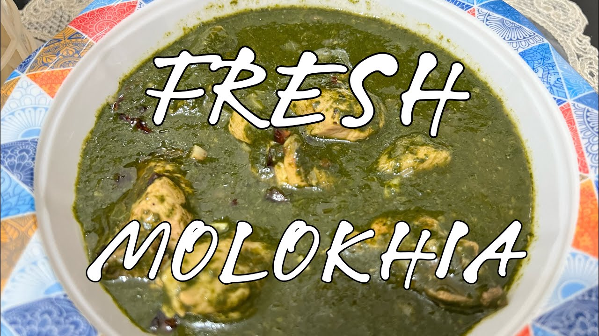

HOME COOKBOOK
GULF • LEVANTINE • EGYPTIAN CUISINE
Daily Cooking Guide for Household Staff
All recipes: 2 adults · Spice level 0/5, no chili · English with Arabic dish names
Al Maysari household · Abu Dhabi · 2026
Table of Contents
Breakfast Recipes
Salad Recipes
Main Course Recipes
Kitchen Safety & Hygiene
House rules
- No spicy food in this house. No chili, chili flakes, cayenne, hot sauce, harissa or spicy spice mixes. Check labels of ready sauces and spice blends; if it says "hot" or "chili", do not use it.
- Keep traditional Arabic flavours: cardamom, cinnamon, turmeric, cumin, coriander, saffron, bay leaf, cloves, black lime, sumac. Black or white pepper only in very small amounts.
- Breakfast beans are always in red tomato sauce, never sweet baked beans.
- Do not add lemon juice to apples or any fruit.
- Check expiry dates before using any product.
- If products from the supermarket arrive spoiled, damaged or missing, tell the house owner. Do not throw anything away without asking.
- Check delivered products against the invoice or the online order.
- Keep raw meat and chicken separate from vegetables and ready food, in the fridge and on the counter.
- Use a separate clean board and knife for raw chicken and meat; another for vegetables.
- Do not wash raw chicken with water; it spreads bacteria. Pat it dry with kitchen paper.
- Cook chicken to 74 C inside (no pink at the bone, juices run clear). Lamb is ready when a fork slides in easily.
- Never taste raw meat or chicken to check it.
- Wash hands with soap before cooking, after touching raw meat, and after the phone. Clean surfaces before and after.
- Leftovers: cool within 1 hour, closed container, fridge up to 3 days, label with the day. Reheat until steaming hot all through. Reheat only once.
Measurement Conversion Guide
| 1 cup | 250 ml |
| 1/2 cup | 125 ml |
| 1/3 cup | 80 ml |
| 1/4 cup | 60 ml |
| 1 tbsp (tablespoon) | 15 ml |
| 1 tsp (teaspoon) | 5 ml |
| 1 cup basmati rice | 200 g |
| 1 cup flour | 125 g |
| 1 cup sugar | 200 g |
| 1 medium onion | 120 g |
| 1 medium tomato | 120 to 150 g |
| 1 large egg | 55 to 60 g |
| 1 kg | 1000 g |
| 1 L | 1000 ml |
Oven
| Low | 160 C |
| Medium | 180 C |
| Hot | 200 C |
| Very hot / grill finish | 220 to 230 C |
Use the measuring cups and spoons in the drawer. Level the spoon with a knife. Do not guess.
Basic Cooking Techniques
- Golden onion
- Medium heat, 2 tbsp oil, stir often, 6 to 10 minutes. Soft and light gold is right. Dark brown or black is burnt: throw away and start again.
- Washing and soaking rice
- Cover with cold water, swirl, pour off. Repeat 4 to 5 times until the water is almost clear. Soak 20 to 30 minutes, then drain well.
- Cooking rice (absorption)
- Add the measured liquid, boil 2 minutes, cover with a tight lid, lowest heat, no stirring, no opening, for the time in the recipe. Rest 5 minutes off the heat, then fluff with a fork.
- Browning meat or chicken
- Pat dry. Hot pan, do not crowd, do not move the pieces for the first 2 to 3 minutes so they get colour.
- Simmer
- Small bubbles only, not a rolling boil. Lower the heat until you see a gentle bubble every second.
- Checking chicken is cooked
- Thermometer 74 C at the thickest part, or cut next to the bone: no pink, juices clear.
- Checking lamb is tender
- A fork slides in and the meat separates easily. If it is hard, add a little water and cook longer.
- Grilling in a pan
- Heat the dry pan until very hot (a drop of water dances). Oil the food, not the pan. Do not move it until it releases by itself.
- Boiling eggs
- Eggs in boiling water: 6 min soft, 8 min medium, 10 min hard. Then cold water for 2 minutes.
- Resting
- Let meat, chicken and rice rest 5 to 10 minutes before serving so juices settle.
Pasolla
فاصوليا بيضاء بالصلصة
Cuisine: Gulf · Category: Breakfast · Recipe B1
Prep 10 minCook 18 minTotal 28 minServings 2 AdultsDifficulty Easy
Equipment: blender, medium pot 20 cm with lid, can opener, sieve, wooden spoon, chopping board for vegetables
SPICE LEVEL: 0/5 - NO CHILI - NON-SPICY
Final dish photograph: to be added
Spice note: Source recipe has 1 fresh hot pepper, which is removed; colour and aroma come from the sweet paprika and tomato paste already in the source, and black pepper is kept at 1/4 tsp.
Part 1 - White Beans in Tomato Sauce
Ingredients (2 adults)
| Canned white beans (cannellini or butter beans) (drained and rinsed) | 1 can (400 g, about 240 g drained) |
| Onion, roughly chopped | 1 small (80 g) |
| Garlic cloves | 2 pcs |
| Tomatoes, ripe, roughly chopped | 2 medium (250 g) |
| Tomato paste | 1 tbsp |
| Vegetable oil | 1 1/2 tbsp |
| Ground cumin | 1/2 tsp |
| Sweet paprika | 1/2 tsp |
| Onion powder (optional, as in the source) | 1/2 tsp |
| Salt | 1/2 tsp |
| Black pepper, ground | 1/4 tsp |
| Hot water | 1/2 cup (120 ml) |
| Fresh coriander, chopped | 2 tbsp |
Preparation before cooking
- Open the can of beans, pour the beans into a sieve, rinse under cold water for 20 seconds and leave to drain.
- Peel and roughly chop 1 small onion and 2 garlic cloves. Roughly chop 2 tomatoes.
- Put the onion, garlic and tomatoes in the blender and blend for 20 to 30 seconds until smooth.
- Measure 1/2 cup hot water from the kettle. Chop 2 tbsp fresh coriander and keep it for the end.
Cooking instructions
- Heat 1 1/2 tbsp vegetable oil in a medium pot 20 cm over medium heat for 1 minute until it shimmers.
- Pour in the blended onion, garlic and tomato mixture and stir on medium heat for 6 to 8 minutes until it thickens, darkens slightly and the raw onion smell is gone.
- Add 1 tbsp tomato paste, 1/2 tsp cumin, 1/2 tsp sweet paprika, 1/2 tsp onion powder, 1/2 tsp salt and 1/4 tsp black pepper. Stir for 1 minute until the paste is blended in and smells toasted.
- Add the drained beans and 1/2 cup hot water. Stir gently so the beans do not break, bring to a gentle bubble on medium heat, then cover and simmer on low heat for 8 to 10 minutes until the sauce is thick enough to coat the beans and does not run across the pot when you drag the spoon through it.
- Turn off the heat, stir in the 2 tbsp chopped coriander and leave covered for 2 minutes before serving.
Common mistakes
- Sauce watery -> simmer uncovered for the last 3 minutes until it thickens; add water only 1/2 cup at the start.
- Beans broken and mushy -> stir gently with a wooden spoon and simmer on low; never boil hard once the beans are in.
- Sauce tastes raw and sharp -> cook the blended onion and tomato the full 6 to 8 minutes before adding the paste and spices.
- Too salty -> canned beans already contain salt; rinse them and keep the added salt at 1/2 tsp, then taste at the end.
- Coriander turns dark and loses aroma -> add it only after the heat is off.
Serving instructions
Spoon the beans into a shallow bowl and smooth the top. Drizzle 1 tsp olive oil over the top and add a few whole coriander leaves. Serve warm with Arabic bread, sliced cucumber and a wedge of lemon; it also pairs with B3 Boiled Egg.
Food safety and storage
- Check the can is not dented or bulging before opening.
- Cool leftovers within 1 hour; keep in a closed container in the fridge for 2 to 3 days.
- Reheat in a pot with 2 tbsp water until steaming hot throughout.
Watch the cooking video
Scan the QR code to watch the cooking instructions.
Original Arabic recipe reference: Cookpad (cookpad.com) · Chef: w (@alshareef), home cook, Makkah · ايدام فاصوليه بيضا معلبه ·
https://cookpad.com/sa/%D9%88%D8%B5%D9%81%D8%A7%D8%AA/13743910 · Verification: Verified (page opened and read)
Adapted: Scaled from 1 can beans with 2 onions, 3 garlic cloves and 4 tomatoes (about 5 servings) to 1 can beans with 1 small onion, 2 garlic cloves and 2 tomatoes for 2 adults; the 1 fresh hot pepper is removed; no sugar is used; the source gives no oil, water, heat level, minutes or servings, so 1 1/2 tbsp oil, 1/2 cup hot water, medium then low heat and 8 to 10 minutes simmer are set as the professional standard.
Fried Egg
بيض مقلي
Cuisine: Egyptian · Category: Breakfast · Recipe B2
Prep 5 minCook 8 minTotal 13 minServings 2 AdultsDifficulty Easy
Equipment: non-stick pan 26 cm, thin spatula, small bowl for cracking eggs, chopping board for vegetables
SPICE LEVEL: 0/5 - NO CHILI - NON-SPICY
Final dish photograph: to be added
Spice note: Source recipe contains no chili.
Part 1 - Fried Eggs with Onion, Both Sides Firm
Ingredients (2 adults)
| Eggs (2 per adult) | 4 pcs |
| Onion, finely chopped | 1/2 medium (60 g) |
| Olive oil | 1 1/2 tbsp |
| Salt | 1/4 tsp |
Preparation before cooking
- Peel and finely chop 1/2 onion on the vegetable board.
- Keep the 4 eggs whole; do not beat them. Have a small bowl ready to crack each egg into first so a broken shell can be removed.
Cooking instructions
- Heat 1 1/2 tbsp olive oil in a non-stick pan 26 cm over medium heat for 1 minute. Add the 1/2 chopped onion and stir for 3 to 4 minutes until soft and just turning golden. Spread the onion evenly across the pan.
- Crack each of the 4 eggs into the small bowl one at a time and slide them onto the onion, spaced apart. Sprinkle 1/4 tsp salt over the eggs. Fry on medium heat for 2 minutes without moving them until the whites are opaque and the edges are lightly crisp.
- Slide the thin spatula under each egg and flip it over. Fry the second side on medium heat for 1 1/2 to 2 minutes until the yolk is firm when pressed with the spatula and no runny yolk shows at the edge.
- Lift the eggs out with the spatula, bringing the onion with them, and serve at once.
Common mistakes
- Eggs stick and tear when flipped -> use a non-stick pan, let the first side cook the full 2 minutes, and slide a thin spatula fully under the egg before turning.
- Yolk still runny -> this recipe wants a firm yolk; give the second side 2 minutes and press gently to check it is set.
- Onion burns before the eggs go in -> keep the heat at medium and stop at light golden, 3 to 4 minutes.
- Edges burnt and brown -> the heat is too high; medium only, and 1 1/2 tbsp oil is enough.
- Shell in the pan -> always crack into a small bowl first.
Serving instructions
Place 2 eggs on each plate with the onion on top. Serve with warm Arabic bread, sliced tomato and cucumber, and olives. A pinch of sumac on the eggs adds colour and a lemony note without heat.
Food safety and storage
- Cook until the yolk is firm; this is the fully cooked version, safe for everyone.
- Wash hands after handling raw egg and keep eggs in the fridge until needed.
- Best eaten at once; fried eggs do not keep well.
Watch the cooking video
Scan the QR code to watch the cooking instructions.
Boiled Egg
بيض مسلوق
Cuisine: Other · Category: Breakfast · Recipe B3
Prep 2 minCook 15 minTotal 17 minServings 2 AdultsDifficulty Easy
Equipment: small pot 16 cm with lid, slotted spoon, bowl of cold water, kitchen timer
SPICE LEVEL: 0/5 - NO CHILI - NON-SPICY
Final dish photograph: to be added
Spice note: Source recipe contains no chili.
Part 1 - Boiled Eggs, Soft, Medium or Hard
Ingredients (2 adults)
| Eggs, large (2 per adult; straight from the fridge) | 4 pcs |
| Water (enough to cover the eggs by 2 cm) | 4 cups (1 L) |
| Salt (in the water, helps seal any crack) | 1/2 tsp |
Preparation before cooking
- Fill a bowl with cold water and keep it next to the stove for cooling the eggs.
- Set the kitchen timer ready. Decide the doneness: soft (6 minutes, runny yolk), medium (8 minutes, jammy yolk) or hard (10 minutes, fully firm yolk).
Cooking instructions
- Place the 4 eggs in a small pot 16 cm in one layer, add 4 cups cold water so the eggs are covered by 2 cm, and add 1/2 tsp salt.
- Set the pot on high heat uncovered and bring to a full boil; this takes about 5 to 6 minutes. Watch for large bubbles rising all over the surface.
- As soon as the water boils, lower the heat to medium-low so it bubbles gently, and start the timer: 6 minutes for soft, 8 minutes for medium, 10 minutes for hard.
- When the timer rings, lift the eggs out with the slotted spoon straight into the bowl of cold water and leave them for 3 to 5 minutes until cool enough to handle; this stops the cooking and makes peeling easier.
- Tap each egg all around on the counter, roll it gently and peel under a thin stream of cold water. Soft eggs: cut the top off and eat from the shell with a spoon. Medium and hard: peel fully and cut in half; a hard egg shows a pale yellow yolk with no grey ring.
Common mistakes
- Grey ring around the yolk and rubbery white -> the egg was boiled too long or not cooled; stop at 10 minutes maximum and cool at once in cold water.
- Eggs crack in the pot -> start them in cold water, not boiling water, and keep the boil gentle once timing starts.
- Hard to peel -> cool in cold water for at least 3 minutes and peel under running water; eggs a week old peel better than very fresh ones.
- Soft egg too runny or too set -> time from the moment the water boils, not from when the pot goes on the stove.
- Timing off with many eggs -> this timing is for 4 large eggs in a small pot; more eggs need a bigger pot so the water returns to the boil quickly.
Serving instructions
Soft eggs: stand in egg cups, slice the top off, add a pinch of salt and serve with toast fingers. Medium or hard eggs: peel, halve lengthwise and arrange cut side up on a plate with a pinch of salt and a little sumac or cumin. Serve with Arabic bread, olives, cucumber and tomato; hard eggs are the ones to pair with B14 Chicken Mix (see B15).
Food safety and storage
- Hard-boiled eggs (10 minutes) are fully cooked and safe for everyone; soft and medium eggs have a runny or jammy yolk and are best for healthy adults only.
- Cool within 1 hour; keep peeled or unpeeled hard eggs in a closed container in the fridge for up to 3 days.
- Do not reheat soft eggs; eat them at once.
Watch the cooking video
Scan the QR code to watch the cooking instructions.
Original Arabic recipe reference: Sayidaty Kitchen (kitchen.sayidaty.net) · Chef: Sayidaty Kitchen editorial · مدة سلق البيض بالماء ·
https://kitchen.sayidaty.net/node/25365 · Verification: Verified (page opened and read)
Adapted: Scaled from 8 eggs for 4 people to 4 eggs for 2 adults keeping the cold-water start and 1/2 tsp salt from the source; the source gives one standard timing (10 minutes after the boil) and inconsistent size-based timings, so the household timings of 6 minutes soft, 8 minutes medium and 10 minutes hard from the boil, followed by cold water, are used as the professional standard.
Chicken Liver
كبدة دجاج بدبس الرمان
Cuisine: Levantine · Category: Breakfast · Recipe B4
Prep 15 minCook 12 minTotal 27 minServings 2 AdultsDifficulty Medium
Equipment: wide non-stick skillet 28 cm, chopping board for raw chicken, second board for vegetables, small sharp knife, kitchen paper, meat thermometer, wooden spoon
SPICE LEVEL: 0/5 - NO CHILI - NON-SPICY| Chicken Type | Boneless |
|---|
| Chicken Cut | Cubes |
|---|
| Skin | n/a |
|---|
| Weight | 300 g |
|---|
| Preparation | Whole lobes trimmed and cut in half (pieces of 3 to 4 cm) |
|---|
| Cooking Method | Fried |
|---|
Final dish photograph: to be added
Spice note: Source recipe has 2 minced chili peppers, which are removed; the tang comes from the pomegranate molasses and lemon juice, with black pepper kept at 1/4 tsp.
Part 1 - Chicken Liver with Pomegranate Molasses, Garlic and Lemon
Ingredients (2 adults)
| Chicken liver (cleaned, green spots and membrane removed) | 300 g |
| Olive oil | 2 tbsp |
| Garlic, finely chopped | 2 cloves |
| Pomegranate molasses | 2 1/2 tbsp |
| Lemon juice, fresh | 1 tbsp |
| Salt | 1/2 tsp |
| Black pepper, ground | 1/4 tsp |
| Fresh parsley, chopped (for serving) | 2 tbsp |
Preparation before cooking
- On the raw-chicken board, look over the 300 g liver. With the small knife cut away any green or yellow-green spots (bile) and any white stringy membrane or fat, and separate the lobes. Cut large lobes in half so all pieces are 3 to 4 cm.
- Rinse the pieces gently in a bowl of cold water (not under a hard tap, to avoid splashing), drain, and pat very dry with kitchen paper; dry liver browns instead of boiling.
- Peel and finely chop 2 garlic cloves and chop 2 tbsp parsley on the vegetable board. Squeeze 1 tbsp lemon juice. Measure 2 1/2 tbsp pomegranate molasses.
Cooking instructions
- Heat 2 tbsp olive oil in a wide non-stick skillet 28 cm over medium-high heat for 1 to 2 minutes until it shimmers.
- Add half of the liver pieces in one layer with space between them. Leave them for 2 minutes without stirring until the underside is brown, then turn and cook 2 minutes more. Lift onto a plate. Repeat with the second half of the liver; frying in two batches keeps the pan hot so the liquid evaporates instead of pooling.
- Return all the liver to the skillet on medium-high heat and stir for 2 to 3 minutes until any liquid in the pan has evaporated and the pieces are brown all over.
- Lower the heat to medium, add the 2 chopped garlic cloves, 1/2 tsp salt and 1/4 tsp black pepper, and stir for 1 minute until the garlic smells fragrant but is not brown.
- Pour in 2 1/2 tbsp pomegranate molasses and 1 tbsp lemon juice, lower the heat to low and stir for 1 to 2 minutes until the sauce is glossy and clings to the liver.
- Cut the thickest piece in half: it must be brown or grey all the way through with no pink, and the thermometer must read 74 C. If still pink, cook 1 to 2 minutes more. Turn off the heat.
Common mistakes
- Liver tastes bitter -> green bile spots were left on; trim every green mark before cooking.
- Liver boils in its own juice and goes grey -> pat it very dry and fry in two batches on medium-high heat so the pan stays hot.
- Liver tough and dry -> once it is brown and reads 74 C stop at once; it needs only 8 to 10 minutes total.
- Molasses burns and turns black -> add it on low heat at the end for 1 to 2 minutes only.
- Garlic burnt and sharp -> add it after the liver is browned, on medium heat, for 1 minute only.
Serving instructions
Pile the liver on a warm plate and spoon the pan sauce over it. Scatter the 2 tbsp chopped parsley on top and add a wedge of lemon on the side. Serve with warm Arabic bread, sliced onion rings and B7 Potato, as the source suggests fried potatoes alongside.
Food safety and storage
- Chicken liver is safe only when cooked to 74 C with no pink inside; check the thickest piece.
- Keep raw liver in the fridge and cook it on the day of purchase or the next day; use a separate board and knife and wash hands and board with hot soapy water afterwards.
- Cool leftovers within 1 hour; keep in a closed container in the fridge for 2 days and reheat until steaming hot.
Watch the cooking video
Scan the QR code to watch the cooking instructions.
Original Arabic recipe reference: Manal Alalem (manalonline.com) · Chef: Manal Alalem · كبدة الدجاج بدبس الرمان ·
https://www.manalonline.com/%D9%83%D8%A8%D8%AF%D8%A9-%D8%A7%D9%84%D8%AF%D8%AC%D8%A7%D8%AC-%D8%A8%D8%AF%D8%A8%D8%B3-%D8%A7%D9%84%D8%B1%D9%85%D8%A7%D9%86/ · Verification: Verified (page opened and read)
Adapted: Scaled from 1 kg liver, 1/2 cup olive oil and 1/2 cup pomegranate molasses to 300 g liver, 2 tbsp oil and 2 1/2 tbsp molasses for 2 adults; the 2 minced chili peppers are removed; 2 garlic cloves and 1 tbsp lemon juice are a household addition in the Lebanese style (they are not in the source); the source gives no servings, minutes, parsley quantity or cleaning step, so 2 tbsp parsley, batch frying, 74 C check and the trimming of bile spots are set as the professional standard.
Chickpeas
حمص بالكمون (بليلة)
Cuisine: Levantine · Category: Breakfast · Recipe B5
Prep 10 minCook 4 minTotal 14 minServings 2 AdultsDifficulty Easy
Equipment: small pot 16 cm, can opener, sieve, medium mixing bowl, lemon squeezer, chopping board for vegetables
SPICE LEVEL: 0/5 - NO CHILI - NON-SPICY
Final dish photograph: to be added
Spice note: Source recipe has 1/8 tsp shatta (chili), which is removed; the zing comes from the lemon juice and the cumin.
Part 1 - Warm Chickpeas with Cumin and Lemon
Ingredients (2 adults)
| Canned chickpeas (keep 1/2 cup of the can liquid for warming) | 1 can (400 g, about 240 g drained) |
| Onion, very finely chopped | 2 tbsp (about 1/4 small onion) |
| Fresh coriander, chopped | 2 tbsp |
| Garlic, crushed | 1 clove |
| Lemon juice, fresh | 1 1/2 tbsp (about 1/2 lemon) |
| Olive oil | 1 tbsp, plus 1 tsp for serving |
| Ground cumin | 1/2 tsp |
| Salt (canned chickpeas already contain salt) | 1/4 tsp |
Preparation before cooking
- Open the can of chickpeas. Pour 1/2 cup of the can liquid into a small pot 16 cm, then drain the rest of the chickpeas in a sieve and rinse for 10 seconds.
- Finely chop 2 tbsp onion and 2 tbsp fresh coriander and crush 1 garlic clove on the vegetable board.
- Squeeze 1 1/2 tbsp lemon juice.
- In a medium bowl mix the chopped onion, coriander, crushed garlic, 1 tbsp olive oil, 1/2 tsp cumin and 1/4 tsp salt.
Cooking instructions
- Put the drained chickpeas into the small pot with the 1/2 cup can liquid and set over medium heat. Stir and heat for 3 to 4 minutes until the liquid is steaming and the chickpeas are warm through; do not let it boil hard.
- Lift the chickpeas out with a slotted spoon (leave most of the liquid behind) and tip them into the bowl with the onion, coriander, garlic, oil, cumin and salt. Stir for 30 seconds until every chickpea is coated and the cumin smells fragrant from the warmth.
- Pour the 1 1/2 tbsp lemon juice over the chickpeas and stir again. Taste one chickpea and add a pinch more salt only if needed. Serve at once while warm.
Common mistakes
- Dish is dry and dull -> keep the chickpeas moist with 1 to 2 tbsp of the warm can liquid and the full 1 1/2 tbsp lemon.
- Raw onion too sharp -> chop it very fine and use only 2 tbsp; it softens in the warm chickpeas.
- Too salty -> rinse the chickpeas and add only 1/4 tsp salt, then taste.
- Chickpeas mushy -> warm them gently for 3 to 4 minutes; do not boil.
- Garlic harsh -> crush it to a paste with the salt so it blends in instead of sitting in chunks.
Serving instructions
Spoon the warm chickpeas into two small bowls. Drizzle 1 tsp olive oil over the top and add a few coriander leaves and a pinch of cumin. Serve with warm Arabic bread, pickles and lemon wedges; it pairs well with B3 Boiled Egg.
Food safety and storage
- Check the can is not dented or bulging before opening.
- Cool leftovers within 1 hour; keep in a closed container in the fridge for 2 to 3 days.
- Can be eaten cold from the fridge or rewarmed in a pot with 2 tbsp water until steaming.
Watch the cooking video
Scan the QR code to watch the cooking instructions.
English Cooking Video: Not Available
Original Arabic recipe reference: Shamlola (shamlola.com) · Chef: Shamlola editorial · طريقة عمل الحمص بالكمون و الليمون ·
https://www.shamlola.com/recipes/%D8%B7%D8%B1%D9%8A%D9%82%D8%A9-%D8%B9%D9%85%D9%84-%D8%A7%D9%84%D8%AD%D9%85%D8%B5-%D8%A8%D8%A7%D9%84%D9%83%D9%85%D9%88%D9%86-%D9%88-%D8%A7%D9%84%D9%84%D9%8A%D9%85%D9%88%D9%86 · Verification: Verified (page opened and read)
Adapted: Scaled from 1 kg boiled chickpeas, 1/2 onion, 2 garlic cloves, 1 lemon, 2 tbsp oil and 1 tsp cumin for 5 people to 1 can (400 g) chickpeas, 2 tbsp onion, 1 garlic clove, 1/2 lemon, 1 tbsp oil and 1/2 tsp cumin for 2 adults; the 1/8 tsp shatta is removed; the source serves the dish cold with no heating step, so the 3 to 4 minute warming in the can liquid for a breakfast balila is a household addition; the source does not say canned or dried, so canned is used.
Sandwich Pizza
بيتزا التوست
Cuisine: Other · Category: Breakfast · Recipe B6
Prep 15 minCook 22 minTotal 37 minServings 2 AdultsDifficulty Easy
Equipment: oven, baking tray with baking paper, non-stick pan 26 cm, pastry brush, small bowl for melted butter, chopping board for vegetables
SPICE LEVEL: 0/5 - NO CHILI - NON-SPICY
Final dish photograph: to be added
Spice note: Source recipe contains no chili; black pepper is kept at 1/8 tsp for 2 adults.
Part 1 - Toast Pizza with Vegetable Sauce and Cheese
Ingredients (2 adults)
| Toast bread slices | 4 pcs |
| Butter, melted | 1 tbsp |
| Olive oil | 1 tsp |
| Onion, finely chopped | 1/2 small (40 g) |
| Garlic, crushed | 1 clove |
| Dried oregano | 1/2 tsp |
| Green bell pepper, small dice | 1/4 pcs (30 g) |
| Red bell pepper, small dice | 1/4 pcs (30 g) |
| Sweet corn, canned, drained (optional, as in the source) | 1/4 cup (40 g) |
| Ready pizza sauce (check the label says no chili) | 1/2 cup (120 ml) |
| Mozzarella, grated | 1/2 cup (50 g) |
| Parmesan, grated | 2 tbsp |
| Salt | 1/4 tsp |
| Black pepper, ground | 1/8 tsp |
Preparation before cooking
- Turn the oven on to 200 C and line a baking tray with baking paper.
- Melt 1 tbsp butter in a small bowl (20 seconds in the microwave). Brush both sides of the 4 toast slices with it.
- Finely chop 1/2 small onion, crush 1 garlic clove and dice 1/4 green and 1/4 red bell pepper into 5 mm pieces on the vegetable board. Drain 1/4 cup corn.
- Grate 1/2 cup mozzarella and 2 tbsp parmesan and mix them in a bowl. Measure 1/2 cup pizza sauce.
Cooking instructions
- Heat a non-stick pan 26 cm over medium heat for 1 minute. Lay 2 buttered toast slices in the pan and toast 1 1/2 minutes per side until golden. Repeat with the other 2 slices and set all 4 on the baking tray.
- In the same pan add 1 tsp olive oil, the 1/2 chopped onion, 1 crushed garlic clove and 1/4 tsp salt and stir on medium heat for 3 minutes until the onion is soft and clear.
- Add 1/2 tsp oregano, the diced green and red bell pepper and the 1/4 cup corn and stir on medium heat for 3 to 4 minutes until the pepper is soft but still bright in colour.
- Add 1/2 cup pizza sauce and 1/8 tsp black pepper, stir for 1 minute until hot and thick, then turn off the heat.
- Spread the vegetable sauce evenly over the 4 toast slices right to the edges (about 2 tbsp each). Sprinkle the mozzarella and parmesan mix over the top.
- Bake in the middle of the oven at 200 C for 8 to 10 minutes until the cheese is melted and bubbling and the edges of the bread are crisp and golden. Rest 1 minute before cutting each slice in half diagonally.
Common mistakes
- Bread soggy -> toast it in the pan first and let the sauce thicken for 1 minute before spreading.
- Cheese burnt before the bread crisps -> bake in the middle of the oven at 200 C and check at 8 minutes.
- Pizza tastes hot -> some ready pizza sauces contain chili; read the label and choose a plain tomato and herb sauce.
- Vegetables watery on top -> dice them small and cook them 3 to 4 minutes so their water cooks off.
- Too little cheese to hold the topping -> use the full 1/2 cup mozzarella; the parmesan gives flavour, the mozzarella binds.
Serving instructions
Place 2 slices (4 halves) on each plate while hot. Sprinkle a pinch of dried oregano on top and add a few leaves of fresh basil if available. Serve with a small cucumber and tomato salad or S5 Green Mix Salad.
Food safety and storage
- Use oven gloves; the tray and the melted cheese are very hot.
- Best eaten at once; leftovers can be kept in a closed container in the fridge for 1 day and reheated in the oven at 180 C for 5 minutes until the cheese is hot again.
- Keep cheese refrigerated until use.
Watch the cooking video
Scan the QR code to watch the cooking instructions.
English Cooking Video: Not Available
Original Arabic recipe reference: Sayidaty Kitchen (kitchen.sayidaty.net) · Chef: Sayidaty Kitchen editorial · بيتزا التوست السهلة ·
https://kitchen.sayidaty.net/node/6450 · Verification: Verified (page opened and read)
Adapted: Scaled from 12 toast slices, 2 onions, 1 of each bell pepper and 2 cups sauce for 5 people to 4 slices, 1/2 small onion, 1/4 of each pepper and 1/2 cup sauce for 2 adults; the source's 1/4 cup mozzarella for 12 slices is very little, so cheese is raised to 1/2 cup mozzarella and 2 tbsp parmesan for 4 slices; oven unit not stated in the source so 200 C is used; baking time reduced from 15 to 8 to 10 minutes for 4 slices; the source gives no minutes for the vegetables, so 3 minutes onion and 3 to 4 minutes peppers are set as the professional standard.
Potato
بطاطس مقلية بالكمون والثوم
Cuisine: Egyptian · Category: Breakfast · Recipe B7
Prep 15 min (includes 10 min soaking the cubes)Cook 16 minTotal 31 minServings 2 AdultsDifficulty Easy
Equipment: non-stick pan 26 cm, bowl of cold water, clean kitchen towel, spatula, chopping board for vegetables, kitchen paper
SPICE LEVEL: 0/5 - NO CHILI - NON-SPICY
Final dish photograph: to be added
Spice note: Source recipe has 1/2 tsp shatta (hot chili), which is removed; 1/2 tsp ground cumin is added for the Egyptian cumin flavour and the garlic and coriander give the aroma.
Part 1 - Pan-Fried Potato Cubes with Cumin and Garlic
Ingredients (2 adults)
| Potatoes, peeled (cut in 1.5 cm cubes) | 2 medium (400 g) |
| Vegetable oil | 3 tbsp |
| Ground cumin (household addition, not in the source) | 1/2 tsp |
| Dried ground coriander | 1/2 tsp |
| Garlic, crushed | 1 clove |
| Fresh coriander, chopped | 1 tbsp |
| Salt | 1/2 tsp |
Preparation before cooking
- Peel 2 potatoes and cut them into even 1.5 cm cubes on the vegetable board.
- Put the cubes in a bowl of cold water for 10 minutes to wash off surface starch, then drain and dry them completely on a clean kitchen towel; wet potatoes spit in the oil and do not crisp.
- Crush 1 garlic clove and chop 1 tbsp fresh coriander. Mix 1/2 tsp cumin, 1/2 tsp dried coriander and 1/2 tsp salt in a small cup.
Cooking instructions
- Heat 3 tbsp vegetable oil in a non-stick pan 26 cm over medium-high heat for 1 to 2 minutes until a cube of potato sizzles at once when it touches the oil.
- Add the dried potato cubes in one layer and leave them for 3 minutes without stirring so the underside turns golden.
- Turn the cubes with the spatula and continue frying on medium-high heat for 9 to 11 minutes more, turning every 3 minutes, until all sides are golden and crisp and a cube is soft inside when pressed with the spatula.
- Lower the heat to low. Sprinkle the cumin, dried coriander and salt mix over the potatoes and stir for 30 seconds so the spices toast lightly in the oil.
- Add the 1 crushed garlic clove and 1 tbsp fresh coriander and stir for 30 to 60 seconds until the garlic smells fragrant but is not brown. Turn off the heat and lift the potatoes onto kitchen paper for 30 seconds to drain.
Common mistakes
- Potatoes soft and pale, not crisp -> dry the cubes fully after soaking, use medium-high heat and do not crowd the pan; fry in 2 batches if the cubes are more than one layer.
- Outside brown but inside hard -> cubes too big or heat too high; keep to 1.5 cm cubes and turn the heat down to medium after the first 3 minutes if they brown too fast.
- Garlic burnt and bitter -> add it on low heat for the last minute only.
- Spices taste raw -> stir them in the hot oil for 30 seconds before the garlic goes in.
- Oil spits -> the potatoes were wet; towel-dry them before they go in.
Serving instructions
Pile the potatoes in a shallow bowl and sprinkle a pinch of cumin and a few coriander leaves on top. Add a lemon wedge on the side to squeeze over. Serve hot with Arabic bread; it is the classic partner for B4 Chicken Liver and B10 Sunny-Side-Up Egg.
Food safety and storage
- Keep the pan handle turned inwards and never leave hot oil unattended; have the lid nearby to cover the pan if the oil flares.
- Best eaten at once; leftovers lose their crispness but keep 2 days in a closed container in the fridge and can be reheated in a dry pan on medium heat for 4 to 5 minutes.
- Let the used oil cool fully before discarding it.
Watch the cooking video
Scan the QR code to watch the cooking instructions.
Original Arabic recipe reference: Sayidaty Kitchen (kitchen.sayidaty.net) · Chef: Sayidaty Kitchen editorial · البطاطا بالثوم والكزبرة الخضراء ·
https://kitchen.sayidaty.net/node/2577 · Verification: Verified (page opened and read)
Adapted: Scaled from 5 potatoes, 2 garlic cloves, 2 tbsp fresh coriander and 1 tsp dried coriander for 5 people to 2 potatoes (400 g), 1 garlic clove, 1 tbsp fresh coriander and 1/2 tsp dried coriander for 2 adults; oil kept at 3 tbsp for pan frying; the 1/2 tsp shatta is removed and 1/2 tsp ground cumin is added as a household choice for the Egyptian cumin style; the source gives no heat level, minutes or cube size, so 1.5 cm cubes, a 10 minute cold-water soak, medium-high heat and 12 to 14 minutes frying are set as the professional standard.
Feta Cheese Sandwich
ساندويش الجبنة البيضاء
Cuisine: Levantine · Category: Breakfast · Recipe B8
Prep 10 minCook 5 minTotal 15 minServings 2 AdultsDifficulty Easy
Equipment: oven grill (or toaster oven), baking tray, pastry brush, bread knife, chopping board for vegetables
SPICE LEVEL: 0/5 - NO CHILI - NON-SPICY
Final dish photograph: to be added
Spice note: Source recipe contains no chili.
Part 1 - Grilled Feta, Tomato and Olive Sandwich
Ingredients (2 adults)
| Feta or Arabic white cheese, cut in 1 cm slices | 150 g |
| French bread (small baguette pieces, 20 cm each) (or 2 Arabic bread loaves) | 2 pcs |
| Olive oil | 2 tbsp |
| Tomato, sliced 5 mm | 1 medium (120 g) |
| Arugula (rocket) leaves (washed and dried) | 6 leaves (about 1/2 cup) |
| Olives, pitted, sliced | 3 tbsp |
Preparation before cooking
- Turn the oven grill on to high and let it heat for 5 minutes with the rack 15 cm below the element.
- Cut each of the 2 bread pieces open lengthwise without separating the halves. Brush the inside of both halves with the 2 tbsp olive oil.
- Slice the 150 g cheese into 1 cm slices and the tomato into 5 mm rounds on the vegetable board. Slice 3 tbsp olives. Wash and dry 6 arugula leaves.
Cooking instructions
- Lay the 2 opened breads on the baking tray oiled side up. On the bottom half of each, layer 3 arugula leaves, half of the cheese slices, half of the sliced olives and half of the tomato slices. Fold the top half over and press gently.
- Place the tray under the hot grill and grill for 4 to 5 minutes until the bread is crisp and golden on top and the cheese is soft and warm at the edges when you open the sandwich a little. Turn the sandwiches over halfway if the top browns faster than the bottom.
- Remove, rest 1 minute, and cut each sandwich in half across.
Common mistakes
- Bread burnt before the cheese warms -> keep the rack 15 cm below the grill element and check at 3 minutes.
- Sandwich too salty -> feta and olives are both salty; add no salt at all and choose a milder white cheese if the family prefers.
- Tomato makes the bread wet -> slice it 5 mm, not thinner, and put the cheese between the tomato and the bread.
- Arugula wilted and bitter -> use only 3 leaves per sandwich and keep them in the middle, away from the hot bread.
- Cheese slices fall apart -> cut the block cold straight from the fridge with a wet knife.
Serving instructions
Place one sandwich, cut in two halves, on each plate. Add a few extra olives, cucumber sticks and a sprig of fresh mint on the side. Serve warm with sweet tea; the source notes it can also be served cold without grilling.
Food safety and storage
- Use oven gloves and watch the grill the whole time; grilling is fast.
- Keep cheese refrigerated until the sandwich is assembled.
- Best eaten at once; an ungrilled sandwich can be wrapped and kept in the fridge for up to 4 hours.
Watch the cooking video
Scan the QR code to watch the cooking instructions.
English Cooking Video: Not Available
Original Arabic recipe reference: Sayidaty Kitchen (kitchen.sayidaty.net) · Chef: Sayidaty Kitchen editorial · ساندويش الجبن الأبيض بالزيتون ·
https://kitchen.sayidaty.net/node/26475 · Verification: Verified (page opened and read)
Adapted: Source already serves 2 with 2 French breads, 6 arugula leaves, 1 tomato, 3 tbsp olives and 2 tbsp olive oil; the cheese quantity is given only as '1 block', so 150 g is set as the professional standard; the source gives 'about 5 minutes under the grill' with no rack position, so 15 cm below a high grill with a check at 3 minutes is added.
Fried Halloumi
حلوم مقلي
Cuisine: Levantine · Category: Breakfast · Recipe B9
Prep 8 minCook 8 minTotal 16 minServings 2 AdultsDifficulty Easy
Equipment: non-stick pan 26 cm, shallow bowl for flour, tongs or spatula, kitchen paper, chopping board for vegetables
SPICE LEVEL: 0/5 - NO CHILI - NON-SPICY
Final dish photograph: to be added
Spice note: Source recipe contains no chili; the video garnish uses Aleppo pepper flakes, which are not used here.
Part 1 - Flour-Dusted Fried Halloumi with Mint and Lemon
Ingredients (2 adults)
| Halloumi cheese (cut in 1 cm slices, about 8 pcs) | 250 g (1 block) |
| Plain flour | 2 tbsp |
| Olive oil, for frying | 4 tbsp |
| Fresh mint, finely chopped | 1 tbsp |
| Olive oil, for serving | 1/2 tbsp |
| Lemon (cut in wedges) | 1/2 pcs |
Preparation before cooking
- Cut the 250 g halloumi block into 1 cm slices (about 8 slices) and pat each slice dry with kitchen paper; a dry surface fries golden instead of steaming.
- Put 2 tbsp flour in a shallow bowl. Press each slice into the flour on both sides and shake off the excess so only a thin dusting stays.
- Finely chop 1 tbsp fresh mint and cut 1/2 lemon into wedges. Line a plate with kitchen paper.
Cooking instructions
- Heat 4 tbsp olive oil in a non-stick pan 26 cm over medium-high heat for 1 to 2 minutes until a pinch of flour sizzles at once.
- Lay the floured halloumi slices in the pan in one layer with space between them (fry in 2 batches if needed). Fry for 2 to 3 minutes without moving them until the underside is deep golden and crisp.
- Turn each slice with tongs and fry the second side for 1 1/2 to 2 minutes until golden; the cheese should be soft and squeaky inside, not melted.
- Lift the slices onto the kitchen paper for 30 seconds to drain, then move them to a serving plate while still hot.
- Drizzle 1/2 tbsp olive oil over the slices and scatter the 1 tbsp chopped mint on top. Serve at once with the lemon wedges.
Common mistakes
- Halloumi rubbery and hard -> it was fried too long or served after cooling; fry 4 to 5 minutes total and eat within 5 minutes.
- Flour coating burns -> the source says high heat, but with the flour use medium-high and turn at 2 to 3 minutes.
- Cheese sticks to the pan -> let the oil heat fully and do not move the slices until the first side is golden.
- Oil spits -> pat the slices dry before flouring.
- Too salty -> halloumi is a salted cheese; add no salt, and soak the slices in cold water for 10 minutes before drying if the family finds it too salty.
Serving instructions
Arrange the golden slices overlapping on a warm plate with the lemon wedges at the side. Scatter the chopped mint and a few whole mint leaves over the top. Serve with Arabic bread, sliced tomato, cucumber and olives, or alongside B10 Sunny-Side-Up Egg.
Food safety and storage
- Keep the pan handle inwards and watch the hot oil; have the lid nearby.
- Keep halloumi refrigerated until slicing.
- Best eaten at once; cooked slices can be kept in a closed container in the fridge for 2 days and reheated in a dry non-stick pan on medium heat for 1 minute per side.
Watch the cooking video
Scan the QR code to watch the cooking instructions.
Original Arabic recipe reference: Sayidaty Kitchen (kitchen.sayidaty.net) · Chef: Sayidaty Kitchen editorial · جبنة حلوم مقلية ·
https://kitchen.sayidaty.net/node/23040 · Verification: Verified (page opened and read)
Adapted: Scaled from 500 g halloumi, 1/4 cup flour, 1/2 cup frying oil, 2 tbsp mint and 1 lemon for 4 people to 250 g halloumi, 2 tbsp flour, 4 tbsp oil, 1 tbsp mint and 1/2 lemon for 2 adults; the source says 'several minutes on high heat' with no exact timing, so medium-high heat with 2 to 3 minutes first side and 1 1/2 to 2 minutes second side is set as the professional standard; slice thickness (1 cm) is not in the source.
Sunny-Side-Up Egg
بيض عيون
Cuisine: Gulf · Category: Breakfast · Recipe B10
Prep 3 minCook 5 minTotal 8 minServings 2 AdultsDifficulty Easy
Equipment: non-stick pan 26 cm with lid, thin spatula, small bowl for cracking eggs
SPICE LEVEL: 0/5 - NO CHILI - NON-SPICY
Final dish photograph: to be added
Spice note: Source recipe contains no chili; the paprika mentioned in the source method is used as 1/8 tsp sweet paprika for colour only, and black pepper is kept at 1/8 tsp.
Part 1 - Sunny-Side-Up Eggs, Covered, Not Flipped
Ingredients (2 adults)
| Eggs (2 per adult) | 4 pcs |
| Ghee or butter | 1 1/2 tbsp |
| Salt | 1/4 tsp |
| Black pepper, ground | 1/8 tsp |
| Sweet paprika (optional, for colour) | 1/8 tsp |
Preparation before cooking
- Take the 4 eggs out of the fridge 10 minutes early if possible; room-temperature eggs cook more evenly.
- Have the pan lid and a small bowl for cracking ready next to the stove. Mix 1/4 tsp salt, 1/8 tsp black pepper and 1/8 tsp sweet paprika in a tiny cup.
Cooking instructions
- Melt 1 1/2 tbsp ghee in a non-stick pan 26 cm over medium heat for about 1 minute until it is liquid and just starting to foam; do not let it brown.
- Crack each egg into the small bowl and slide it gently into the pan, keeping the 4 eggs apart so the whites do not run together. Do not stir and do not break the yolks.
- Sprinkle the salt, pepper and paprika mix over the whites (avoid the yolks so they stay bright). Cover the pan with the lid at once and lower the heat to low.
- Cook covered on low heat for 3 minutes without lifting the lid; the steam trapped under the lid sets the top of the white while the yolk stays soft and liquid. Lift the lid: the whites must be fully white and set with no clear jelly left around the yolk, and the yolk still bright yellow and wobbly. If clear white remains, cover for 30 to 60 seconds more.
- Turn off the heat. Slide the thin spatula under each egg and lift it onto the plate without flipping, yolk side up.
Common mistakes
- Yolk cooked hard -> the heat was too high or the lid stayed on too long; low heat and 3 minutes only, then check.
- Clear raw white around the yolk -> the pan must be covered so the steam cooks the top; without a lid the top never sets.
- Bottom brown and crisp -> lower the heat as soon as the eggs go in; the ghee must not be smoking.
- Yolk broken -> crack into a small bowl first and slide the egg in close to the pan surface.
- Eggs stuck together -> use a 26 cm pan and place the eggs in four separate corners.
Serving instructions
Slide 2 eggs onto each plate, yolks up and unbroken. Sprinkle a few parsley leaves or a pinch of sumac on the whites. Serve at once with warm Arabic bread for dipping in the soft yolk, plus B7 Potato or B9 Fried Halloumi on the side.
Food safety and storage
- The yolk stays soft in this recipe, so it is for healthy adults; for a fully cooked egg use B2 Fried Egg instead.
- Use fresh, refrigerated eggs with clean, uncracked shells.
- Eat at once; sunny-side-up eggs cannot be stored or reheated.
Watch the cooking video
Scan the QR code to watch the cooking instructions.
Original Arabic recipe reference: Sayidaty Kitchen (kitchen.sayidaty.net) · Chef: Sayidaty Kitchen editorial · بيض العيون السادة ·
https://kitchen.sayidaty.net/node/30032 · Verification: Verified (page opened and read)
Adapted: Scaled from 2 eggs and 1 tbsp ghee for 1 person to 4 eggs and 1 1/2 tbsp ghee for 2 adults, keeping the source's method of medium heat to melt the ghee, then covered on low heat for 3 minutes without flipping; the source gives salt, pepper and paprika as 'a pinch', so 1/4 tsp, 1/8 tsp and 1/8 tsp are set; the doneness cue (whites set, yolk wobbly) is added as the professional standard.
Halloumi Sandwich
ساندويش حلوم
Cuisine: Levantine · Category: Breakfast · Recipe B11
Prep 10 minCook 8 minTotal 18 minServings 2 AdultsDifficulty Easy
Equipment: non-stick pan or grill pan 26 cm, tongs, bread knife, chopping board for vegetables, kitchen paper
SPICE LEVEL: 0/5 - NO CHILI - NON-SPICY
Final dish photograph: to be added
Spice note: Source recipe contains no chili.
Part 1 - Grilled Halloumi Burger-Bun Sandwich
Ingredients (2 adults)
| Halloumi cheese, cut in 1 cm slices | 200 g (about 6 slices) |
| Burger buns | 2 pcs |
| Lettuce, shredded | 1 cup (50 g) |
| Cucumber, sliced 3 mm | 1 small (100 g) |
| Tomato, sliced 5 mm | 1 medium (120 g) |
| Olive oil (for the pan) | 1 tsp |
| Plain yogurt mixed with 1 tsp dried mint (optional sauce; not in the source) | 2 tbsp |
Preparation before cooking
- Cut the 200 g halloumi into 1 cm slices and pat them dry with kitchen paper.
- Shred 1 cup lettuce, slice 1 cucumber 3 mm and 1 tomato 5 mm on the vegetable board.
- Cut the 2 burger buns in half. Scoop out a little of the soft centre from the top halves with your fingers, as the source does, so the filling sits inside.
- If using the sauce, stir 2 tbsp yogurt with 1 tsp dried mint in a cup.
Cooking instructions
- Heat a non-stick pan or grill pan 26 cm over medium-high heat for 1 to 2 minutes until a drop of water sizzles. Brush with 1 tsp olive oil.
- Lay the halloumi slices in the pan in one layer and grill for 2 minutes without moving them until golden with dark grill marks underneath. Turn with tongs and grill the second side for 1 1/2 to 2 minutes until golden and soft. Lift onto a plate.
- Place the 4 bun halves cut side down in the same hot pan for 1 minute until lightly toasted and warm.
- Build each sandwich on the bottom bun: half the shredded lettuce, half the cucumber slices, 3 warm halloumi slices, then half the tomato slices. Spread the top bun with 1 tbsp of the mint yogurt if using, and close the sandwich. Serve at once.
Common mistakes
- Halloumi cold and rubbery by the time it is eaten -> grill it last, after all the vegetables are ready, and build the sandwich at once.
- Halloumi sticks to the grill pan -> let the pan heat fully, brush with oil and do not move the slices for the first 2 minutes.
- Bun soggy -> toast the cut sides for 1 minute and keep the tomato on top of the cheese, not against the bread.
- Sandwich too salty -> halloumi is salty; add no salt to the vegetables.
- Filling slides out -> scoop the top bun as the source says and cut the vegetables thin.
Serving instructions
Cut each sandwich in half and stand the halves on the plate so the golden cheese shows. Add a small pile of B7 Potato or a few olives and cucumber sticks beside it, as the source suggests roasted potatoes. Serve warm with fresh mint leaves tucked into the sandwich.
Food safety and storage
- Keep halloumi and yogurt refrigerated until used.
- Eat at once; a built sandwich does not keep, but grilled halloumi can be stored 2 days in a closed container in the fridge and rewarmed 1 minute per side in a dry pan.
- Use tongs, not fingers, on the hot grill pan.
Watch the cooking video
Scan the QR code to watch the cooking instructions.
English Cooking Video: Not Available
Original Arabic recipe reference: Sayidaty Kitchen (kitchen.sayidaty.net) · Chef: Sayidaty Kitchen editorial · طريقة عمل ساندويش حلوم ·
https://kitchen.sayidaty.net/node/30428 · Verification: Verified (page opened and read)
Adapted: Source already serves 2 with 2 burger buns, 1 cup lettuce, 1 cucumber and 1 tomato; the halloumi quantity is not stated, so 200 g (6 slices) is set; the source says only 'grill the halloumi' with no pan, heat or time, so a grill pan on medium-high for 2 minutes then 1 1/2 to 2 minutes is set as the professional standard; the optional mint yogurt sauce and the bun toasting are not in the source.
Egg Omelette
أومليت البيض بالخضار
Cuisine: Egyptian · Category: Breakfast · Recipe B12
Prep 10 minCook 12 minTotal 22 minServings 2 AdultsDifficulty Easy
Equipment: non-stick pan 20 cm, medium bowl, whisk or fork, thin spatula, chopping board for vegetables
SPICE LEVEL: 0/5 - NO CHILI - NON-SPICY
Final dish photograph: to be added
Spice note: Source recipe has 1/4 tsp ground red pepper, which is removed and replaced with 1/4 tsp sweet paprika for colour; black pepper is kept at 1/4 tsp.
Part 1 - Folded Vegetable Omelette (makes 2)
Ingredients (2 adults)
| Eggs (2 per omelette) | 4 pcs |
| Milk | 4 tbsp |
| Butter (1 tbsp per omelette) | 2 tbsp |
| Red bell pepper, 5 mm dice | 1/2 pcs (60 g) |
| Green bell pepper, 5 mm dice | 1/2 pcs (60 g) |
| Yellow bell pepper, 5 mm dice | 1/2 pcs (60 g) |
| Ground cumin | 1/2 tsp |
| Ground cinnamon | 1/4 tsp |
| Sweet paprika (replaces the ground red pepper) | 1/4 tsp |
| Salt | 1/2 tsp |
| Black pepper, ground | 1/4 tsp |
Preparation before cooking
- Dice 1/2 red, 1/2 green and 1/2 yellow bell pepper into 5 mm pieces on the vegetable board; you should have about 1 cup in total.
- Crack the 4 eggs into a medium bowl, add 4 tbsp milk, 1/2 tsp salt, 1/4 tsp black pepper, 1/2 tsp cumin, 1/4 tsp cinnamon and 1/4 tsp sweet paprika. Whisk with a fork for 30 seconds until no streaks of white remain and the mixture is pale and even.
- Divide the egg mixture in your mind into two halves; each omelette uses half the eggs and half the peppers.
Cooking instructions
- Melt 1 tbsp butter in a non-stick pan 20 cm over medium heat for 30 to 60 seconds until it foams. Add half of the diced peppers (about 1/2 cup) and stir for 2 minutes until they soften slightly and smell sweet.
- Pour in half of the egg mixture (about 1/2 cup) over the peppers and tilt the pan so it covers the base. Cook on medium heat for 1 minute without stirring, then push the set edges towards the centre with the spatula and tilt the pan so the raw egg runs to the empty edge. Repeat for 1 to 2 minutes until the top is almost set but still slightly shiny.
- Lower the heat to low. Slide the spatula under one half of the omelette and fold it over the other half. Cook 30 to 60 seconds more until the inside is set with no liquid egg running out when the omelette is pressed, and the underside is golden.
- Slide the folded omelette onto a warm plate. Wipe the pan with kitchen paper and repeat steps 1 to 3 with the second 1 tbsp butter, the remaining peppers and the remaining egg mixture for the second omelette.
Common mistakes
- Omelette brown and dry -> the heat was too high; medium heat, then low to finish, and stop as soon as the inside is just set.
- Raw egg in the middle after folding -> keep pushing the set edges in and tilting the pan so the raw egg cooks before folding.
- Peppers crunchy and watery -> soften them 2 minutes in the butter before the egg goes in.
- Omelette tears when folded -> use a 20 cm pan for 2 eggs so the omelette is thick enough, and a thin spatula.
- Cinnamon tastes strong -> keep to 1/4 tsp for all 4 eggs; it should be a faint warmth only.
Serving instructions
Place one folded omelette on each plate, seam side down, and brush the top with a little of the butter from the pan. Sprinkle chopped parsley and a pinch of sweet paprika on top. Serve with toast or Arabic bread, sliced tomato and cucumber.
Food safety and storage
- Cook until no liquid egg remains in the fold; the omelette is then fully cooked and safe for everyone.
- Wash hands and the whisk after handling raw egg.
- Best eaten at once; leftovers keep 1 day in a closed container in the fridge and can be reheated 1 minute per side in a dry pan on medium heat.
Watch the cooking video
Scan the QR code to watch the cooking instructions.
Original Arabic recipe reference: Shamlola (shamlola.com) · Chef: Shamlola editorial · طريقة عمل أومليت البيض بالخضار ·
https://www.shamlola.com/recipes/%D8%B7%D8%B1%D9%8A%D9%82%D8%A9-%D8%B9%D9%85%D9%84-%D8%A3%D9%88%D9%85%D9%84%D9%8A%D8%AA-%D8%A7%D9%84%D8%A8%D9%8A%D8%B6-%D8%A8%D8%A7%D9%84%D8%AE%D8%B6%D8%A7%D8%B1 · Verification: Verified (page opened and read)
Adapted: Source gives 2 eggs, 2 tbsp milk, 1 tbsp butter and 1/2 of each bell pepper with no servings; doubled to 4 eggs, 4 tbsp milk and 2 tbsp butter for 2 adults made as 2 omelettes, while the peppers (1/2 of each colour) and the spices (1/2 tsp cumin, 1/4 tsp cinnamon) are kept at the source amount rather than doubled so the taste stays mild; the 1/4 tsp ground red pepper is replaced with sweet paprika; the source adds raw peppers to the egg and flips the omelette, but here the peppers are softened 2 minutes first and the omelette is folded; the source gives no heat level or minutes, so medium heat and the timings above are set as the professional standard.
Shakshuka Egg
شكشوكة البيض بالطماطم
Cuisine: Egyptian · Category: Breakfast · Recipe B13
Prep 10 minCook 18 minTotal 28 minServings 2 AdultsDifficulty Easy
Equipment: non-stick pan 26 cm with lid, wooden spoon, small bowl for cracking eggs, chopping board for vegetables
SPICE LEVEL: 0/5 - NO CHILI - NON-SPICY
Final dish photograph: to be added
Spice note: Source recipe contains no chili; the green pepper is a mild bell pepper and black pepper is kept at 1/4 tsp.
Part 1 - Eggs Poached in Tomato and Onion
Ingredients (2 adults)
| Eggs (2 per adult) | 4 pcs |
| Onion, finely chopped | 1 medium (120 g) |
| Green bell pepper, cut in small strips | 1/2 pcs (60 g) |
| Tomatoes, ripe, small dice | 2 medium (250 g) |
| Vegetable oil | 2 tbsp |
| Sugar (as in the source, balances the tomato) | 1/2 tsp |
| Salt | 1/2 tsp |
| Black pepper, ground | 1/4 tsp |
| Fresh parsley, chopped (for serving) | 1 tbsp |
Preparation before cooking
- Finely chop 1 onion, cut 1/2 green bell pepper into thin 3 cm strips and dice 2 tomatoes small on the vegetable board.
- Chop 1 tbsp parsley. Have the lid and a small bowl for cracking the eggs ready.
Cooking instructions
- Heat 2 tbsp vegetable oil in a non-stick pan 26 cm over medium heat for 1 minute until it shimmers.
- Add the 1 chopped onion and stir for 5 to 6 minutes until soft, clear and just golden at the edges.
- Add the 1/2 green pepper strips and the 2 diced tomatoes and stir for 4 to 5 minutes until the tomatoes break down into a thick, chunky sauce and the pepper is soft.
- Stir in 1/2 tsp salt, 1/4 tsp black pepper and 1/2 tsp sugar and cook 1 minute more.
- With the spoon make 4 wells in the sauce, spaced apart. Crack each egg into the small bowl and slide one into each well. Sprinkle a tiny pinch of salt on each egg.
- Cover the pan, lower the heat to low and cook for 5 to 6 minutes until the whites are fully set and opaque and the yolks are still soft; for firm yolks cook 8 minutes. Turn off the heat and scatter the 1 tbsp parsley on top.
Common mistakes
- Whites still clear on top -> the pan must be covered so the steam sets them; keep the lid on the full 5 minutes.
- Yolks hard when soft ones were wanted -> check at 5 minutes and take the pan off the heat at once; the eggs keep cooking in the hot sauce.
- Sauce watery and the eggs float -> cook the tomatoes the full 4 to 5 minutes until thick before the eggs go in.
- Onion raw tasting -> give it 5 to 6 minutes on medium heat until soft and clear.
- Eggs stuck together -> make 4 clear wells spaced apart in a 26 cm pan.
Serving instructions
Bring the pan to the table or slide 2 eggs with their sauce onto each plate with a wide spatula. Scatter the chopped parsley and, as the source allows, a little grated mozzarella or cheddar on top while hot. Serve with warm baladi or Arabic bread for scooping.
Food safety and storage
- For a fully cooked egg safe for everyone cook 8 minutes covered until the yolk is firm; the 5 to 6 minute soft-yolk version is for healthy adults.
- Crack each egg into a small bowl first and wash hands after handling raw egg.
- Best eaten at once; the tomato base alone can be cooled within 1 hour and kept 2 to 3 days in the fridge, then reheated and fresh eggs added.
Watch the cooking video
Scan the QR code to watch the cooking instructions.
Original Arabic recipe reference: Shamlola (shamlola.com) · Chef: Shamlola editorial · طريقة عمل شكشوكة البيض للسحور ·
https://www.shamlola.com/recipes/%D8%B7%D8%B1%D9%8A%D9%82%D8%A9-%D8%B9%D9%85%D9%84-%D8%B4%D9%83%D8%B4%D9%88%D9%83%D8%A9-%D8%A7%D9%84%D8%A8%D9%8A%D8%B6-%D9%84%D9%84%D8%B3%D8%AD%D9%88%D8%B1 · Verification: Verified (page opened and read)
Adapted: Scaled from 2 onions, 1 green pepper, 4 tbsp oil, 1 tsp sugar and 1 tomato for 4 people to 1 onion, 1/2 pepper, 2 tbsp oil, 1/2 tsp sugar for 2 adults; eggs kept at 4 (2 per adult, the source gives 1 per person) and tomatoes raised from the source's 1 to 2 for a proper sauce base; the source gives salt and pepper as a pinch, so 1/2 tsp and 1/4 tsp are set; sugar is listed in the source but not placed in its steps, so it is added with the seasoning; onion and tomato minutes (source says 'until wilted' and 'a few seconds') are set as the professional standard; the firm-yolk 8 minute option is added.
Chicken Mix
دجاج بالخضار
Cuisine: Other · Category: Breakfast · Recipe B14
Prep 15 minCook 22 minTotal 37 minServings 2 AdultsDifficulty Easy
Equipment: wide non-stick skillet 28 cm with lid, chopping board for raw chicken, second board for vegetables, kitchen paper, meat thermometer, wooden spoon
SPICE LEVEL: 0/5 - NO CHILI - NON-SPICY| Chicken Type | Boneless |
|---|
| Chicken Cut | Breast |
|---|
| Skin | Skinless |
|---|
| Weight | 300 g |
|---|
| Preparation | Cubes 1.5 cm |
|---|
| Cooking Method | Fried |
|---|
Final dish photograph: to be added
Spice note: Source recipe contains no chili; the peppers are bell peppers, black pepper is kept at 1/4 tsp, and 1/2 tsp sweet paprika and 1/4 tsp cumin are added as mild household spices.
Part 1 - Sauteed Chicken Cubes with Onion, Bell Pepper and Zucchini
Ingredients (2 adults)
| Chicken breast, boneless, skinless (cut in 1.5 cm cubes; pat dry, do not wash) | 300 g |
| Olive oil | 1 1/2 tbsp |
| Onion, chopped 1 cm | 1 small (80 g) |
| Garlic, crushed | 2 cloves |
| Green bell pepper, 1.5 cm dice | 1/2 pcs (60 g) |
| Red bell pepper, 1.5 cm dice | 1/2 pcs (60 g) |
| Zucchini, 1.5 cm dice | 1 medium (150 g) |
| Crushed tomatoes, canned | 1/2 cup (120 g) |
| Fresh basil leaves, torn (or 1/4 tsp dried oregano) | 4 leaves |
| Sweet paprika (household addition) | 1/2 tsp |
| Ground cumin (household addition) | 1/4 tsp |
| Salt | 3/4 tsp |
| Black pepper, ground | 1/4 tsp |
Preparation before cooking
- On the raw-chicken board cut the 300 g chicken breast into even 1.5 cm cubes and pat them dry with kitchen paper. Season them with 1/4 tsp of the salt and the 1/2 tsp sweet paprika and leave on a plate.
- On the vegetable board chop 1 small onion into 1 cm pieces, crush 2 garlic cloves, and dice 1/2 green pepper, 1/2 red pepper and 1 zucchini into 1.5 cm pieces. Tear 4 basil leaves.
- Measure 1/2 cup crushed tomatoes.
Cooking instructions
- Heat 1 1/2 tbsp olive oil in a wide non-stick skillet 28 cm over medium-high heat for 1 to 2 minutes until it shimmers.
- Add the seasoned chicken cubes in one layer and leave for 2 minutes without stirring until the underside is golden, then stir and cook 3 to 4 minutes more until all sides are golden and the cubes are no longer pink outside. Lift onto a plate.
- Lower the heat to medium. In the same skillet add the chopped onion and 2 crushed garlic cloves and stir for 3 minutes until soft and lightly golden, scraping up the brown bits from the chicken. Add the torn basil and stir 20 seconds.
- Add the diced green pepper, red pepper and zucchini and stir on medium heat for 6 to 7 minutes until the zucchini is tender at the edges but still holds its shape and the peppers are bright and soft.
- Add 1/2 cup crushed tomatoes, the remaining 1/2 tsp salt, 1/4 tsp black pepper and 1/4 tsp cumin and stir for 1 minute until the sauce bubbles.
- Return the chicken and its juices to the skillet, stir to coat, cover and cook on medium-low heat for 4 to 5 minutes until the sauce clings to the pieces and the largest chicken cube is white all the way through when cut, reading 74 C. Turn off the heat.
Common mistakes
- Chicken dry and stringy -> brown the cubes fast (5 to 6 minutes) and return them to the sauce for only 4 to 5 minutes; stop at 74 C.
- Chicken grey and steamed instead of golden -> pat the cubes dry, use medium-high heat and do not crowd the pan.
- Zucchini mushy -> cut it 1.5 cm and cook 6 to 7 minutes only; it should still hold its shape.
- Dish watery -> use only 1/2 cup crushed tomatoes and let the sauce bubble uncovered for 1 minute before the chicken goes back.
- Bland -> the browned bits from the chicken are the flavour; scrape them into the onion with the spoon.
Serving instructions
Spoon the chicken and vegetables into a shallow dish and smooth the top. Scatter a few fresh basil or parsley leaves over it and add lemon wedges on the side. Serve with warm Arabic bread or toast; for a fuller breakfast pair with B3 Boiled Egg as in B15.
Food safety and storage
- Chicken is safe at 74 C; cut the largest cube to check it is white all through with no pink.
- Do not wash raw chicken; use a separate board and knife and wash hands and board with hot soapy water afterwards.
- Cool leftovers within 1 hour; keep in a closed container in the fridge for 2 to 3 days.
- Reheat in a pan with 1 tbsp water until steaming hot throughout.
Watch the cooking video
Scan the QR code to watch the cooking instructions.
Original Arabic recipe reference: Sayidaty Kitchen (kitchen.sayidaty.net) · Chef: Sayidaty Kitchen editorial · الدجاج بالخضار لرجيم مثالي ·
https://kitchen.sayidaty.net/node/3991 · Verification: Verified (page opened and read)
Adapted: Source serves 2 with 2 chicken breasts, 1 green pepper, 1 red pepper, 1 onion, 2 zucchini and 1 can crushed tomatoes; set at 300 g breast in 1.5 cm cubes, 1/2 of each pepper, 1 small onion, 1 zucchini and 1/2 cup crushed tomatoes so the dish stays a light breakfast saute rather than a stew; salt reduced from 1 tsp to 3/4 tsp and black pepper from 1/2 to 1/4 tsp; 1/2 tsp sweet paprika and 1/4 tsp cumin are a household addition for mild flavour; the source's 10 minute stages are shortened to 5 to 6, 6 to 7 and 4 to 5 minutes for the smaller cubes and quantity; the 74 C check is added.
Boiled Egg with Chicken Mix
بيض مسلوق مع دجاج بالخضار
Cuisine: Other · Category: Breakfast · Recipe B15
Prep 15 minCook 25 min (eggs boil while the chicken cooks)Total 40 minServings 2 AdultsDifficulty Easy
Equipment: wide non-stick skillet 28 cm with lid, small pot 16 cm, slotted spoon, bowl of cold water, kitchen timer, chopping board for raw chicken, second board for vegetables, meat thermometer
SPICE LEVEL: 0/5 - NO CHILI - NON-SPICY| Chicken Type | Boneless |
|---|
| Chicken Cut | Breast |
|---|
| Skin | Skinless |
|---|
| Weight | 300 g |
|---|
| Preparation | Cubes 1.5 cm |
|---|
| Cooking Method | Fried |
|---|
Final dish photograph: to be added
Spice note: Neither source recipe contains chili; black pepper is kept at 1/4 tsp in the chicken, and 1/2 tsp sweet paprika and 1/4 tsp cumin are added as mild household spices.
Part 1 - Hard-Boiled Eggs
Ingredients (2 adults)
| Eggs, large (2 per adult) | 4 pcs |
| Water | 4 cups (1 L) |
| Salt (in the water) | 1/2 tsp |
Preparation before cooking
- Fill a bowl with cold water and keep it next to the stove.
- Set the kitchen timer ready for 10 minutes.
Cooking instructions
- Place the 4 eggs in a small pot 16 cm in one layer, cover with 4 cups cold water so they are 2 cm under, and add 1/2 tsp salt.
- Bring to a full boil on high heat uncovered, about 5 to 6 minutes, then lower to medium-low so it bubbles gently and time 10 minutes for a fully firm yolk (8 minutes if a jammy yolk is preferred, as in B3).
- Lift the eggs with the slotted spoon into the cold water and leave 5 minutes. Tap, roll and peel under a thin stream of cold water, then cut each egg in half lengthwise and keep covered until plating.
Part 2 - Chicken Mix (full quantities, method as B14)
Ingredients (2 adults)
| Chicken breast, boneless, skinless (cut in 1.5 cm cubes; pat dry, do not wash) | 300 g |
| Olive oil | 1 1/2 tbsp |
| Onion, chopped 1 cm | 1 small (80 g) |
| Garlic, crushed | 2 cloves |
| Green bell pepper, 1.5 cm dice | 1/2 pcs (60 g) |
| Red bell pepper, 1.5 cm dice | 1/2 pcs (60 g) |
| Zucchini, 1.5 cm dice | 1 medium (150 g) |
| Crushed tomatoes, canned | 1/2 cup (120 g) |
| Fresh basil leaves, torn (or 1/4 tsp dried oregano) | 4 leaves |
| Sweet paprika | 1/2 tsp |
| Ground cumin | 1/4 tsp |
| Salt | 3/4 tsp |
| Black pepper, ground | 1/4 tsp |
Preparation before cooking
- On the raw-chicken board cut the 300 g chicken breast into 1.5 cm cubes, pat dry, and season with 1/4 tsp of the salt and 1/2 tsp sweet paprika.
- On the vegetable board chop 1 small onion, crush 2 garlic cloves, dice 1/2 green pepper, 1/2 red pepper and 1 zucchini into 1.5 cm pieces, and tear 4 basil leaves. Measure 1/2 cup crushed tomatoes.
Cooking instructions
- Heat 1 1/2 tbsp olive oil in a wide non-stick skillet 28 cm over medium-high heat for 1 to 2 minutes. Brown the chicken cubes in one layer, 2 minutes undisturbed then 3 to 4 minutes stirring, until golden on all sides. Lift onto a plate (B14 step 2).
- On medium heat soften the chopped onion and 2 crushed garlic cloves for 3 minutes, scraping the brown bits, then add the basil for 20 seconds (B14 step 3).
- Add the diced peppers and zucchini and stir 6 to 7 minutes until tender but holding their shape (B14 step 4).
- Add 1/2 cup crushed tomatoes, the remaining 1/2 tsp salt, 1/4 tsp black pepper and 1/4 tsp cumin; stir 1 minute until bubbling (B14 step 5).
- Return the chicken, cover and cook on medium-low heat for 4 to 5 minutes until the sauce clings and the largest cube is white through, reading 74 C (B14 step 6). Keep covered off the heat until plating.
Part 3 - Timeline and Plating
Ingredients (2 adults)
| Fresh parsley, chopped | 1 tbsp |
| Lemon (cut in 2 wedges) | 1/2 pcs |
| Arabic bread, warmed | 2 pcs |
| Sumac (optional, for the eggs) | 1/4 tsp |
Preparation before cooking
- Warm 2 plates in a low oven (60 C) or with hot water for 2 minutes so the chicken and eggs stay hot at the table.
- Chop 1 tbsp parsley and cut 1/2 lemon into 2 wedges.
Cooking instructions
- Spoon half of the hot chicken mix onto one side of each warm plate.
- Arrange 4 egg halves (2 whole eggs) cut side up on the other side of each plate, leaning against the chicken. Sprinkle a pinch of salt and 1/8 tsp sumac over the egg halves.
- Scatter 1/2 tbsp parsley over each plate, add a lemon wedge and a warm Arabic bread, and serve within 5 minutes.
Cooking timeline
- 0:00 Cut and season the chicken; chop all the vegetables.
- 0:12 Put the eggs in cold salted water on high heat.
- 0:14 Heat the oil and start browning the chicken cubes.
- 0:18 Eggs reach the boil: lower to medium-low and start the 10 minute timer. Lift the chicken out; soften the onion and garlic.
- 0:21 Add the peppers and zucchini to the skillet.
- 0:28 Eggs done: move them to cold water. Add the crushed tomatoes and spices to the skillet.
- 0:29 Return the chicken, cover, cook 4 to 5 minutes. Peel and halve the eggs meanwhile.
- 0:34 Check the chicken at 74 C, turn off the heat, warm the plates.
- 0:36 Plate and serve.
Common mistakes
- Eggs cold next to hot chicken -> time the eggs so they finish 5 minutes before the chicken and keep them in warm, not iced, water once peeled if the chicken runs late.
- Grey ring on the egg yolk -> 10 minutes from the boil, then cold water at once.
- Chicken overcooked while waiting for the eggs -> follow the timeline; the chicken's last covered step is only 4 to 5 minutes.
- Plate watery -> lift the chicken mix with a slotted spoon if the sauce is thin, and keep the eggs on the dry side of the plate.
- Forgot to clean the board -> the egg peeling and parsley go on the vegetable board only, never the raw-chicken board.
Serving instructions
Each plate carries a mound of chicken mix on one side and 4 egg halves fanned on the other, yolk side up. A little parsley over everything, a lemon wedge and warm Arabic bread complete the plate. Add sliced cucumber or S5 Green Mix Salad for freshness.
Food safety and storage
- Chicken is safe at 74 C; check the largest cube is white through with no pink.
- Do not wash raw chicken; use a separate board and knife for it and wash hands and board with hot soapy water before touching the eggs.
- Hard-boiled eggs (10 minutes) are fully cooked and safe for everyone.
- Cool leftovers within 1 hour; keep chicken and peeled eggs in closed containers in the fridge for 2 to 3 days; reheat the chicken until steaming hot and eat the eggs cold or warmed in the chicken for 1 minute.
Watch the cooking video
Scan the QR code to watch the cooking instructions.
Original Arabic recipe reference: Sayidaty Kitchen (kitchen.sayidaty.net) · Chef: Sayidaty Kitchen editorial · الدجاج بالخضار لرجيم مثالي + مدة سلق البيض بالماء ·
https://kitchen.sayidaty.net/node/3991 · Verification: Verified (page opened and read); eggs part from https://kitchen.sayidaty.net/node/25365, also verified
Adapted: Household composite of B3 and B14: the chicken part is scaled exactly as in B14 (300 g breast in 1.5 cm cubes, half the source vegetables, 1/2 cup crushed tomatoes, mild paprika and cumin added, no chili in either source); the egg part uses 4 eggs boiled 10 minutes from the boil then cooled, in place of the source's size-based timings; the timeline, warm plates, parsley, lemon, sumac and bread are household additions for serving the two together.
Chicken Biryani
برياني الدجاج
Cuisine: Gulf · Category: Main Course · Recipe 1
Prep 40 min (includes 30 min rice soak)Cook 85 minTotal 2 h 5 minServings 2 AdultsDifficulty Medium
Equipment: large non-stick skillet 28 cm with lid, heavy-bottomed pot 20 cm with tight lid, small cup, slotted spoon, fine sieve, chopping board for raw chicken, second board for vegetables, meat thermometer
SPICE LEVEL: 0/5 - NO CHILI - NON-SPICY| Chicken Type | Bone-in |
|---|
| Chicken Cut | Mixed |
|---|
| Skin | Skinless |
|---|
| Weight | 400 g |
|---|
| Preparation | Pieces (4): 2 thighs and 2 drumsticks |
|---|
| Cooking Method | Simmered |
|---|
Suggested cut: Source says only '1 kg chicken cut into 8 pieces'. Suggested cut: bone-in thighs and drumsticks because dark meat stays juicy through the long simmer and the final steaming; skin removed so the sauce does not turn greasy.
Real photos of this dish. The finished dish should look like this.
Spice note: Source uses 1/2 tsp crushed chili flakes and 2 chopped green chilies and suggests daqqous chili sauce for serving; all three are removed and replaced with 1/2 tsp sweet paprika for colour and a squeeze of lemon at the table.
Part 1 - Spiced Chicken in Sauce
Ingredients (2 adults)
| Chicken thighs and drumsticks, bone-in, skinless (pat dry with kitchen paper; do not wash) | 400 g (4 pcs) |
| Ghee or butter | 1 tbsp |
| Ground cardamom | 1/4 tsp |
| Black pepper, ground | 1/4 tsp |
| Sweet paprika (replaces the chili flakes of the source) | 1/2 tsp |
| Turmeric | 1/4 tsp |
| Ground cumin | 1/4 tsp |
| Salt | 3/4 tsp |
| Onion, finely chopped | 1 medium (120 g) |
| Garlic, crushed | 2 cloves |
| Fresh ginger, grated | 1 tsp |
| Tomatoes, peeled and chopped | 1 large (150 g) |
| Plain yogurt | 3 tbsp |
| Bay leaf | 1 pcs |
| Cinnamon stick | 1 pcs (half stick, 4 cm) |
| Fresh mint, chopped | 1 tbsp |
| Fresh coriander, chopped | 2 tbsp |
| Water | 80 ml (1/3 cup) |
Preparation before cooking
- Pat the 4 chicken pieces dry with kitchen paper on the raw-chicken board. Do not wash the chicken.
- Chop 1 medium onion finely, crush 2 garlic cloves, grate 1 tsp ginger on the vegetable board.
- Score a cross on 1 large tomato, drop it in boiling water for 30 seconds, peel and chop it.
- Chop 1 tbsp mint and 2 tbsp coriander. Measure all the ground spices into one small bowl.
Cooking instructions
- Melt 1 tbsp ghee in a large non-stick skillet 28 cm over medium heat for 1 minute. Add the spice bowl (1/4 tsp cardamom, 1/4 tsp black pepper, 1/2 tsp paprika, 1/4 tsp turmeric, 1/4 tsp cumin, 3/4 tsp salt) and stir for 20 seconds until the spices smell toasted but are not dark.
- Add the 1 chopped onion, 2 crushed garlic cloves and 1 tsp grated ginger to the skillet, still on medium heat, and stir for 6 to 8 minutes until the onion is soft, light golden and smells sweet.
- Add the 400 g chicken pieces to the skillet on medium heat and turn them with tongs for 4 minutes until every piece is coated in the yellow onion mixture and the outside is no longer pink.
- Add the 1 chopped tomato, 3 tbsp yogurt, 1 bay leaf, the half cinnamon stick, 1 tbsp mint and 2 tbsp coriander. Stir once, cover the skillet and cook on medium-low heat for 10 minutes until the tomato has collapsed into a sauce.
- Pour in 80 ml water, cover again and simmer on low heat for 30 minutes, turning the chicken once at 15 minutes, until the chicken reads 74 C on a thermometer at the thickest part and only about 1/2 cup of thick sauce remains. Turn off the heat and keep covered.
Part 2 - Saffron Basmati Rice and Assembly
Ingredients (2 adults)
| Basmati rice | 1 cup (200 g) |
| Water for cooking the rice | 1 1/3 cups (320 ml) |
| Rose water | 1 1/2 tbsp |
| Saffron threads | 1/4 tsp |
| Ghee | 1 tbsp |
| Almonds, blanched | 2 tbsp |
| Raisins | 2 tbsp |
| Onion, chopped | 1 small (80 g) |
| Fresh ginger, grated | 1/4 tsp |
| Whole cardamom pods | 2 pcs |
| Whole cloves | 2 pcs |
| Cinnamon stick | 1 pcs (half stick, 4 cm) |
| Salt | 3/4 tsp |
Preparation before cooking
- Put 1 cup basmati rice in a bowl, cover with cold water, swirl with your hand and pour the water off. Repeat 4 to 5 times until the water runs almost clear. Cover with fresh cold water and soak for 30 minutes, then drain in a sieve.
- Mix 1 1/2 tbsp rose water and 1/4 tsp saffron in a small cup and leave it to colour while the rice soaks.
- Chop 1 small onion.
Cooking instructions
- Heat 1 tbsp ghee in a heavy-bottomed pot 20 cm over medium heat for 1 minute. Add 2 tbsp almonds and stir for 2 to 3 minutes until light golden, then lift them out with a slotted spoon onto a plate. Add 2 tbsp raisins to the same ghee and stir for 30 to 60 seconds until they puff up, then lift them out to the same plate.
- In the same pot on medium heat add the 1 chopped small onion, 1/4 tsp grated ginger, 2 cardamom pods, 2 cloves and the half cinnamon stick. Stir for 2 minutes until the onion is soft and the whole spices smell fragrant.
- Add the drained 1 cup rice and 3/4 tsp salt to the pot and stir gently with a wooden spoon for 1 minute so every grain is coated in ghee and spice.
- Pour in 1 1/3 cups water, raise the heat to high and boil uncovered for 5 to 7 minutes until most of the water has gone and small holes appear on the surface of the rice.
- Lay the 4 cooked chicken pieces on top of the rice and pour the remaining sauce from the skillet over them. Drizzle the saffron rose water from the cup over everything. Cover the pot with a clean kitchen towel and then the lid, and cook on the lowest heat for 25 minutes until the rice grains are long, dry and separate and no liquid is left at the bottom (tilt the pot to check).
- Turn off the heat and leave the pot covered for 5 minutes. Lift the chicken off onto a plate, fluff the rice with a fork from the sides inward, and turn it onto a wide serving dish.
Cooking timeline
- 0:00 Wash the rice and start the 30 minute soak; mix saffron and rose water.
- 0:05 Prepare onion, garlic, ginger, tomato, herbs and the spice bowl.
- 0:15 Start Part 1: fry spices and onion, add chicken, then tomato and yogurt (10 min covered).
- 0:35 Add water to the chicken and simmer 30 minutes.
- 0:40 Fry almonds and raisins, then onion and whole spices in the rice pot.
- 0:45 Add rice and water, boil until the water is almost absorbed.
- 1:05 Chicken is done: place it on the rice with its sauce, add saffron water, steam on lowest heat 25 minutes.
- 1:30 Rest 5 minutes, fluff and serve.
Common mistakes
- Rice turns mushy -> use the exact 1 1/3 cups water for 1 cup rice and boil off the water before the steaming stage; do not add extra.
- Chicken dry or stringy -> keep the heat low once the water is in and stop at 74 C; thighs and drumsticks forgive better than breast.
- Spices burn in step 1 -> stir for 20 seconds only and have the onion ready to add immediately.
- Bottom of the rice scorches -> use the lowest flame and a heavy pot; a heat diffuser helps on gas.
- Yogurt splits into grains -> add it off a hard boil on medium-low heat and stir it in gently.
Serving instructions
Turn the rice onto a wide oval platter and arrange the 4 chicken pieces on top. Scatter the fried almonds and raisins over the chicken. Serve with a bowl of plain yogurt and a simple cucumber and tomato salad, and lemon wedges instead of the daqqous chili sauce.
Food safety and storage
- Chicken is safe at 74 C internal temperature at the thickest part next to the bone.
- Do not wash raw chicken; use a separate board and knife for the raw chicken and wash hands after handling it.
- Cool leftovers within 1 hour, keep in a closed container in the fridge for 2 to 3 days.
- Reheat rice and chicken until steaming hot all the way through; reheat rice only once.
Watch the cooking video
Scan the QR code to watch the cooking instructions.
Original Arabic recipe reference: Manal Alalem (manalonline.com) · Chef: Manal Alalem · برياني الدجاج ·
https://www.manalonline.com/برياني-الدجاج/ · Verification: Verified (page opened and read)
Adapted: Scaled from 1 kg chicken and 3 cups rice to 400 g chicken and 1 cup rice for 2 adults keeping the 3:4 rice to water ratio; chili flakes and green chili removed and replaced with sweet paprika; black pepper reduced to 1/4 tsp; chicken simmer shortened from 50 to 30 minutes and final steaming from 50 to 25 minutes for the smaller quantity; the source prepares saffron rose water but never says when to add it, so it is drizzled over the rice before steaming.
Image source: Wikimedia Commons / video stills (see credits)
Lamb Biryani
برياني اللحم
Cuisine: Gulf · Category: Main Course · Recipe 2
Prep 35 min (includes 30 min rice soak, done while the lamb boils)Cook 95 minTotal 1 h 50 minServings 2 AdultsDifficulty Medium
Equipment: medium pot 20 cm with lid (for boiling lamb), medium non-stick pot 20 cm with lid (for sauce and final layering), small pot for the rice, small pot for boiling eggs, fine sieve, measuring jug, small cup
SPICE LEVEL: 0/5 - NO CHILI - NON-SPICY| Meat Type | Bone-in |
|---|
| Meat Cut | Shoulder |
|---|
| Skin | n/a |
|---|
| Weight | 450 g |
|---|
| Preparation | Cubes 4 cm |
|---|
| Cooking Method | Boiled |
|---|
Suggested cut: Source says '1 kg meat cut into pieces, lamb or beef' without a cut. Suggested cut: bone-in lamb shoulder because it becomes tender in 60 minutes of boiling and the bones give a richer broth for cooking the rice.
Real photos of this dish. The finished dish should look like this.
Spice note: Source recipe contains no chili; check that the bought baharat (mixed spice) blend lists no chili, or mix your own from cinnamon, cardamom, cloves, cumin, coriander and 1/4 tsp black pepper.
Part 1 - Boiled Lamb and Broth
Ingredients (2 adults)
| Lamb shoulder, bone-in, cut in 4 cm cubes | 450 g |
| Water | 1 L (4 cups) |
| Onion, quartered | 1/2 medium |
| Cardamom pods | 2 pcs |
| Bay leaves | 1 pcs |
| Cinnamon stick | 1 pcs (half stick, 4 cm) |
| Whole cloves | 3 pcs |
| Salt | 1 1/2 tsp |
| Black pepper, ground | 1/4 tsp |
Preparation before cooking
- Rinse the 450 g lamb cubes quickly under cold water and pat dry.
- Cut half an onion into quarters.
Cooking instructions
- Put the 450 g lamb cubes in a medium pot 20 cm, add 1 L cold water, the 1/2 quartered onion, 2 cardamom pods, 1 bay leaf, the half cinnamon stick, 3 cloves, 1 1/2 tsp salt and 1/4 tsp black pepper. Bring to a boil on high heat for about 8 minutes, then skim off the grey foam with a spoon.
- Lower to medium-low heat, cover and simmer for 55 to 60 minutes until a fork slides into a cube with no resistance. Lift the lamb out with a slotted spoon onto a plate. Pour the broth through a sieve into a measuring jug and keep 1 2/3 cups (400 ml) for the rice; discard the onion and whole spices.
Part 2 - Yogurt Spice Sauce
Ingredients (2 adults)
| Corn oil or ghee | 1 1/2 tbsp |
| Onion, finely chopped | 1 medium (120 g) |
| Garlic, crushed | 2 cloves |
| Fresh ginger, minced | 1/2 tsp |
| Baharat (mixed spice), chili-free | 2 tsp |
| Plain yogurt | 1/3 cup (80 g) |
| Fresh mint, chopped | 2 tbsp |
| Saffron threads | 1/4 tsp |
| Rose water | 1 1/2 tbsp |
Preparation before cooking
- Mix 1/4 tsp saffron with 1 1/2 tbsp rose water in a small cup and leave to colour for 20 minutes.
- Chop 1 medium onion finely, crush 2 garlic cloves, mince 1/2 tsp ginger, chop 2 tbsp mint.
Cooking instructions
- Heat 1 1/2 tbsp oil in a medium non-stick pot 20 cm over medium heat for 1 minute. Add the 1 chopped onion, 2 crushed garlic cloves and 1/2 tsp ginger and stir for 10 to 12 minutes until the onion is dark brown (not black) and smells sweet.
- Add the boiled lamb cubes and 2 tsp baharat to the pot on medium heat and stir for 4 to 5 minutes until the lamb is coated and golden at the edges.
- Add 2 tbsp mint, 1/3 cup yogurt and the saffron rose water from the cup. Stir on medium-low heat for 4 to 5 minutes until the yogurt thickens into a glossy sauce that clings to the meat. Turn off the heat.
Part 3 - Rice, Layering and Boiled Egg
Ingredients (2 adults)
| Long-grain basmati rice ('walima' type in the source) | 1 1/4 cups (250 g) |
| Warm water with 1 tsp salt, for soaking | 3 cups |
| Reserved lamb broth | 1 2/3 cups (400 ml) |
| Eggs | 2 pcs |
| Fresh coriander, chopped | 2 tbsp |
Preparation before cooking
- Wash 1 1/4 cups rice in a bowl, changing the water 4 to 5 times until it runs clear. Cover with 3 cups warm water mixed with 1 tsp salt and soak for 30 minutes, then drain in a sieve.
- Put 2 eggs in a small pot, cover with cold water, bring to a boil on high heat and boil 9 minutes; cool in cold water, peel and cut into quarters.
- Chop 2 tbsp coriander.
Cooking instructions
- Bring the 1 2/3 cups reserved broth to a boil in a small pot on high heat (about 3 minutes). Add the drained 1 1/4 cups rice, stir once, cover, and cook on low heat for 12 to 14 minutes until the broth is absorbed and a grain pressed between the fingers is soft with no hard centre.
- Spoon half of the cooked rice into the non-stick pot with the lamb sauce and fold gently with a spatula for 1 minute so the rice is streaked yellow with sauce. Spread the remaining rice on top in an even layer without stirring.
- Cover the pot with a kitchen towel and then the lid and keep on the lowest heat for 10 to 15 minutes until steam rises when the lid is lifted and the top rice smells of saffron. Turn off the heat.
Cooking timeline
- 0:00 Put the lamb on to boil with the whole spices.
- 0:10 Wash the rice and start its 30 minute soak; mix saffron and rose water; boil and peel the eggs.
- 0:30 Chop onion, garlic, ginger, mint and coriander.
- 0:45 Start browning the onion for the sauce (12 minutes).
- 1:05 Lamb is tender: strain the broth, add the lamb and baharat to the onion, then yogurt and saffron water.
- 1:10 Boil the broth and cook the rice (14 minutes).
- 1:25 Layer rice over the lamb sauce, steam 10 to 15 minutes.
- 1:40 Serve topped with the quartered eggs and coriander.
Common mistakes
- Lamb still chewy -> keep simmering, checking every 10 minutes; it is done only when a fork slides in with no resistance.
- Onion burnt instead of dark brown -> keep the heat at medium and stir often; dark brown takes 10 to 12 minutes, black takes 14.
- Rice wet and heavy -> use exactly 1 2/3 cups broth for 1 1/4 cups soaked rice and do not lift the lid during the 12 minutes.
- Sauce too salty -> the broth already carries salt, so add no salt in Part 2 and taste before serving.
- Baharat tastes hot -> some shop blends include chili; read the label or mix your own.
Serving instructions
Spoon the layered rice and lamb onto a round platter so the saffron-stained rice shows on top. Arrange the quartered boiled eggs around the edge and sprinkle the chopped coriander over the centre. Serve with plain yogurt and a green salad.
Food safety and storage
- Lamb is safe when it reads at least 70 C and is fork-tender after 55 to 60 minutes of boiling.
- Use a separate board for raw meat; wash hands and board with hot soapy water afterwards.
- Cool leftovers within 1 hour; store in a closed container in the fridge for 2 to 3 days.
- Reheat until steaming hot throughout; reheat rice only once.
Watch the cooking video
Scan the QR code to watch the cooking instructions.
Original Arabic recipe reference: Manal Alalem (manalonline.com) · Chef: Manal Alalem · برياني اللحم ·
https://www.manalonline.com/برياني-اللحم/ · Verification: Verified (page opened and read)
Adapted: Scaled from 1 kg meat and 3 cups rice to 450 g bone-in lamb shoulder and 1 1/4 cups rice for 2 adults keeping the 3:4 rice to broth ratio; black pepper (unquantified in source) set at 1/4 tsp; boiled eggs reduced from 3 to 2; rice cooking time of 12 to 14 minutes and egg boiling time of 9 minutes are not stated in the source and are standard values.
Image source: Wikimedia Commons / video stills (see credits)
Chicken Maqluba
مقلوبة الدجاج بالباذنجان
Cuisine: Levantine · Category: Main Course · Recipe 3
Prep 30 min (eggplant salting and rice soak run during the chicken boil)Cook 80 minTotal 1 h 50 minServings 2 AdultsDifficulty Medium
Equipment: medium pot 20 cm with lid (for boiling chicken), deep frying pan 24 cm, medium non-stick pot 18 to 20 cm with tight lid (for layering), fine sieve, measuring jug, mixing bowl, kitchen paper, round serving plate larger than the pot
SPICE LEVEL: 0/5 - NO CHILI - NON-SPICY| Chicken Type | Bone-in |
|---|
| Chicken Cut | Thigh |
|---|
| Skin | Skinless |
|---|
| Weight | 450 g |
|---|
| Preparation | Pieces (2 large thighs), meat pulled off the bone after boiling into 3 cm pieces |
|---|
| Cooking Method | Boiled |
|---|
Suggested cut: Source says '1 kg boiled chicken, cut into small pieces' with no cut. Suggested cut: bone-in skinless thighs because the bones make a flavourful stock (which the source uses as the cooking liquid) and thigh meat stays moist after boiling and a second cooking in the rice.
Real photos of this dish. The finished dish should look like this.
Spice note: Source recipe contains no chili.
Part 1 - Boiled Chicken and Stock
Ingredients (2 adults)
| Chicken thighs, bone-in, skinless (do not wash) | 450 g (2 large pcs) |
| Water | 750 ml (3 cups) |
| Onion, halved | 1/2 medium |
| Bay leaf | 1 pcs |
| Cardamom pods | 2 pcs |
| Salt | 1/2 tsp |
Preparation before cooking
- Pat the 2 chicken thighs dry on the raw-chicken board. Halve half an onion.
Cooking instructions
- Put the 450 g chicken thighs, 750 ml water, 1/2 onion, 1 bay leaf, 2 cardamom pods and 1/2 tsp salt in a medium pot 20 cm. Bring to a boil on high heat (about 6 minutes), skim the foam, then cover and simmer on low heat for 30 minutes until the meat pulls easily from the bone and reads 74 C.
- Lift the chicken onto a plate and let it cool for 10 minutes. Strain the stock through a sieve into a measuring jug; you need 1 1/2 cups (360 ml) (top up with hot water if short). Pull the meat off the bones and cut it into 3 cm pieces on a clean board.
Part 2 - Fried Eggplant
Ingredients (2 adults)
| Eggplant | 1 medium (300 g) |
| Salt, for drawing out water | 1/2 tsp |
| Corn oil, for frying | 200 ml |
Preparation before cooking
- Cut the 1 eggplant into 1 cm thick round slices, lay them on a tray, sprinkle both sides with 1/2 tsp salt and leave 15 minutes. Wipe the salt and beads of water off well with kitchen paper; do not rinse.
Cooking instructions
- Heat 200 ml corn oil in a deep frying pan 24 cm over medium-high heat for 3 minutes until a corner of a slice sizzles at once. Fry the eggplant slices in 2 batches for 2 to 3 minutes per side until deep golden and soft, then drain on kitchen paper.
Part 3 - Layering, Cooking and Flipping
Ingredients (2 adults)
| Short-grain rice (Egyptian or Calrose type) | 1 cup (200 g) |
| Warm water, for soaking | 2 cups |
| Reserved chicken stock | 1 1/2 cups (360 ml) |
| Salt | 3/4 tsp |
| Mixed spice (baharat), chili-free | 1/2 tsp |
| Turmeric | 1/4 tsp |
| Ground cinnamon | 1/4 tsp |
| Ground cardamom | 1/8 tsp |
| Black pepper, ground | 1/8 tsp |
| Corn oil | 1 tbsp |
| Pine nuts, fried in 1 tsp oil until golden (for serving) | 2 tbsp |
Preparation before cooking
- Wash 1 cup short-grain rice in 3 changes of water, cover with 2 cups warm water and soak 15 minutes, then drain in a sieve.
- Pour the 1 1/2 cups stock into a bowl and stir in 3/4 tsp salt, 1/2 tsp mixed spice, 1/4 tsp turmeric, 1/4 tsp cinnamon, 1/8 tsp cardamom and 1/8 tsp black pepper.
Cooking instructions
- In a medium non-stick pot 18 to 20 cm, off the heat, spread 1/3 of the drained rice on the bottom, then lay the fried eggplant slices over it, then the chicken pieces, then the rest of the rice, pressing lightly with the back of a spoon for 1 minute so the layers are flat.
- Pour the seasoned stock slowly over the back of a spoon so the layers do not move, then drizzle 1 tbsp corn oil on top. Place the pot on high heat for 4 to 5 minutes until the liquid boils around the edges.
- Lower to the lowest heat, cover tightly and simmer for 30 minutes until all the liquid is absorbed and a grain of rice from the top is soft with no hard centre. Turn off the heat and rest covered for 10 minutes.
- Run a thin spatula around the inside edge, place a round serving plate over the pot, hold both firmly with oven gloves and flip in one movement. Wait 2 minutes, then lift the pot straight up; the maqluba should stand as a cake with the eggplant and chicken on top.
Cooking timeline
- 0:00 Put the chicken on to boil (30 minutes).
- 0:05 Slice and salt the eggplant (15 minutes).
- 0:10 Wash the rice and soak 15 minutes; mix the spices into a bowl ready for the stock.
- 0:25 Wipe the eggplant and fry it in batches.
- 0:40 Chicken is done: strain the stock, season it, pull the meat.
- 0:50 Layer the pot, add stock, bring to a boil and simmer 30 minutes.
- 1:25 Rest 10 minutes, fry the pine nuts, flip and serve.
Common mistakes
- Maqluba collapses when flipped -> rest 10 minutes after cooking and use a non-stick pot; press the layers gently before adding stock.
- Rice at the bottom burnt -> use the lowest flame and a heavy or non-stick pot; the top layer must be rice, not chicken.
- Eggplant soaks up oil and is soggy -> salt it 15 minutes, wipe dry, and fry in hot oil in small batches.
- Rice undercooked in the middle -> keep the lid tight for the full 30 minutes; if still hard, add 3 tbsp hot water and steam 5 more minutes.
- Stock too bland -> taste the seasoned stock before pouring; it should taste slightly too salty because the rice absorbs it.
Serving instructions
Present the flipped maqluba whole at the table, then cut into wedges with a sharp knife. Scatter the 2 tbsp fried pine nuts over the top. Serve with a bowl of plain yogurt and a chopped cucumber and tomato salad with lemon.
Food safety and storage
- Chicken is safe at 74 C internal temperature; it is checked at the end of the boiling stage.
- Do not wash raw chicken; use a separate board for it and a clean board to cut the cooked meat.
- Keep the hot oil pan away from the pot edge and never leave it unattended; keep a lid nearby.
- Cool leftovers within 1 hour; fridge 2 to 3 days in a closed container; reheat until steaming hot.
Watch the cooking video
Scan the QR code to watch the cooking instructions.
Original Arabic recipe reference: Manal Alalem (manalonline.com) · Chef: Manal Alalem · مقلوبة الدجاج الباذنجان ·
https://www.manalonline.com/مقلوبة-الدجاج-الباذنجان/ · Verification: Verified (page opened and read)
Adapted: Scaled from 1 kg boiled chicken, 2 1/2 cups rice and 3 1/2 cups stock to 450 g chicken thighs, 1 cup rice and 1 1/2 cups stock for 2 adults keeping the source ratio; the source starts from already-boiled chicken and stock, so a boiling step (30 minutes with onion, bay leaf and cardamom) was added; frying oil quantity (200 ml) and 10 minute rest before flipping are not stated in the source and are standard values.
Image source: Wikimedia Commons / video stills (see credits)
Lamb Maqluba
مقلوبة اللحم بالباذنجان
Cuisine: Levantine · Category: Main Course · Recipe 4
Prep 35 min (eggplant salting and rice soak run during the lamb boil)Cook 110 minTotal 2 h 25 minServings 2 AdultsDifficulty Medium
Equipment: large pot 22 cm with lid (for boiling lamb), deep frying pan 24 cm, medium non-stick pot 18 to 20 cm with tight lid (for layering), fine sieve, measuring jug, vegetable peeler, kitchen paper, round serving plate larger than the pot
SPICE LEVEL: 0/5 - NO CHILI - NON-SPICY| Lamb Type | Bone-in |
|---|
| Lamb Cut | Shoulder |
|---|
| Skin | n/a |
|---|
| Weight | 450 g |
|---|
| Preparation | Pieces (4 to 5 pieces of about 100 g each) |
|---|
| Cooking Method | Boiled |
|---|
Suggested cut: Source says '1 1/2 kg meat cut into pieces' with no type or cut. Suggested cut: bone-in lamb shoulder because it becomes fork-tender in 50 to 60 minutes of boiling and its bones enrich the broth that cooks the rice.
Real photos of this dish. The finished dish should look like this.
Spice note: Source recipe contains no chili; check that the mixed spice (baharat) blend lists no chili.
Part 1 - Boiled Lamb and Spiced Broth
Ingredients (2 adults)
| Lamb shoulder, bone-in, in 100 g pieces | 450 g |
| Water | 750 ml (3 cups), plus extra to top up |
| Onion, quartered | 1/2 large |
| Salt | 1 tsp |
| Mixed spice (baharat), chili-free | 1/2 tsp |
| Ground cinnamon | 1/3 tsp |
| Black pepper, ground | 1/8 tsp |
| Ground turmeric | 1/4 tsp |
Preparation before cooking
- Rinse and pat dry the 450 g lamb pieces. Quarter half a large onion.
Cooking instructions
- Put the 450 g lamb, 1/2 quartered onion, 1 tsp salt, 1/2 tsp mixed spice, 1/3 tsp cinnamon, 1/8 tsp black pepper and 1/4 tsp turmeric in a large pot 22 cm and add 750 ml water. Bring to a boil on high heat for about 7 minutes and skim the foam.
- Cover and simmer on medium-low heat for 50 to 60 minutes until a fork slides into the meat with no resistance. Lift the lamb out onto a plate. Strain the broth through a sieve into a jug and top up with hot water to make 1 2/3 cups (400 ml).
Part 2 - Fried Eggplant
Ingredients (2 adults)
| Eggplant | 1 medium (300 g) |
| Salt, for drawing out water | 1/2 tsp |
| Corn oil, for frying | 200 ml |
Preparation before cooking
- Peel the 1 eggplant with a peeler, slice it 1 cm thick, sprinkle both sides with 1/2 tsp salt and leave on a tray for 30 minutes. Pat dry with kitchen paper.
Cooking instructions
- Heat 200 ml corn oil in a deep frying pan 24 cm over medium-high heat for 3 minutes until a slice sizzles immediately. Fry the eggplant in 2 batches for 2 to 3 minutes per side until golden brown and soft, then drain on kitchen paper.
Part 3 - Layering, Cooking and Flipping
Ingredients (2 adults)
| Basmati rice | 1 cup (200 g) |
| Warm water, for soaking | 2 cups |
| Ghee | 1 tbsp |
| Onion, sliced | 1/2 large (80 g) |
| Reserved lamb broth | 1 2/3 cups (400 ml) |
| Mixed fried nuts (almonds and pine nuts), fried in 1 tsp oil until golden (garnish) | 3 tbsp |
Preparation before cooking
- Wash 1 cup basmati in 4 changes of water, cover with 2 cups warm water and soak 15 to 20 minutes, then drain.
- Slice half a large onion thinly.
Cooking instructions
- Heat 1 tbsp ghee in a medium non-stick pot 18 to 20 cm over medium heat for 1 minute. Add the 1/2 sliced onion and stir for 7 to 8 minutes until golden and soft, then spread it flat over the bottom.
- Off the heat, arrange the boiled lamb pieces over the onion, stand the fried eggplant slices around the sides and over the meat, then spread the drained 1 cup rice on top in an even layer, pressing gently with a spoon.
- Pour the 1 2/3 cups broth slowly over the back of a spoon. Place the pot on high heat for 4 to 5 minutes until it boils, then cover tightly and cook on the lowest heat for 30 to 35 minutes until the liquid is absorbed and a grain of rice from the top is soft. Turn off the heat and rest covered for 10 minutes.
- Run a spatula around the edge, place a round serving plate over the pot, hold firmly with oven gloves and flip in one movement. Wait 2 minutes, lift the pot and garnish with the 3 tbsp fried nuts.
Cooking timeline
- 0:00 Put the lamb on to boil with the spices (60 minutes).
- 0:05 Peel, slice and salt the eggplant (30 minutes).
- 0:35 Wash the rice and soak 20 minutes; pat the eggplant dry and fry it.
- 0:55 Fry the sliced onion in ghee in the layering pot.
- 1:05 Lamb is tender: strain and measure the broth; layer lamb, eggplant and rice.
- 1:10 Add broth, boil, then simmer 30 to 35 minutes.
- 1:45 Rest 10 minutes, fry the nuts, flip and serve.
Common mistakes
- Lamb tough -> keep boiling; test with a fork every 10 minutes after 45 minutes.
- Rice under the lid still hard -> the broth must be exactly 1 2/3 cups for 1 cup rice and the lid tight; add 3 tbsp hot water and 5 more minutes if needed.
- Maqluba falls apart on flipping -> rest 10 minutes, use a non-stick pot, and flip in one confident movement.
- Eggplant greasy -> salt 30 minutes, dry well, and fry only when the oil is hot.
- Broth too weak -> it must taste clearly seasoned before it goes on the rice; add salt to the jug if needed.
Serving instructions
Bring the flipped maqluba to the table whole with the golden onion and eggplant on top. Scatter the fried nuts over the top and cut into wedges to serve. Serve with plain yogurt and a simple chopped salad.
Food safety and storage
- Lamb is safe at 70 C and is fork-tender after 50 to 60 minutes of boiling.
- Use a separate board for raw meat and wash it with hot soapy water.
- Keep the frying pan handle turned inward and never leave hot oil unattended.
- Cool leftovers within 1 hour; fridge 2 to 3 days in a closed container; reheat until steaming hot.
Watch the cooking video
Scan the QR code to watch the cooking instructions.
Original Arabic recipe reference: Manal Alalem (manalonline.com) · Chef: Manal Alalem · المقلوبـة ·
https://www.manalonline.com/المقلوبـة/ · Verification: Verified (page opened and read)
Adapted: Scaled from 1 1/2 kg meat, 3 cups rice and 5 cups broth to 450 g bone-in lamb shoulder, 1 cup rice and 1 2/3 cups broth for 2 adults keeping the 3:5 rice to broth ratio; boiling water reduced from 6 to 7 cups to 3 cups for the smaller pot; frying oil (200 ml), nut quantity and the 10 minute rest before flipping are not stated in the source and are standard values.
Image source: Wikimedia Commons / video stills (see credits)
Yellow Rice with Nando's Peri-Peri Chicken
أرز أصفر بالكركم مع دجاج بيري بيري
Cuisine: Other · Category: Main Course · Recipe 5
Prep 25 min active, plus 2 to 12 h marinatingCook 55 minTotal 1 h 20 min after marinatingServings 2 AdultsDifficulty Medium
Equipment: blender or stick blender, mixing bowl with lid, oven, baking tray lined with aluminium foil, medium pot 18 cm with lid, small pot for broth, meat thermometer, chopping board for raw chicken, second board for vegetables
SPICE LEVEL: 0/5 - NO CHILI - NON-SPICY| Chicken Type | Bone-in |
|---|
| Chicken Cut | Half |
|---|
| Skin | Skin-on |
|---|
| Weight | 600 g |
|---|
| Preparation | Half chicken, backbone side flattened with the palm, cut into 2 (leg quarter and breast with wing) |
|---|
| Cooking Method | Roasted |
|---|
Suggested cut: Source uses 1 whole chicken of about 1200 g roasted whole for 4 people. For 2 adults a half chicken (600 g), flattened and cut in 2, is suggested so it roasts in 45 minutes instead of 90 and the skin crisps as in a Nando's style bird.
Real photos of this dish. The finished dish should look like this.
Spice note: Source peri-peri marinade uses 1 hot red chili and 1 tsp chili powder; both are removed and replaced with a home non-spicy marinade of lemon juice, garlic, sweet paprika, oregano and olive oil over the roasted bell pepper base. Bottled peri-peri sauce must be checked on the label and is usually hot, so do not substitute it.
Part 1 - Non-Spicy Peri-Peri Style Marinade
Ingredients (2 adults)
| Red bell pepper, roasted and skin removed | 1 pcs (jarred or roasted under the grill 15 minutes) |
| Garlic | 2 cloves |
| Tomato paste | 2 tsp |
| Lemon juice (replaces the chili heat with zing) | 2 tbsp |
| White vinegar | 1 tbsp |
| Olive oil | 2 tbsp |
| Sweet paprika (gives the red colour, no heat) | 1 tbsp |
| Dried oregano | 1 tsp |
| Salt | 1 tsp |
| Black pepper, ground | 1/4 tsp |
| Mixed spice (baharat), chili-free | 1/2 tsp |
| Ground allspice | 1/4 tsp |
| Bay leaf, ground | 1/4 tsp |
Preparation before cooking
- If using a fresh pepper: put 1 red bell pepper under the oven grill on high for 15 minutes, turning every 5 minutes until the skin is black in patches; cover in a bowl 10 minutes, then peel and deseed it.
- Peel 2 garlic cloves and squeeze 2 tbsp lemon juice.
Cooking instructions
- Put the 1 roasted pepper, 2 garlic cloves and 2 tsp tomato paste in a blender and blend on high for 30 seconds until smooth.
- Add 2 tbsp lemon juice, 1 tbsp vinegar, 2 tbsp olive oil, 1 tbsp sweet paprika, 1 tsp oregano, 1 tsp salt, 1/4 tsp black pepper, 1/2 tsp mixed spice, 1/4 tsp allspice and 1/4 tsp ground bay leaf, and blend on medium for 1 minute until it is a thick, deep-red, pourable sauce. Keep 2 tbsp aside in a small bowl for brushing at the end.
Part 2 - Roasted Peri-Peri Style Chicken
Ingredients (2 adults)
| Half chicken, bone-in, skin-on, flattened and cut in 2 (do not wash; pat dry) | 600 g |
| Marinade from Part 1 | all except the 2 tbsp reserved |
Preparation before cooking
- Pat the 600 g chicken dry with kitchen paper on the raw-chicken board. Make 2 shallow cuts across the thickest part of the thigh so the marinade goes in.
- Put the chicken in a bowl, pour the marinade over, rub it into every side and under the skin with a gloved hand, cover and refrigerate for at least 2 hours, best 12 hours.
Cooking instructions
- Preheat the oven to 200 C (fan 180 C) for 15 minutes. Lay the 2 marinated chicken pieces skin side up on a baking tray lined with foil, spacing them apart, and roast on the middle shelf for 25 minutes until the edges start to brown.
- Brush the chicken with the 2 tbsp reserved marinade using a clean brush and roast for another 20 to 25 minutes until the skin is deep red-brown and crisp and a thermometer in the thickest part of the thigh (not touching bone) reads 74 C and the juices run clear. Rest on the tray for 5 minutes before serving.
Part 3 - Yellow Turmeric Rice
Ingredients (2 adults)
| Butter | 2 tbsp |
| Onion, finely chopped | 1/2 medium (60 g) |
| Garlic, minced | 1 clove |
| Basmati rice | 1 cup (200 g) |
| Turmeric | 1 tsp |
| Hot chicken broth (from a cube or homemade) | 1 1/2 cups (360 ml) |
| Dried thyme | 1/4 tsp |
| Salt (less if the broth is salty) | 1/2 tsp |
| Black pepper, ground | 1/8 tsp |
Preparation before cooking
- Wash 1 cup basmati in 3 to 4 changes of water until the water runs clear and drain in a sieve for 10 minutes (no soaking, as in the source).
- Chop 1/2 onion finely and mince 1 garlic clove. Heat 1 1/2 cups broth in a small pot until steaming.
Cooking instructions
- Melt 2 tbsp butter in a medium pot 18 cm over medium heat for 1 minute until foaming. Add the 1/2 chopped onion and 1 minced garlic clove and stir for 4 to 5 minutes until the onion is soft and translucent, not brown.
- Add the drained 1 cup rice and 1 tsp turmeric and stir for 1 to 2 minutes until every grain is yellow and shiny with butter.
- Pour in the 1 1/2 cups hot broth with 1/4 tsp thyme, 1/2 tsp salt and 1/8 tsp black pepper; the liquid should stand about 1 cm above the rice. Stir once, bring to a boil on high heat (about 2 minutes), then cover and cook on medium heat for 5 minutes until the broth level drops to the surface of the rice.
- Stir once more, cover and cook on the lowest heat for 12 minutes until the broth is absorbed and the grains are tender and separate. Turn off the heat, keep covered 5 minutes, then fluff with a fork.
Cooking timeline
- Day before or morning: make the marinade (Part 1) and marinate the chicken for 2 to 12 hours.
- 0:00 Preheat the oven to 200 C.
- 0:15 Put the chicken in the oven (25 minutes, then brush, then 20 to 25 minutes).
- 0:20 Wash and drain the rice; chop onion and garlic; heat the broth.
- 0:35 Start the rice: butter, onion, rice and turmeric, then broth (about 25 minutes total).
- 0:40 Brush the chicken with the reserved marinade.
- 1:00 Chicken reads 74 C: rest 5 minutes while the rice finishes steaming.
- 1:05 Serve.
Common mistakes
- Chicken skin pale and soft -> make sure the oven is fully preheated to 200 C and the pieces are not crowded on the tray.
- Chicken dry at the breast -> check the thigh at 74 C and stop; do not roast to the source's 90 minutes, which is for a whole 1200 g bird.
- Marinade is hot -> never add bottled peri-peri sauce; the home mix uses only sweet paprika and bell pepper for colour.
- Rice gummy -> use hot broth, exactly 1 1/2 cups for 1 cup rice, and do not stir after the second stir.
- Rice tastes bitter -> too much turmeric; 1 tsp for 1 cup rice is enough.
Serving instructions
Spoon the yellow rice onto two plates or one platter and lay a piece of chicken on each portion, skin side up. Spoon any juices from the tray over the chicken and add a lemon wedge to each plate. Serve with a green salad or coleslaw made with plain yogurt.
Food safety and storage
- Chicken is safe at 74 C internal temperature at the thickest part of the thigh.
- Do not wash raw chicken; use a separate board and bowl for it; discard leftover raw marinade and use only the 2 tbsp kept apart before it touched the chicken for brushing.
- Keep marinating chicken covered in the fridge, never on the counter.
- Cool leftovers within 1 hour; fridge 2 to 3 days in a closed container; reheat until steaming hot.
Watch the cooking video
Scan the QR code to watch the cooking instructions.
Original Arabic recipe reference: Shamlola (shamlola.com), both components · Chef: Shamlola editorial · طريقة عمل الأرز الأصفر بالكركم + دجاج البيري بيري المشوي من المطبخ البرتغالي ·
https://www.shamlola.com/recipes/طريقة-عمل-الأرز-الأصفر-بالكركم · Verification: Verified (both pages opened and read); chicken component page: https://www.shamlola.com/recipes/دجاج-البيري-بيري-المشوي-من-المطبخ-البر
Adapted: Chicken scaled from a 1200 g whole bird to a 600 g half chicken and roasting changed from 220 C for 90 minutes to 200 C for 45 to 50 minutes; hot red chili and chili powder removed and replaced with lemon juice, oregano, olive oil and sweet paprika (Nando's style home marinade); salt reduced from 1 tbsp to 1 tsp; rice quantity kept at 1 cup with 1 1/2 cups broth (source ratio) which serves 2 adults as a main, turmeric reduced from 1 tbsp to 1 tsp; rice cooking times (5 plus 12 minutes) are not stated in the source and are standard values.
Image source: Wikimedia Commons / video stills (see credits)
Lamb Kabsa
كبسة اللحم
Cuisine: Gulf · Category: Main Course · Recipe 6
Prep 20 min (rice soak runs during the lamb simmer)Cook 110 minTotal 2 h 10 minServings 2 AdultsDifficulty Medium
Equipment: non-stick pot 22 cm with tight lid, fine sieve, measuring jug, small frying pan, slotted spoon, chopping board for raw meat, second board for vegetables
SPICE LEVEL: 0/5 - NO CHILI - NON-SPICY| Lamb Type | Bone-in |
|---|
| Lamb Cut | Shoulder |
|---|
| Skin | n/a |
|---|
| Weight | 500 g |
|---|
| Preparation | Pieces (4 medium pieces of about 125 g) |
|---|
| Cooking Method | Simmered |
|---|
Real photos of this dish. The finished dish should look like this.
Spice note: Source recipe contains no chili; the only heat is 1/2 tsp black pepper, reduced here to 1/4 tsp.
Part 1 - Lamb Kabsa (meat, broth and rice in one pot)
Ingredients (2 adults)
| Lamb shoulder, bone-in, medium pieces | 500 g (4 pcs) |
| Vegetable oil | 1 tbsp |
| Onion, finely chopped | 1 medium (120 g) |
| Dried lime (loomi), pierced twice with a knife | 1 pcs |
| Cinnamon stick | 1 pcs |
| Bay leaf | 1 pcs |
| Green cardamom pods | 2 pcs |
| Whole cloves | 2 pcs |
| Salt (for the meat) | 1/2 tsp |
| Ground cinnamon | 1/4 tsp |
| Ground cardamom | 1/4 tsp |
| Black pepper, ground | 1/4 tsp |
| Tomato paste | 2 tsp |
| Tomato sauce (passata) | 3 tbsp |
| Water | 1 1/2 cups (360 ml), plus 1/2 cup to top up |
| Long-grain basmati rice | 1 cup (200 g) |
| Salt (for the rice) | 1/2 tsp |
| Strained lamb broth (for the rice) | 1 1/2 cups (360 ml) |
Preparation before cooking
- Pat the 500 g lamb pieces dry. Peel and chop 1 onion finely on the vegetable board. Pierce the dried lime twice with a knife point.
- Measure the whole spices into one bowl and the ground spices with the meat salt into another.
Cooking instructions
- Heat 1 tbsp oil in a non-stick pot 22 cm over medium heat for 1 minute. Add the 1 chopped onion and stir for about 7 minutes until soft and light golden.
- Add the 500 g lamb pieces and brown on medium-high heat for 3 minutes per side (6 minutes total) until golden on the outside.
- Add the 1 cinnamon stick, 1 bay leaf, 2 cardamom pods, 2 cloves and the 1 dried lime, then 1/4 tsp ground cinnamon, 1/4 tsp ground cardamom, 1/4 tsp black pepper and 1/2 tsp salt. Stir on medium heat for 2 minutes until the spices smell fragrant and coat the meat.
- Add 2 tsp tomato paste and stir for 2 minutes until it darkens slightly, then add 3 tbsp tomato sauce and 1 1/2 cups water. Bring to a boil on high heat (about 3 minutes), then cover and simmer on medium-low heat for 60 minutes, adding up to 1/2 cup water at 30 minutes if the meat is not covered, until a fork slides into the lamb with no resistance.
- While the lamb simmers, wash 1 cup basmati in 4 to 5 changes of water until clear, soak in cold water for 30 minutes and drain.
- Lift the lamb out onto a plate. Pour the broth through a sieve into a jug, pressing the onion, and measure exactly 1 1/2 cups (360 ml); top up with hot water if short or set any extra aside. Return the lamb pieces to the bottom of the same pot and pour the 1 1/2 cups broth over them.
- Add the drained 1 cup rice and 1/2 tsp salt in an even layer over the meat, raise the heat to high and cook uncovered for about 5 minutes until the liquid is bubbling across the surface.
- Cover tightly, lower to the lowest heat and cook for 25 minutes without lifting the lid until the liquid is absorbed and the grains are long and separate. Turn off the heat, rest 5 minutes, then fluff the rice gently with a fork, lifting the lamb pieces out first.
Part 2 - Almond and Raisin Garnish
Ingredients (2 adults)
| Olive oil | 2 tsp |
| Almonds, blanched | 2 1/2 tbsp |
| Raisins | 2 1/2 tbsp |
| Parsley, finely chopped | 1 tbsp |
Preparation before cooking
- Chop 1 tbsp parsley finely.
Cooking instructions
- Heat 2 tsp olive oil in a small frying pan over medium heat for 1 minute. Add 2 1/2 tbsp almonds and stir constantly for 2 to 3 minutes until lightly golden, then lift out with a slotted spoon. Add 2 1/2 tbsp raisins to the same pan and stir for 1 to 2 minutes until plump and warm, then remove.
Cooking timeline
- 0:00 Chop onion, prepare spices, dry the lamb.
- 0:05 Fry onion (7 minutes), brown lamb, add spices, tomato and water.
- 0:25 Lamb simmering (60 minutes). Wash the rice and soak 30 minutes.
- 1:25 Lamb tender: strain the broth, measure 1 1/2 cups, return lamb, add rice, boil 5 minutes.
- 1:35 Cover and cook 25 minutes on lowest heat.
- 1:50 Fry the almonds and raisins, chop parsley.
- 2:00 Rest 5 minutes, fluff and serve.
Common mistakes
- Rice wet or mushy -> measure exactly 1 1/2 cups broth for 1 cup soaked rice; set any extra broth aside.
- Rice dry and hard on top -> the lid must be tight; put a towel under it and do not open for 25 minutes.
- Lamb chewy -> it needs the full 60 minutes; test with a fork before straining the broth.
- Bitter taste -> the dried lime was crushed or left in the rice; pierce it only and remove it when straining.
- Almonds burn -> stir constantly on medium heat and remove them at light gold; they darken off the heat.
Serving instructions
Spread the rice on a large round platter and place the lamb pieces on top. Scatter the fried almonds, raisins and chopped parsley over the meat. Serve with a tomato and cucumber salad and plain yogurt; the traditional daqqous is a chili sauce, so serve lemon wedges instead.
Food safety and storage
- Lamb is safe at 70 C and is fork-tender after 60 minutes of simmering.
- Use a separate board for raw lamb and wash hands and board after handling.
- Cool leftovers within 1 hour; fridge 2 to 3 days in a closed container; reheat until steaming hot; reheat rice only once.
Watch the cooking video
Scan the QR code to watch the cooking instructions.
![]()
English video (P4)
طبخ كبسة اللحم مع الرز! أطيب واسهل وصفة! Cooking meat and rice Kabsa! Easy and delicious recipe!
هدوء الطبخ Peaceful Cooking · 8:27The video uses chili. The household recipe excludes it.https://www.youtube.com/watch?v=ZMsO1x7tLGE Original Arabic recipe reference: Sayidaty Kitchen · Chef: Sayidaty Kitchen editorial · كبسة لحم مثل المطاعم ·
https://kitchen.sayidaty.net/node/40877/كبسة-لحم-مثل-المطاعم/وصفات-طبخ/وصفات · Verification: Verified (page opened and read)
Adapted: Scaled from 5 servings (1.5 kg lamb, 3 cups rice, 4 1/2 cups broth) to 2 adults (500 g lamb, 1 cup rice, 1 1/2 cups broth) keeping the 2:3 rice to broth ratio; whole spices reduced proportionally; black pepper reduced to 1/4 tsp; browning time per side (3 minutes) and the 5 minute rest are not stated in the source and are standard values.
Image source: Wikimedia Commons / video stills (see credits)
Chicken Kabsa
كبسة الدجاج
Cuisine: Gulf · Category: Main Course · Recipe 7
Prep 20 minCook 80 minTotal 1 h 40 minServings 2 AdultsDifficulty Easy
Equipment: large pot 22 cm with tight lid, box grater, small bowl for the spice mix, kettle for hot water, meat thermometer, chopping board for raw chicken, second board for vegetables
SPICE LEVEL: 0/5 - NO CHILI - NON-SPICY| Chicken Type | Bone-in |
|---|
| Chicken Cut | Mixed |
|---|
| Skin | Skin-on |
|---|
| Weight | 500 g |
|---|
| Preparation | Pieces (4): 2 leg quarters each cut into thigh and drumstick |
|---|
| Cooking Method | Simmered |
|---|
Suggested cut: Source says '1.5 kg chicken cut into 8 to 10 pieces', bone-in implied, skin not stated. Suggested: bone-in skin-on leg pieces because they brown well in the butter and stay moist through 30 minutes of simmering plus 30 minutes under the rice.
Real photos of this dish. The finished dish should look like this.
Spice note: Source recipe contains no chili; the daqqous hot sauce it suggests for serving is omitted and black pepper is limited to 1/4 tsp.
Part 1 - Chicken Kabsa (one pot)
Ingredients (2 adults)
| Chicken leg quarters, bone-in, skin-on, cut into 4 pieces (do not wash; pat dry) | 500 g (4 pcs) |
| Butter | 1 1/2 tbsp |
| Onion, finely chopped | 1 medium (120 g) |
| Garlic, minced | 2 cloves |
| Tomato puree (passata) | 1 1/2 tbsp |
| Fresh tomato, chopped | 1 medium (150 g) |
| Carrot, grated | 1 medium (80 g) |
| Whole cloves | 1 pcs |
| Salt | 1 tsp |
| Black pepper, ground | 1/4 tsp |
| Saffron threads | 1/8 tsp (a pinch) |
| Ground cinnamon | 1/4 tsp |
| Baharat (mixed spice), chili-free | 1/4 tsp |
| Dried lime powder (loomi) | 1/4 tsp |
| Ground green cardamom | 1/8 tsp |
| Nutmeg, grated | 1/8 tsp (a pinch) |
| Ground cumin | 1/4 tsp |
| Ground coriander | 1/4 tsp |
| Hot water | 1 3/4 cups (420 ml) |
| Basmati rice | 1 cup (200 g) |
| Raisins | 1 1/2 tbsp |
| Sliced almonds, toasted dry in a pan 2 minutes (for serving) | 1 1/2 tbsp |
Preparation before cooking
- Pat the 4 chicken pieces dry on the raw-chicken board.
- Chop 1 onion finely, mince 2 garlic cloves, chop 1 tomato, grate 1 carrot on the vegetable board.
- Mix the kabsa spices in a small bowl: 1/8 tsp saffron, 1/4 tsp cinnamon, 1/4 tsp baharat, 1/4 tsp dried lime powder, 1/8 tsp cardamom, 1/8 tsp nutmeg, 1/4 tsp cumin, 1/4 tsp coriander.
- Wash 1 cup basmati in 3 to 4 changes of water until the water runs clear and drain in a sieve; no soaking, as in the source, because the rice cooks for 30 minutes in the stew.
- Boil water in the kettle for the 1 3/4 cups hot water.
Cooking instructions
- Melt 1 1/2 tbsp butter in a large pot 22 cm over medium heat for 1 minute until foaming. Add the 4 chicken pieces skin side down, the 1 chopped onion and 2 minced garlic cloves, and fry for 10 to 12 minutes, turning the chicken at 6 minutes, until the onion is soft and the chicken skin is golden brown.
- Add 1 1/2 tbsp tomato puree and stir on low heat for 3 minutes until it coats the chicken and smells sweet rather than raw.
- Add the 1 chopped tomato, 1 grated carrot, 1 clove, 1 tsp salt, 1/4 tsp black pepper and the whole kabsa spice bowl. Stir on medium heat for 3 minutes until the tomato softens and the pot smells strongly of cinnamon and dried lime.
- Pour in 1 3/4 cups hot water, bring to a boil on high heat for about 2 minutes, then cover and simmer on low heat for 30 minutes until the chicken reads 74 C at the bone and the liquid is red and glossy.
- Add the drained 1 cup rice, stir well so the rice is under the liquid and the chicken sits on top, cover tightly and cook on low heat for 20 minutes without opening.
- Scatter 1 1/2 tbsp raisins over the rice, cover again and cook on the lowest heat for a final 10 minutes until the liquid is fully absorbed and a grain from the top is tender. Turn off the heat and rest covered for 5 minutes.
Common mistakes
- Rice gummy -> keep the exact 1 3/4 cups water for 1 cup unsoaked rice and do not soak the rice beforehand.
- Chicken pale -> fry it skin side down in the butter without moving it for the first 6 minutes.
- Rice stuck to the bottom -> after adding the rice, use the lowest heat and a heavy pot; do not stir again after the first mix.
- Flavour flat -> the dried lime powder and saffron are the kabsa signature; do not skip them.
- Too salty -> use 1 tsp salt only; stock cubes are not used in this recipe.
Serving instructions
Spread the rice on a large round platter and lift the chicken pieces on top. Sprinkle the toasted sliced almonds over the chicken. Serve with a chopped tomato, cucumber and lemon salad and plain yogurt instead of the daqqous chili sauce.
Food safety and storage
- Chicken is safe at 74 C internal temperature at the thickest part next to the bone.
- Do not wash raw chicken; use a separate board and wash hands after handling.
- Cool leftovers within 1 hour; fridge 2 to 3 days in a closed container; reheat until steaming hot; reheat rice only once.
Watch the cooking video
Scan the QR code to watch the cooking instructions.
Original Arabic recipe reference: Sayidaty Kitchen · Chef: Saudi Kitchen Restaurant, Dubai (published by Sayidaty Kitchen) · كبسة الدجاج على الطريقة السعودية التقليدية ·
https://kitchen.sayidaty.net/node/28408/كبسة-الدجاج-على-الطريقة-السعودية-التقليدية/وصفات-طبخ/وصفات · Verification: Verified (page opened and read)
Adapted: Scaled from 6 servings (1.5 kg chicken, 2 1/4 cups rice, 4 cups water) to 2 adults (500 g chicken, 1 cup rice, 1 3/4 cups water) keeping the source rice to water ratio; rice cooking time shortened from 35 to 40 minutes to 30 minutes for the smaller quantity; salt and pepper ('to taste' in source) set at 1 tsp and 1/4 tsp; the daqqous hot sauce serving suggestion is omitted.
Image source: Wikimedia Commons / video stills (see credits)
Chicken Bukhari
الرز البخاري بالدجاج
Cuisine: Gulf · Category: Main Course · Recipe 8
Prep 30 min (includes 20 min rice soak)Cook 70 minTotal 1 h 40 minServings 2 AdultsDifficulty Easy
Equipment: wide pot 24 cm with tight lid, box grater, small bowl for the spices, fine sieve, tongs, meat thermometer, chopping board for raw chicken, second board for vegetables
SPICE LEVEL: 0/5 - NO CHILI - NON-SPICY| Chicken Type | Bone-in |
|---|
| Chicken Cut | Half |
|---|
| Skin | Skin-on |
|---|
| Weight | 600 g |
|---|
| Preparation | Pieces (4): half chicken cut into thigh, drumstick, and breast halved with wing |
|---|
| Cooking Method | Simmered |
|---|
Suggested cut: Source says '1 whole chicken cut into 8 pieces' for 4 people, bone-in, skin not stated. For 2 adults half a chicken in 4 pieces is used; skin-on so the pieces brown well in the ghee at the start.
Real photos of this dish. The finished dish should look like this.
Spice note: Source recipe contains no chili; the 'hot tomato-garlic-lemon sauce' it suggests for serving is replaced by mint yogurt, and black pepper is reduced to 1/4 tsp.
Part 1 - Chicken Bukhari Rice (one pot)
Ingredients (2 adults)
| Half chicken, bone-in, skin-on, cut into 4 pieces (do not wash; pat dry) | 600 g (4 pcs) |
| Ghee | 2 tbsp |
| Long-grain basmati rice | 1 1/4 cups (250 g) |
| Warm water, for soaking | 3 cups |
| Onion, finely chopped | 1 small (80 g) |
| Garlic, crushed | 2 cloves |
| Tomato, grated (skin discarded) | 1 large (150 g) |
| Tomato paste | 1 1/2 tsp |
| Salt (plus more only if the stock is unsalted) | 1/2 tsp |
| Black pepper, ground | 1/4 tsp |
| Ground cumin | 1/4 tsp |
| Ground coriander | 1/4 tsp |
| Ground cinnamon | 1/8 tsp |
| Cardamom pods | 3 pcs |
| Cinnamon stick | 1 pcs (half stick, 4 cm) |
| Bay leaf | 1 pcs |
| Carrot, grated | 1 medium (80 g) |
| Chicken stock (from cube or homemade), hot | 2 cups (480 ml) |
| Carrot, grated, for garnish | 2 tbsp |
| Almonds, toasted dry in a pan 2 to 3 minutes (for garnish) | 2 tbsp |
Preparation before cooking
- Wash 1 1/4 cups basmati in 4 changes of water until clear, cover with 3 cups warm water and soak 20 minutes, then drain in a sieve.
- Pat the 4 chicken pieces dry on the raw-chicken board.
- Chop 1 small onion finely, crush 2 garlic cloves, grate 1 large tomato on the coarse side of the grater and discard the skin, grate 1 carrot plus 2 tbsp extra for garnish.
- Put 1/2 tsp salt, 1/4 tsp black pepper, 1/4 tsp cumin, 1/4 tsp coriander, 1/8 tsp ground cinnamon, 3 cardamom pods, the half cinnamon stick and 1 bay leaf together in a small bowl.
- Heat 2 cups chicken stock until steaming.
Cooking instructions
- Heat 2 tbsp ghee in a wide pot 24 cm over medium-high heat for 1 minute. Add the 4 chicken pieces skin side down and fry for 4 minutes per side (8 minutes total) until golden on both sides, then lift out with tongs onto a plate.
- Lower to medium heat, add the 1 chopped onion to the same ghee and stir for 5 to 6 minutes until soft and lightly golden. Add 2 crushed garlic cloves, the 1 grated tomato and 1 1/2 tsp tomato paste and stir for 2 minutes until combined.
- Add the spice bowl (salt, black pepper, cumin, coriander, ground cinnamon, cardamom pods, cinnamon stick, bay leaf) and cook on medium heat, stirring every minute, for 5 to 6 minutes until the tomato breaks down, the mixture darkens to a deep brick red and the ghee shows at the edges.
- Add the 1 grated carrot and stir for 1 minute until it softens slightly. Return the 4 chicken pieces to the pot skin side up with any juices.
- Pour in the 2 cups hot stock, bring to a boil on high heat (about 2 minutes), then simmer uncovered on medium heat for 20 minutes until the chicken reads 74 C at the bone and the liquid has reduced slightly.
- Lift the chicken out onto the plate with tongs. Add the drained 1 1/4 cups rice to the stock and stir once to level it. Lay the chicken pieces gently on top, cover tightly and cook on the lowest heat for 25 minutes until the liquid is absorbed and a grain from under the chicken is tender with no hard centre. Turn off the heat and rest covered for 5 minutes.
- Lift the chicken off, remove the cinnamon stick and bay leaf, and fluff the rice gently with a fork from the sides so the carrot and tomato colour run through it.
Common mistakes
- Rice pale and watery -> cook the tomato and spices until they darken and the fat separates before adding the stock; this gives the bukhari colour.
- Rice overcooked -> use 2 cups stock for 1 1/4 cups soaked rice, and keep the 20 minute reduction so there is less liquid when the rice goes in.
- Chicken skin stuck to the pot -> let the ghee get hot and do not move the pieces for the first 4 minutes.
- Bottom scorches -> lowest heat and a tight lid for the final 25 minutes; a towel under the lid helps.
- Whole spices bitten at the table -> fish out the cinnamon stick, bay leaf and cardamom pods before serving.
Serving instructions
Spread the orange-red rice on a large platter and arrange the 4 chicken pieces on top. Garnish with the 2 tbsp fresh grated carrot and 2 tbsp toasted almonds. Serve with mint yogurt (1/2 cup plain yogurt, 1 tbsp chopped mint, pinch of salt) and a cucumber salad; the hot tomato sauce of the source is left out.
Food safety and storage
- Chicken is safe at 74 C internal temperature at the thickest part next to the bone.
- Do not wash raw chicken; use a separate board and wash hands and tongs after handling raw pieces.
- Cool leftovers within 1 hour; fridge 2 to 3 days in a closed container; reheat until steaming hot; reheat rice only once.
Watch the cooking video
Scan the QR code to watch the cooking instructions.
![]()
English video (P4)
طبخ وصفة دجاج بخاري عربي مع الأرز لذيذة جدا 😍 Delicious Arabic Bukhari chicken and rice recipe
مطبخنا اليمني Our Yemeni Kitchen · 8:14The video uses chili. The household recipe excludes it.https://www.youtube.com/watch?v=k_Q-VrxxDOY Original Arabic recipe reference: Sayidaty Kitchen · Chef: Sayidaty Kitchen editorial · البخاري بالدجاج ·
https://kitchen.sayidaty.net/node/37104/البخاري-بالدجاج/وصفات-طبخ/وصفات · Verification: Verified (page opened and read)
Adapted: Scaled from 4 servings (1 whole chicken, 2 1/2 cups rice, 4 cups stock) to 2 adults (half chicken 600 g, 1 1/4 cups rice, 2 cups stock) keeping the 5:8 rice to stock ratio; black pepper reduced to 1/4 tsp; browning time per side (4 minutes) and the onion time (5 to 6 minutes) are not stated in the source and are standard values; the hot sauce serving suggestion is omitted and mint yogurt kept.
Image source: Wikimedia Commons / video stills (see credits)
Lamb Bukhari
الرز البخاري باللحم
Cuisine: Gulf · Category: Main Course · Recipe 9
Prep 30 min (includes 30 min rice soak, done while the lamb simmers)Cook 120 minTotal 2 h 15 minServings 2 AdultsDifficulty Medium
Equipment: heavy pot 22 cm with tight lid, blender, slotted spoon, fine sieve, measuring jug, small dry frying pan (for toasting cumin), chopping board for raw meat, second board for vegetables, meat thermometer
SPICE LEVEL: 0/5 - NO CHILI - NON-SPICY| Lamb Type | Bone-in |
|---|
| Lamb Cut | Shoulder |
|---|
| Skin | n/a |
|---|
| Weight | 450 g |
|---|
| Preparation | Pieces (4 medium pieces of about 110 g each) |
|---|
| Cooking Method | Simmered |
|---|
Suggested cut: Source says only '1 kg meat in medium pieces' with no type or cut. Suggested cut: bone-in lamb shoulder because it becomes fork-tender in the long simmer and its bones give a richer broth, which is what the rice cooks in.
Real photos of this dish. The finished dish should look like this.
Spice note: Source recipe contains no chili; the only warmth is black pepper, set here at 1/4 tsp.
Part 1 - Lamb Bukhari Rice (one pot)
Ingredients (2 adults)
| Lamb shoulder, bone-in, medium pieces (pat dry; do not wash) | 450 g (4 pcs) |
| Basmati rice (soaked 30 minutes) | 1 cup (200 g) |
| Vegetable oil | 1 1/2 tbsp |
| Onion, sliced | 1 medium (120 g) |
| Carrots, cut in thick matchsticks 5 mm | 2 medium (200 g) |
| Dark raisins | 1/2 cup (70 g) |
| Golden raisins (for the top) | 1/4 cup (35 g) |
| Tomatoes, blended smooth | 2 medium (250 g) |
| Tomato paste | 1/2 tbsp |
| Bay leaves | 2 pcs |
| Cinnamon stick | 1 pcs (half stick, 4 cm) |
| Cardamom pods | 2 pcs |
| Cumin seeds, toasted and crushed | 1 tbsp |
| Salt | 1 1/4 tsp |
| Black pepper, ground | 1/4 tsp |
| Water | 3 cups (750 ml), plus hot water to top up |
Preparation before cooking
- Wash 1 cup basmati rice in 4 to 5 changes of cold water until the water runs almost clear, cover with fresh cold water and soak for 30 minutes, then drain in a sieve.
- Pat the 450 g lamb pieces dry with kitchen paper on the raw-meat board.
- Slice 1 onion thinly. Peel 2 carrots and cut them into thick matchsticks 5 mm wide and 5 cm long on the vegetable board.
- Blend 2 tomatoes in the blender for 20 seconds until smooth.
- Toast 1 tbsp cumin seeds in a small dry frying pan over medium heat for 2 minutes, shaking the pan, until they smell nutty and darken one shade; crush them lightly in a mortar or with the flat of a knife.
Cooking instructions
- Heat 1 1/2 tbsp oil in a heavy pot 22 cm over medium heat for 1 minute. Add the 2 sliced carrots and stir for 4 to 5 minutes until they bend slightly but are not brown.
- Add the 1/2 cup dark raisins to the carrots and stir for 1 minute until they puff up and look shiny. Lift the carrots and raisins out with a slotted spoon onto a plate and keep them for the end.
- In the same pot on medium heat add the 1 sliced onion and stir for 6 to 8 minutes until soft and golden.
- Add the 450 g lamb pieces, 2 bay leaves, the half cinnamon stick, 2 cardamom pods, 1 tbsp crushed toasted cumin, 1 1/4 tsp salt and 1/4 tsp black pepper. Turn the meat with tongs on medium-high heat for 5 to 6 minutes until every piece is browned on the outside.
- Add the blended 2 tomatoes and 1/2 tbsp tomato paste and stir on medium heat for 8 to 10 minutes until the mixture is thick, dark red and oil shows at the edges.
- Pour in 3 cups water, bring to a boil on high heat (about 5 minutes), skim any foam, then cover and simmer on low heat for 75 to 90 minutes until a fork slides into the lamb with no resistance and it reads at least 70 C.
- Lift the lamb out onto a plate and cover with foil to keep warm. Pour the broth through a sieve into a measuring jug and press the solids; you need 1 1/3 cups (320 ml). Top up with hot water if short, or pour any extra off and keep it. Discard the bay leaves, cinnamon and cardamom.
- Return the 1 1/3 cups broth to the pot and bring to a boil on high heat (about 2 minutes). Add the drained 1 cup rice and level it; the liquid should stand about 1 cm above the rice. Cook uncovered on medium heat for 5 to 6 minutes until the liquid drops to the surface of the rice and small holes appear.
- Spread the reserved carrots and dark raisins over the rice without stirring, then scatter the 1/4 cup golden raisins on top. Cover the pot with a clean kitchen towel and then the lid and cook on the lowest heat for 20 minutes until the grains are long, dry and separate and no liquid is left at the bottom (tilt the pot to check).
- Turn off the heat and rest covered for 5 minutes. Optional, as the source allows: place the lamb pieces on a tray under a hot oven grill for 4 to 5 minutes until the edges are crisp and dark. Fluff the rice gently with a fork from the sides inward.
Common mistakes
- Rice wet and sticky -> measure the broth exactly (1 1/3 cups for 1 cup soaked rice) and boil the surface dry before covering; never add more liquid than 1 cm above the rice.
- Lamb still chewy -> keep simmering, checking every 10 minutes after 70 minutes; it is done only when a fork slides in freely.
- Carrots mushy and raisins burnt -> fry them only 4 to 5 minutes at the start and lift them out before the onion goes in.
- Cumin tastes bitter -> toast it 2 minutes only on medium heat and take it off as soon as it smells nutty.
- Bottom of the rice scorches -> use a heavy pot, the lowest flame and a towel under the lid; do not stir once the rice is covered.
Serving instructions
Turn the rice onto a wide oval platter so the carrot and raisin layer shows on top. Arrange the 4 lamb pieces over the rice and spoon any extra golden raisins and carrots around them. Serve with a simple chopped cucumber, tomato and onion salad with lemon, and plain yogurt.
Food safety and storage
- Lamb is safe at 70 C and must be fork-tender after the simmer; check the thickest piece.
- Use a separate board and knife for raw meat and wash hands and board with hot soapy water afterwards.
- Cool leftovers within 1 hour; keep in a closed container in the fridge for 2 to 3 days.
- Reheat rice and meat until steaming hot throughout; reheat rice only once.
Watch the cooking video
Scan the QR code to watch the cooking instructions.
Original Arabic recipe reference: Sayidaty Kitchen (kitchen.sayidaty.net) · Chef: Sayidaty Kitchen editorial · بخاري اللحم على الطريقة الأصلية ·
https://kitchen.sayidaty.net/node/39251/بخاري-اللحم-على-الطريقة-الأصلية/وصفات-طبخ/وصفات · Verification: Verified (page opened and read)
Adapted: Scaled from 1 kg meat, 2 cups rice, 4 carrots and 1 1/2 cups raisins for 4 people to 450 g bone-in lamb shoulder, 1 cup rice, 2 carrots and 3/4 cup raisins for 2 adults keeping the source ratios; simmering water reduced from 6 to 3 cups; salt and black pepper ('to taste' in the source) set at 1 1/4 tsp and 1/4 tsp; the source does not say when the toasted cumin or the golden raisins go in, so the cumin is added with the whole spices and the golden raisins on top before steaming; the source gives no rice to broth ratio ('liquid slightly above the rice'), so 1 1/3 cups broth for 1 cup soaked rice is used as the professional standard.
Image source: Wikimedia Commons / video stills (see credits)
Chicken Curry with Boiled Egg
الدجاج بالكاري مع البيض المسلوق
Cuisine: Other · Category: Main Course · Recipe 10
Prep 20 minCook 55 minTotal 1 h 15 minServings 2 AdultsDifficulty Easy
Equipment: wide non-stick skillet 28 cm with lid, small pot for boiling eggs, small frying pan for cashews, small bowl for the spice mix, chopping board for raw chicken, second board for vegetables, meat thermometer
SPICE LEVEL: 0/5 - NO CHILI - NON-SPICY| Chicken Type | Bone-in |
|---|
| Chicken Cut | Mixed |
|---|
| Skin | Skinless |
|---|
| Weight | 400 g |
|---|
| Preparation | Pieces (4): 2 thighs and 2 drumsticks |
|---|
| Cooking Method | Simmered |
|---|
Suggested cut: Source says '1 kg chicken cut into 8 pieces' and does not mention skin. Suggested cut: bone-in skinless thighs and drumsticks because dark meat stays juicy in the coconut sauce and removing the skin keeps the curry from turning greasy.
Real photos of this dish. The finished dish should look like this.
Spice note: Source uses 1 tsp crushed chili flakes and 2 sliced green chilies; both are removed. The chili flakes are replaced by extra sweet paprika for colour and the green chilies by 1/2 sliced green bell pepper for the green note; the curry powder must be a mild blend with no chili on the label.
Part 1 - Coconut Chicken Curry with Boiled Egg
Ingredients (2 adults)
| Chicken thighs and drumsticks, bone-in, skinless (pat dry; do not wash) | 400 g (4 pcs) |
| Eggs (hard-boiled, peeled, halved; household addition) | 2 pcs |
| Mild curry powder, chili-free (check the label for chili) | 1 1/2 tsp |
| Ground cumin | 1/2 tsp |
| Turmeric | 1/2 tsp |
| Sweet paprika (1/2 tsp from the source plus 1/2 tsp replacing the chili flakes) | 1 tsp |
| Ground coriander | 1/2 tsp |
| Salt | 1/2 tsp |
| Black pepper, ground | 1/4 tsp |
| Corn oil | 1 1/2 tbsp |
| Onion, cut in thin wedges | 1 large (150 g) |
| Garlic, sliced | 2 cloves |
| Fresh ginger, minced | 1 1/2 tsp |
| Green bell pepper, sliced thin (replaces the green chilies) | 1/2 pcs (60 g) |
| Coconut milk | 1/2 cup (120 ml) |
| Water | 1/2 cup (120 ml) |
| Cooking cream | 1/4 cup (60 ml) |
| Fresh coriander, chopped | 1/4 cup (10 g) |
| Cashews (fried in 1 tsp oil for serving) | 2 tbsp |
Preparation before cooking
- Put 2 eggs in a small pot, cover with cold water, bring to a boil on high heat and boil for 9 minutes. Cool them in cold water for 5 minutes, peel and cut each in half lengthwise.
- Pat the 4 chicken pieces dry with kitchen paper on the raw-chicken board. Do not wash the chicken.
- In a small bowl mix 1 1/2 tsp curry powder, 1/2 tsp cumin, 1/2 tsp turmeric, 1 tsp sweet paprika, 1/2 tsp ground coriander, 1/2 tsp salt and 1/4 tsp black pepper.
- Cut 1 large onion into thin wedges, slice 2 garlic cloves, mince 1 1/2 tsp ginger and slice 1/2 green bell pepper thinly on the vegetable board. Chop 1/4 cup fresh coriander.
- Fry 2 tbsp cashews in 1 tsp oil in a small frying pan over medium heat for 2 to 3 minutes until golden; drain on kitchen paper.
Cooking instructions
- Heat 1 1/2 tbsp corn oil in a wide non-stick skillet 28 cm over medium heat for 1 minute. Add the 1 onion in wedges and stir for 8 to 10 minutes until deep golden and soft at the edges.
- Add the 2 sliced garlic cloves, 1 1/2 tsp minced ginger and the 1/2 sliced green bell pepper and stir on medium heat for 1 to 2 minutes until the ginger smells fragrant and the pepper is bright green.
- Rub each of the 4 chicken pieces thoroughly with the spice mix from the bowl and lay them on the onion. Sprinkle any leftover spice over them. Raise the heat to high and turn the chicken with tongs for 3 to 4 minutes until the outside is no longer pink and the spices smell toasted.
- Pour in 1/2 cup coconut milk and 1/2 cup water, scrape the bottom of the skillet, cover and simmer on low heat for 35 minutes, turning the chicken once at 18 minutes, until a thermometer at the thickest part next to the bone reads 74 C and the sauce has reduced to a thick yellow gravy.
- Add 1/4 cup cream, stir and let the sauce bubble gently on medium-low heat for exactly 1 minute until glossy. Stir in the 1/4 cup chopped coriander.
- Lay the 4 boiled egg halves cut side up on top of the chicken, cover and keep on low heat for 2 minutes until the eggs are heated through and lightly coated in sauce. Turn off the heat.
Common mistakes
- Curry tastes hot -> some curry powders contain chili; read the label and choose a mild blend, and use sweet paprika only.
- Sauce split or grainy -> keep the simmer low once the coconut milk is in and add the cream off a hard boil for just 1 minute.
- Onion pale and watery -> give it the full 8 to 10 minutes on medium heat; the deep golden colour is the base of the flavour.
- Chicken dry -> stop at 74 C; 35 minutes is enough for 400 g, not the 50 minutes the source gives for 1 kg.
- Eggs rubbery and grey -> boil 9 minutes only and cool at once in cold water; add them to the pan for the last 2 minutes, never earlier.
Serving instructions
Spoon the curry into a shallow serving dish with the chicken pieces in the centre and the 4 egg halves arranged on top, yolk side up. Scatter the 2 tbsp fried cashews and a little extra chopped coriander over everything. Serve with plain white rice (1 cup rice cooked in 1 1/2 cups water with 1/2 tsp salt) and lemon wedges.
Food safety and storage
- Chicken is safe at 74 C internal temperature at the thickest part next to the bone.
- Do not wash raw chicken; use a separate board and knife for it and wash hands after handling.
- Cool leftovers within 1 hour; keep in a closed container in the fridge for 2 to 3 days (eggs included).
- Reheat until steaming hot all the way through.
Watch the cooking video
Scan the QR code to watch the cooking instructions.
Original Arabic recipe reference: Manal Alalem (manalonline.com) · Chef: Manal Alalem · الدجاج بالكاري ·
https://www.manalonline.com/الدجاج-بالكاري/ · Verification: Verified (page opened and read)
Adapted: Scaled from 1 kg chicken, 2 onions, 1 cup coconut milk and 1 cup water to 400 g bone-in skinless thighs and drumsticks, 1 onion, 1/2 cup coconut milk and 1/2 cup water for 2 adults keeping the source ratios; 1 tsp chili flakes and 2 green chilies removed and replaced with extra sweet paprika and 1/2 green bell pepper; simmer shortened from 50 to 35 minutes for the smaller quantity; the source has no boiled egg, so 2 hard-boiled eggs halved and laid on top for the last 2 minutes are a household addition; cashew quantity (as needed in the source) set at 2 tbsp; the source gives no servings, so 1 kg was treated as 4 to 5 portions.
Image source: Wikimedia Commons / video stills (see credits)
Chicken with Vegetables in Oven
صينية الدجاج بالخضروات
Cuisine: Levantine · Category: Main Course · Recipe 11
Prep 20 minCook 55 minTotal 1 h 15 minServings 2 AdultsDifficulty Easy
Equipment: oven, medium baking dish 25 x 30 cm, deep mixing bowl, small bowl for the spice mix, vegetable brush, chopping board for raw chicken, second board for vegetables, meat thermometer
SPICE LEVEL: 0/5 - NO CHILI - NON-SPICY| Chicken Type | Bone-in |
|---|
| Chicken Cut | Mixed |
|---|
| Skin | Skin-on |
|---|
| Weight | 500 g |
|---|
| Preparation | Pieces (4): 2 thighs and 2 drumsticks |
|---|
| Cooking Method | Roasted |
|---|
Suggested cut: Source says '1 kg chicken' with the spices rubbed under the skin, so skin-on is implied, but whole versus pieces is not stated. Suggested cut: bone-in skin-on thighs and drumsticks because they cook in the same 50 minutes as the potatoes and the skin crisps while the meat stays moist.
Real photos of this dish. The finished dish should look like this.
Spice note: Source uses 1 tsp crushed chili flakes; it is removed and replaced with extra sweet paprika for colour, and the black pepper is reduced from 1 tsp to 1/4 tsp.
Part 1 - Chicken and Vegetable Tray
Ingredients (2 adults)
| Chicken thighs and drumsticks, bone-in, skin-on (pat dry; do not wash) | 500 g (4 pcs) |
| Olive oil | 2 tbsp |
| Ground cumin | 1/2 tsp |
| Turmeric | 1/2 tsp |
| Sweet paprika (1/2 tsp from the source plus 1/2 tsp replacing the chili flakes) | 1 tsp |
| Salt | 3/4 tsp |
| Black pepper, ground | 1/4 tsp |
| Dried oregano | 1/2 tsp |
| Dried basil | 1/2 tsp |
| Potatoes, scrubbed, skin on, in 3 cm cubes | 1 large (250 g) |
| Red bell pepper, in 3 cm squares | 1/2 pcs (75 g) |
| Green bell pepper, in 3 cm squares | 1/2 pcs (75 g) |
| Yellow bell pepper, in 3 cm squares | 1/2 pcs (75 g) |
| Garlic, whole peeled cloves | 3 cloves |
| Onion, in 3 cm squares | 1/2 large (80 g) |
| Fresh parsley, chopped | 1 1/2 tbsp |
Preparation before cooking
- Preheat the oven to 200 C (fan 180 C) for 15 minutes.
- Pat the 4 chicken pieces dry on the raw-chicken board. Do not wash them.
- In a small bowl mix 1/2 tsp cumin, 1/2 tsp turmeric, 1 tsp sweet paprika, 3/4 tsp salt, 1/4 tsp black pepper, 1/2 tsp oregano and 1/2 tsp basil.
- Rub half of the spice mix over the chicken, pushing some under the skin with a finger, and lay the pieces skin side up in a medium baking dish 25 x 30 cm. Wash your hands.
- Scrub 1 large potato under running water with a vegetable brush, do not peel, and cut it into 3 cm cubes on the vegetable board. Put the cubes in a deep bowl.
- Cut the 3 half peppers and 1/2 onion into 3 cm squares and add them to the potato with the 3 whole garlic cloves.
- Sprinkle the remaining spice mix and 2 tbsp olive oil over the vegetables and toss with your fingertips for 1 minute until every piece is coated and orange-yellow.
- Chop 1 1/2 tbsp parsley.
Cooking instructions
- Spread the oiled vegetables around and over the chicken in the baking dish in a single layer, leaving the skin of the chicken partly uncovered so it can brown.
- Bake on the middle shelf of the oven at 200 C for 30 minutes uncovered until the vegetables start to colour at the edges, then turn the vegetables with a spoon (leave the chicken skin side up).
- Bake for another 20 to 25 minutes until the potato cubes are soft when pierced with a knife, the chicken skin is golden and a thermometer in the thickest thigh (not touching bone) reads 74 C and the juices run clear.
- Remove from the oven, rest for 5 minutes in the dish and sprinkle the 1 1/2 tbsp chopped parsley over the top.
Common mistakes
- Potatoes still hard when the chicken is done -> cut them no bigger than 3 cm and keep them in a single layer; crowding steams instead of roasting.
- Chicken skin pale and soft -> keep the skin partly uncovered by the vegetables and make sure the oven is fully preheated to 200 C.
- Vegetables watery -> use a dish just large enough for a single layer and do not cover with foil.
- Chicken dry -> check at 50 minutes and stop at 74 C; the source's 60 minutes is for a full kilo.
- Garlic burnt and bitter -> leave the cloves whole and tucked between the vegetables, not on top.
Serving instructions
Serve straight from the baking dish or lift the chicken onto a platter and spoon the vegetables around it. Spoon the juices from the bottom of the dish over the chicken. Serve with plain white rice (1 cup rice cooked in 1 1/2 cups water with 1/2 tsp salt) or warm Arabic bread, and a bowl of plain yogurt.
Food safety and storage
- Chicken is safe at 74 C internal temperature at the thickest part next to the bone.
- Do not wash raw chicken; use a separate board for it and wash hands after rubbing in the spices.
- Use oven gloves for the hot dish and set it on a heat-proof mat.
- Cool leftovers within 1 hour; keep in a closed container in the fridge for 2 to 3 days; reheat until steaming hot.
Watch the cooking video
Scan the QR code to watch the cooking instructions.
Original Arabic recipe reference: Manal Alalem (manalonline.com) · Chef: Manal Alalem · صينية الدجاج بالخضروات جديد ·
https://www.manalonline.com/صينية-الدجاج-بالخضروات-جديد/ · Verification: Verified (page opened and read)
Adapted: Scaled from 1 kg chicken, 2 potatoes, 3 whole peppers and 1/4 cup olive oil to 500 g bone-in skin-on thighs and drumsticks, 1 potato, 3 half peppers and 2 tbsp olive oil for 2 adults keeping the source ratios; 1 tsp chili flakes removed and replaced with extra sweet paprika; black pepper reduced from 1 tsp to 1/4 tsp; the source gives no oven temperature and does not mention covering, so 200 C uncovered is used as the professional standard and the time shortened from 60 to 50 to 55 minutes for pieces; the source gives no servings, so 1 kg was treated as 4 portions.
Image source: Wikimedia Commons / video stills (see credits)
Chicken Salona
صالونة الدجاج
Cuisine: Gulf · Category: Main Course · Recipe 12
Prep 20 minCook 60 minTotal 1 h 20 minServings 2 AdultsDifficulty Easy
Equipment: medium pot 22 cm with lid, wooden spoon, chopping board for raw chicken, second board for vegetables, meat thermometer
SPICE LEVEL: 0/5 - NO CHILI - NON-SPICY| Chicken Type | Bone-in |
|---|
| Chicken Cut | Mixed |
|---|
| Skin | Skinless |
|---|
| Weight | 400 g |
|---|
| Preparation | Pieces (4): 2 thighs and 2 drumsticks |
|---|
| Cooking Method | Simmered |
|---|
Suggested cut: Source says '1 kg chicken cut into pieces' with no cut, bone or skin stated. Suggested cut: bone-in skinless thighs and drumsticks because the bones enrich the stew broth over 45 minutes of simmering and the skin would make the sauce greasy.
Real photos of this dish. The finished dish should look like this.
Spice note: Source recipe contains no chili; the green pepper is the sweet bell variety and the black pepper is reduced from 1/2 tsp to 1/4 tsp.
Part 1 - Chicken and Vegetable Salona
Ingredients (2 adults)
| Chicken thighs and drumsticks, bone-in, skinless (pat dry; do not wash) | 400 g (4 pcs) |
| Vegetable oil | 1 tbsp |
| Onion, finely chopped | 1 small (80 g) |
| Garlic, minced | 2 cloves |
| Tomato, chopped | 1 large (150 g) |
| Tomato paste | 1 tbsp |
| Salt | 3/4 tsp |
| Black pepper, ground | 1/4 tsp |
| Turmeric | 1/4 tsp |
| Ground cumin | 1/4 tsp |
| Ground coriander | 1/4 tsp |
| Sweet paprika | 1/2 tsp |
| Chicken broth (from a cube) or water | 1 1/4 cups (300 ml) |
| Dried lime (loomi), pierced twice with a knife (optional in the source; recommended for the Gulf flavour) | 1 pcs |
| Potato, peeled, in 3 cm cubes | 1 medium (150 g) |
| Carrot, in 1 cm slices | 1 medium (100 g) |
| Zucchini, in 1.5 cm slices | 1 medium (150 g) |
| Green bell pepper, in 2 cm cubes | 1/2 pcs (60 g) |
| Fresh coriander or parsley, chopped (garnish) | 2 tbsp |
Preparation before cooking
- Pat the 4 chicken pieces dry on the raw-chicken board. Do not wash them.
- Chop 1 small onion finely, mince 2 garlic cloves and chop 1 large tomato on the vegetable board.
- Peel 1 potato and cut it into 3 cm cubes; slice 1 carrot 1 cm thick; slice 1 zucchini 1.5 cm thick; cut 1/2 green bell pepper into 2 cm cubes. Keep the potato and carrot on one plate and the zucchini and pepper on another.
- Pierce 1 dried lime twice with the tip of a knife. Chop 2 tbsp coriander or parsley.
Cooking instructions
- Heat 1 tbsp oil in a medium pot 22 cm over medium heat for 1 minute. Add the 1 chopped onion and stir for 5 to 6 minutes until soft and golden.
- Add the 2 minced garlic cloves and stir for 1 minute until fragrant but not brown.
- Add the 4 chicken pieces and turn them with tongs on medium-high heat for 5 to 6 minutes until lightly browned on all sides.
- Add the 1 chopped tomato and 1 tbsp tomato paste and stir on medium heat for 3 minutes until the tomato softens and the paste darkens slightly.
- Add 3/4 tsp salt, 1/4 tsp black pepper, 1/4 tsp turmeric, 1/4 tsp cumin, 1/4 tsp ground coriander and 1/2 tsp paprika and stir for 30 seconds until the chicken is coated and the spices smell toasted.
- Pour in 1 1/4 cups broth, add the pierced dried lime and bring to a boil on high heat (about 3 minutes). Lower the heat, cover and simmer on low for 20 minutes until the chicken is firm and the broth is lightly coloured.
- Add the potato cubes and carrot slices, push them under the liquid, cover and simmer on low for 10 minutes until a knife goes halfway into a potato cube.
- Add the zucchini slices and green pepper cubes, cover and simmer on low for 10 to 15 minutes until every vegetable is tender, the chicken reads 74 C next to the bone and the sauce has thickened enough to coat a spoon. Taste and add salt if needed.
- Turn off the heat, remove the dried lime and sprinkle the 2 tbsp chopped coriander or parsley over the top.
Common mistakes
- Vegetables fall apart -> add them in the two stages given (potato and carrot first, zucchini and pepper last) and keep the simmer gentle.
- Sauce thin and watery -> use only 1 1/4 cups broth for this quantity and simmer the last 10 minutes with the lid slightly open if needed.
- Dried lime makes the stew bitter -> use 1 lime only, pierced not crushed, and take it out before serving.
- Chicken tough -> brown it only until lightly coloured, then keep the heat low once the broth is in.
- Stew tastes flat -> the tomato paste must cook 3 minutes until it darkens, and taste for salt at the end.
Serving instructions
Ladle the salona into a deep serving dish with the chicken pieces on top and the vegetables around them. Serve with plain white rice (1 cup rice cooked in 1 1/2 cups water with 1/2 tsp salt) or warm Arabic bread. Add lemon wedges and a small plate of sliced onion and fresh herbs on the side.
Food safety and storage
- Chicken is safe at 74 C internal temperature next to the bone.
- Do not wash raw chicken; use a separate board for it and wash hands after handling.
- Cool leftovers within 1 hour; keep in a closed container in the fridge for 2 to 3 days.
- Reheat until steaming hot throughout.
Watch the cooking video
Scan the QR code to watch the cooking instructions.
English Cooking Video: Not Available
Original Arabic recipe reference: Sayidaty Kitchen (kitchen.sayidaty.net) · Chef: Sayidaty Kitchen editorial · صالونة الدجاج بالخضار ·
https://kitchen.sayidaty.net/node/40276/صالونة-الدجاج-بالخضار/وصفات-طبخ/وصفات · Verification: Verified (page opened and read)
Adapted: Scaled from 1 kg chicken, 2 potatoes, 2 carrots, 2 zucchini, 1 pepper, 2 tomatoes and 3 cups broth for 6 people to 400 g bone-in skinless thighs and drumsticks, 1 potato, 1 carrot, 1 zucchini, 1/2 pepper, 1 tomato and 1 1/4 cups broth for 2 adults keeping the source ratios; black pepper reduced to 1/4 tsp; salt ('to taste') set at 3/4 tsp; dried limes reduced from 2 to 1; first simmer shortened from 25 to 20 minutes for the smaller quantity.
Image source: Wikimedia Commons / video stills (see credits)
Lamb Salona
صالونة اللحم الخليجية
Cuisine: Gulf · Category: Main Course · Recipe 13
Prep 20 min (vegetables cut while the lamb boils)Cook 110 minTotal 2 h 10 minServings 2 AdultsDifficulty Medium
Equipment: medium pot 20 cm with lid (for boiling lamb), large pot 22 cm with lid (for the stew), slotted spoon, fine sieve, measuring jug, chopping board for raw meat, second board for vegetables, meat thermometer
SPICE LEVEL: 0/5 - NO CHILI - NON-SPICY| Lamb Type | Bone-in |
|---|
| Lamb Cut | Shoulder |
|---|
| Skin | n/a |
|---|
| Weight | 450 g |
|---|
| Preparation | Cubes 4 cm |
|---|
| Cooking Method | Boiled |
|---|
Suggested cut: Source says 'about 1 kg lamb (or veal), cubed, pre-boiled' with no cut. Suggested cut: bone-in lamb shoulder because it turns tender in 60 minutes of boiling and the bones make the broth that the source asks for.
Real photos of this dish. The finished dish should look like this.
Spice note: Source recipe contains no chili; the green pepper is the sweet bell variety and the black pepper is set at 1/4 tsp.
Part 1 - Boiled Lamb and Broth
Ingredients (2 adults)
| Lamb shoulder, bone-in, in 4 cm cubes | 450 g |
| Water | 1 L (4 cups) |
| Onion, halved | 1/2 medium |
| Bay leaf | 1 pcs |
| Cardamom pods | 2 pcs |
| Salt | 1 tsp |
Preparation before cooking
- Rinse the 450 g lamb cubes quickly under cold water and pat dry on the raw-meat board. Halve half an onion.
Cooking instructions
- Put the 450 g lamb, 1 L cold water, 1/2 onion, 1 bay leaf, 2 cardamom pods and 1 tsp salt in a medium pot 20 cm. Bring to a boil on high heat (about 8 minutes) and skim the grey foam with a spoon.
- Cover and simmer on low heat for 55 to 60 minutes until a fork slides into a cube with no resistance and it reads at least 70 C. Lift the lamb out with a slotted spoon onto a plate. Strain the broth through a sieve into a jug and keep 2 cups (480 ml); discard the onion and spices.
Part 2 - Vegetable Stew and Assembly
Ingredients (2 adults)
| Ghee | 2 tbsp |
| Onion, finely chopped | 1 medium (120 g) |
| Garlic, crushed | 2 cloves |
| Tomatoes, chopped | 2 medium (250 g) |
| Green bell pepper, sliced 1 cm | 1 pcs (120 g) |
| Carrot, in 1 cm slices | 1 medium (100 g) |
| Potato, peeled, in 4 cm cubes | 1 large (200 g) |
| Salt (the broth is already salted) | 1/2 tsp |
| Black pepper, ground | 1/4 tsp |
| Turmeric | 1/4 tsp |
| Ground cardamom | 1/8 tsp |
| Cinnamon stick | 1 pcs (half stick, 4 cm) |
| Reserved lamb broth | 2 cups (480 ml) |
| Fresh parsley or coriander, chopped (garnish) | 2 tbsp |
Preparation before cooking
- Chop 1 onion finely, crush 2 garlic cloves and chop 2 tomatoes on the vegetable board.
- Slice 1 green bell pepper into 1 cm strips, slice 1 carrot 1 cm thick and cut 1 peeled potato into 4 cm cubes. Chop 2 tbsp parsley or coriander.
Cooking instructions
- Melt 2 tbsp ghee in a large pot 22 cm over medium heat for 1 minute. Add the 1 chopped onion and stir for 6 to 8 minutes until soft and golden.
- Add the 2 crushed garlic cloves and stir for 1 minute until fragrant.
- Add the 2 chopped tomatoes, the sliced green pepper, the carrot slices, 1/2 tsp salt, 1/4 tsp black pepper, 1/4 tsp turmeric, 1/8 tsp cardamom and the half cinnamon stick. Stir on medium heat for 4 to 5 minutes until the tomatoes collapse and the mixture turns yellow-red.
- Add the potato cubes and the boiled lamb and pour in the 2 cups reserved broth; the liquid should just cover everything. Bring to a boil on high heat (about 3 minutes).
- Cover and simmer gently on low heat for 35 to 40 minutes, stirring once at 20 minutes, until a knife slides easily into the potato and carrot, the lamb is falling off the bone and the sauce has thickened to coat a spoon. Taste and adjust salt.
- Turn off the heat, remove the cinnamon stick and sprinkle the 2 tbsp chopped parsley or coriander over the top.
Cooking timeline
- 0:00 Put the lamb on to boil with onion, bay leaf and cardamom (60 minutes).
- 0:15 Chop the onion, garlic and tomatoes; cut the pepper, carrot and potato.
- 0:50 Start Part 2: fry the onion in ghee, add garlic, then tomatoes, pepper, carrot and spices.
- 1:05 Lamb is tender: strain the broth, add the lamb, potato and 2 cups broth to the stew.
- 1:10 Simmer 35 to 40 minutes.
- 1:50 Garnish and serve with white rice.
Common mistakes
- Lamb chewy -> it must be fork-tender after boiling before it goes into the stew; add 10 more minutes of boiling if needed.
- Potatoes turn to mush -> cut them 4 cm, add them with the broth, and keep the simmer gentle, never a rolling boil.
- Stew too salty -> the boiling broth carries 1 tsp salt, so add only 1/2 tsp in Part 2 and taste at the end.
- Sauce thin -> simmer the last 10 minutes with the lid slightly open until it coats a spoon.
- Onion burnt -> keep the heat at medium and stir; golden takes 6 to 8 minutes.
Serving instructions
Ladle the salona into a deep dish with the lamb pieces in the centre and the vegetables around them. Serve with plain white rice (1 cup rice cooked in 1 1/2 cups water with 1/2 tsp salt) or warm Arabic bread. Add lemon wedges and a small bowl of plain yogurt on the side.
Food safety and storage
- Lamb is safe at 70 C and must be fork-tender after boiling.
- Use a separate board for raw meat and wash it with hot soapy water afterwards.
- Cool leftovers within 1 hour; keep in a closed container in the fridge for 2 to 3 days.
- Reheat until steaming hot throughout.
Watch the cooking video
Scan the QR code to watch the cooking instructions.
English Cooking Video: Not Available
Original Arabic recipe reference: Sayidaty Kitchen (kitchen.sayidaty.net) · Chef: Sayidaty Kitchen editorial · صالونة اللحم الخليجية ·
https://kitchen.sayidaty.net/node/38473 · Verification: Partially verified: page opened and read, content paraphrased by the fetcher rather than copied verbatim
Adapted: Scaled from about 1 kg lamb, 2 onions, 4 tomatoes, 2 peppers, 2 carrots, 2 potatoes, 4 tbsp ghee and 5 cups broth for 4 people to 450 g bone-in lamb shoulder, 1 onion, 2 tomatoes, 1 pepper, 1 carrot, 1 potato, 2 tbsp ghee and 2 cups broth for 2 adults keeping the source ratios; the source starts from pre-boiled meat and ready broth, so a boiling step (60 minutes with onion, bay leaf, cardamom and 1 tsp salt) was added to make both; black pepper set at 1/4 tsp; the source's 1 hour stew simmer shortened to 35 to 40 minutes because the lamb is already tender and the vegetables are smaller in quantity.
Image source: Wikimedia Commons / video stills (see credits)
Mashi - Malfouf
محشي ملفوف بالدجاج
Cuisine: Levantine · Category: Main Course · Recipe 14
Prep 50 min (blanching the cabbage and rolling)Cook 75 minTotal 2 h 5 minServings 2 AdultsDifficulty Medium
Equipment: deep pot 24 cm (for blanching the cabbage), heavy-bottomed non-stick pot 20 cm with lid (for cooking), heat-proof plate that fits inside the 20 cm pot, tongs, deep mixing bowl, measuring jug, chopping board for raw chicken, second board for vegetables, round serving plate larger than the pot
SPICE LEVEL: 0/5 - NO CHILI - NON-SPICY| Lamb Type | Bone-in |
|---|
| Lamb Cut | Thigh |
|---|
| Skin | Skinless |
|---|
| Weight | 300 g chicken plus 100 g ground lamb |
|---|
| Preparation | Pieces (2 thighs) for the base of the pot; 100 g ground lamb mixed into the rice filling |
|---|
| Cooking Method | Simmered |
|---|
Real photos of this dish. The finished dish should look like this.
Spice note: Source recipe contains no chili; check that the bought mixed spice (baharat) lists no chili, and black pepper is kept at 1/8 tsp.
Part 1 - Blanched Cabbage Leaves
Ingredients (2 adults)
| White cabbage, small to medium head | 1 pcs (about 1 kg) |
| Water, for blanching | 2.5 L (10 cups) |
| Cumin seeds or ground cumin (goes in the blanching water as in the source) | 2 tsp |
Preparation before cooking
- Remove any torn outer leaves from the cabbage. With a small knife cut a deep cone around the core so the leaves are freed at the base.
Cooking instructions
- Bring 2.5 L water with 2 tsp cumin to a boil in a deep pot 24 cm on high heat (about 10 minutes).
- Lower the whole cabbage into the boiling water, core side down, and keep the water boiling on medium-high heat. After 2 to 3 minutes the outer leaves loosen; lift them off one by one with tongs onto a tray. Keep going for 12 to 15 minutes until you have 18 to 20 soft, bendable leaves; stop when the leaves become small and tight.
- Lay each leaf flat and cut out the thick centre rib with a knife, cutting large leaves into 2 pieces of roughly 10 x 12 cm. Keep the ribs and torn pieces to line the pot.
Part 2 - Rice and Meat Filling
Ingredients (2 adults)
| Short-grain Egyptian rice (washed and drained) | 1 cup (200 g) |
| Ground lamb | 100 g |
| Onion, very finely minced | 1/2 large (80 g) |
| Salt | 1 1/4 tsp |
| Mixed spice (baharat), chili-free | 1 1/2 tsp |
| Black pepper, ground | 1/8 tsp |
| Vegetable oil or melted ghee | 1/4 cup (60 ml) |
Preparation before cooking
- Wash 1 cup rice in 3 changes of water until it runs clear and drain it in a sieve for 10 minutes.
- Mince 1/2 large onion as finely as you can on the vegetable board.
Cooking instructions
- In a deep bowl mix the drained 1 cup rice, 100 g ground lamb, the minced 1/2 onion, 1 1/4 tsp salt, 1 1/2 tsp mixed spice, 1/8 tsp black pepper and 1/4 cup oil with a spoon for 2 minutes until the meat is evenly spread through the rice with no lumps. This is used raw.
Part 3 - Rolling, Layering and Cooking in Lemon-Garlic Broth
Ingredients (2 adults)
| Chicken thighs, bone-in, skinless (pat dry; do not wash) | 300 g (2 pcs) |
| Salt, for the chicken | 1/4 tsp |
| Black pepper, for the chicken | 1/8 tsp |
| Mixed spice (baharat), for the chicken | 1/4 tsp |
| Turmeric, for the chicken | 1/8 tsp |
| Garlic head, cut in half across (tucked between the rolls) | 1/2 pcs |
| Garlic, crushed (for the broth) | 2 cloves |
| Lemon juice, fresh | 1/4 cup (60 ml) |
| Pomegranate molasses | 2 tbsp |
| Water | 1 1/2 cups (360 ml) |
| Dried mint (for the broth, standard addition) | 1 tsp |
Preparation before cooking
- Pat the 2 chicken thighs dry on the raw-chicken board, rub them with 1/4 tsp salt, 1/8 tsp black pepper, 1/4 tsp mixed spice and 1/8 tsp turmeric, and lay them flat in the bottom of a heavy non-stick pot 20 cm. Cover the bare spots of the pot base with the cabbage ribs and torn pieces. Wash your hands.
- Cut half a head of garlic across so the cloves show. Crush 2 more cloves.
- In a measuring jug mix 1/4 cup lemon juice, 2 tbsp pomegranate molasses, 1 1/2 cups water, the 2 crushed garlic cloves and 1 tsp dried mint.
Cooking instructions
- Rolling: lay a leaf piece on the board with the cut rib side towards you, smooth side down. Put 1 tbsp of filling in a thin line along the edge nearest you, leaving 1.5 cm free at each side. Fold the near edge over the filling, fold the two sides in, then roll away from you firmly into a finger 1.5 cm thick. Do not roll tightly; the rice swells and needs room. Repeat for all leaves (about 18 to 20 rolls, 15 minutes).
- Lay the rolls in the pot over the chicken in tight rows, seam side down, in 2 to 3 layers, changing direction each layer. Tuck the halved garlic head cut side down between the rolls in the middle layer.
- Set a heat-proof plate upside down directly on top of the rolls and press it gently; it keeps the rolls closed and under the liquid. Put the pot, with no broth yet, on medium-low heat for 15 minutes until you hear the chicken sizzling and smell it browning; this is the source's dry-start stage.
- Pour the lemon-garlic broth from the jug slowly down the side of the pot over the plate so the rolls do not move. Raise the heat to medium-high and boil uncovered for 15 minutes until the liquid drops to the level of the plate.
- Lower to the lowest heat, cover with the lid (plate still inside) and cook for 30 to 35 minutes until the broth is absorbed, a roll pressed with a finger feels soft and a grain of rice from one roll is fully tender with no hard centre. If the rice is still hard, add 1/4 cup hot water and cook 10 more minutes.
- Turn off the heat and rest covered for 10 minutes. Remove the plate, run a spatula around the edge, place a round serving plate over the pot, hold both with oven gloves and flip in one movement. Wait 2 minutes and lift the pot; the chicken sits on top of the rolls.
Cooking timeline
- 0:00 Boil the water with cumin; core the cabbage.
- 0:10 Blanch the cabbage and peel the leaves (15 minutes); wash and drain the rice.
- 0:25 Trim the ribs; mix the filling; season the chicken and line the pot.
- 0:35 Roll the leaves and layer them over the chicken; add the garlic head; mix the broth.
- 0:50 Dry-start on medium-low with the plate on top (15 minutes).
- 1:05 Add the broth and boil 15 minutes.
- 1:20 Cover and cook on lowest heat 30 to 35 minutes.
- 1:55 Rest 10 minutes, flip and serve.
Common mistakes
- Rolls open while cooking -> fold the sides in before rolling, lay them seam side down, and keep the plate on top from the dry-start stage.
- Rice inside is hard -> do not roll tightly; if still hard after 35 minutes add 1/4 cup hot water and give 10 more minutes on the lowest heat.
- Leaves tear when rolling -> blanch until truly soft (2 to 3 minutes per layer) and cut away the whole thick rib.
- Bottom burns in the dry-start stage -> use medium-low heat, a non-stick pot and the cabbage ribs under the chicken, and keep the stage at 15 minutes.
- Too sour -> measure the lemon juice exactly at 1/4 cup; the pomegranate molasses adds sweetness to balance it.
- Chicken undercooked -> the thighs cook for over an hour under the rolls; if in doubt check that the meat pulls from the bone easily when the pot is flipped.
Serving instructions
Bring the flipped pot to the table whole so the golden chicken thighs sit on top of the rolls, then lift the thighs aside and serve the rolls with a spoon. Squeeze the soft garlic cloves out of their skins over the rolls. Serve with plain yogurt, lemon wedges and warm Arabic bread, as the source suggests.
Food safety and storage
- Chicken thighs must reach 74 C; after 75 minutes of cooking under the rolls they will, and the meat should pull from the bone easily.
- Raw rice and raw meat filling must be rolled and cooked the same day; do not leave the filled bowl out of the fridge for more than 1 hour before cooking.
- Do not wash raw chicken; use a separate board for it and wash hands after seasoning.
- Cool leftovers within 1 hour; keep in a closed container in the fridge for 2 to 3 days; reheat until steaming hot, and reheat rice only once.
Watch the cooking video
Scan the QR code to watch the cooking instructions.
Original Arabic recipe reference: Manal Alalem (manalonline.com) · Chef: Manal Alalem · ملفوف بالدجاج ·
https://www.manalonline.com/ملفوف-بالدجاج/ · Verification: Partially verified: page opened and read via the percent-encoded URL, content paraphrased by the fetcher; the page's '200 C' in the boiling step is a site error and was ignored
Adapted: Scaled from 6 chicken thighs, 2 cups rice, 200 g ground meat, 1/2 cup lemon juice, 1/4 cup pomegranate molasses and 3 cups water (no servings stated) to 2 thighs, 1 cup rice, 100 g ground lamb, 1/4 cup lemon juice, 2 tbsp molasses and 1 1/2 cups water for 2 adults keeping the source ratios; blanching water reduced from 8 cups to 2.5 L and cumin from 1 tbsp to 2 tsp for a small cabbage; the source names no meat type for the filling, so ground lamb is suggested; 2 crushed garlic cloves and 1 tsp dried mint added to the broth as the standard Levantine lemon-garlic broth; the dry-start reduced from 20 minutes on medium to 15 minutes on medium-low for the smaller pot; the final covered cooking time (not given in the source) set at 30 to 35 minutes; the 10 minute rest before flipping is a standard value.
Image source: Wikimedia Commons / video stills (see credits)
Cajun Chicken with Lobia and White Rice
دجاج كاجن مع لوبيا بالصلصة وأرز أبيض
Cuisine: Other · Category: Main Course · Recipe 15
Prep 25 min active, plus overnight bean soak and 2 h chicken marinatingCook 75 minTotal 1 h 40 min after soaking and marinatingServings 2 AdultsDifficulty Medium
Equipment: oven, baking tray or dish 25 x 30 cm, aluminium foil, mixing bowl with lid (for marinating), medium pot 20 cm with lid (for the beans), medium pot 18 cm with lid (for the rice), colander, small bowl for the spice mix, chopping board for raw chicken, second board for vegetables, meat thermometer
SPICE LEVEL: 0/5 - NO CHILI - NON-SPICY| Chicken Type | Bone-in |
|---|
| Chicken Cut | Half |
|---|
| Skin | Skin-on |
|---|
| Weight | 600 g |
|---|
| Preparation | Half chicken cut into 4 pieces (thigh, drumstick, breast half in 2) |
|---|
| Cooking Method | Roasted |
|---|
Real photos of this dish. The finished dish should look like this.
Spice note: Source uses hot paprika, crushed chili and a bought Cajun spice mix (which contains cayenne); all three are removed and replaced with a home Cajun mix of sweet paprika, garlic powder, onion powder, oregano, thyme, cumin and 1/4 tsp black pepper. The lobia and rice components contain no chili.
Part 1 - Cajun Chicken (home mix, no cayenne)
Ingredients (2 adults)
| Half chicken, bone-in, skin-on, cut in 4 pieces (pat dry; do not wash) | 600 g |
| Sweet paprika | 2 tsp |
| Garlic powder | 1 tsp |
| Onion powder | 1 tsp |
| Dried oregano | 1/2 tsp |
| Dried thyme | 1/2 tsp |
| Ground cumin | 1/2 tsp |
| Black pepper, ground | 1/4 tsp |
| Salt | 1 tsp |
| Lemon juice, fresh | 3 tbsp |
| Vegetable oil | 2 tbsp |
| Onion, sliced in rings | 1 medium (120 g) |
Preparation before cooking
- Pat the 600 g chicken pieces dry with kitchen paper on the raw-chicken board and leave them in a colander for 10 minutes so the skin dries. Do not wash the chicken.
- In a small bowl mix 2 tsp sweet paprika, 1 tsp garlic powder, 1 tsp onion powder, 1/2 tsp oregano, 1/2 tsp thyme, 1/2 tsp cumin, 1/4 tsp black pepper and 1 tsp salt. Stir in 3 tbsp lemon juice, then 2 tbsp oil, until it is a loose red paste.
- Make 2 shallow cuts in the thick part of the thigh and breast. Put the chicken in a bowl, pour the paste over and rub it over every side and under the skin with a gloved hand. Cover and refrigerate for at least 2 hours, up to 12 hours.
- Slice 1 onion into rings.
Cooking instructions
- Preheat the oven to 200 C (fan 180 C) for 15 minutes. Lay the 4 marinated chicken pieces skin side up in a baking dish 25 x 30 cm, pour every drop of marinade from the bowl over them and spread the onion rings on top. Cover the dish tightly with 2 layers of foil.
- Bake on the middle shelf for 35 minutes until the chicken is firm and the onions are soft and the juices in the dish are bubbling.
- Remove the foil (steam escapes, keep your face back) and bake uncovered for 15 to 20 minutes until the skin is deep red-brown and crisp at the edges and a thermometer in the thickest part of the thigh (not touching bone) reads 74 C. Rest in the dish for 5 minutes.
Part 2 - Lobia in Tomato Sauce
Ingredients (2 adults)
| Dried lobia (black-eyed beans) (soaked overnight or at least 6 hours) | 1/2 cup (100 g) |
| Water, for boiling the beans | 3 cups (720 ml) |
| Salt, for boiling the beans | 1/2 tsp |
| Vegetable oil | 1 tbsp |
| Onion, finely minced | 1/2 medium (60 g) |
| Tomato juice or passata | 1 cup (240 ml) |
| Salt | 1/4 tsp |
| Black pepper, ground | 1/8 tsp |
| Mixed spice (baharat), chili-free | 1/4 tsp |
| Ground cumin | 1/4 tsp |
Preparation before cooking
- The night before: wash 1/2 cup dried lobia, cover with 3 cups cold water and soak for at least 6 hours; drain and rinse.
- Mince 1/2 onion finely.
Cooking instructions
- Put the drained soaked beans in a medium pot 20 cm with 3 cups fresh water and 1/2 tsp salt. Bring to a boil on high heat (about 5 minutes), skim the foam, then cover and simmer on low for 35 to 40 minutes until a bean crushes easily between two fingers. Drain in a colander and keep 1/4 cup of the cooking water.
- Dry the pot, add 1 tbsp oil and heat over medium heat for 1 minute. Add the 1/2 minced onion and stir for 5 to 6 minutes until golden.
- Pour in 1 cup tomato juice and cook on medium heat for 6 to 8 minutes, stirring now and then, until it thickens and darkens slightly.
- Add 1/4 tsp salt, 1/8 tsp black pepper, 1/4 tsp mixed spice and 1/4 tsp cumin, then the cooked beans and the 1/4 cup reserved cooking water. Stir, cover and simmer on low heat for 20 to 25 minutes until the beans are very soft and the sauce is thick and clings to them. Taste for salt.
Part 3 - White Rice
Ingredients (2 adults)
| White rice (Egyptian short-grain or basmati) | 1 cup (200 g) |
| Water, hot | 1 1/2 cups (360 ml) |
| Salt | 1/2 tsp |
| Butter or vegetable oil (standard addition, optional) | 1 tsp |
Preparation before cooking
- Wash 1 cup rice in 3 changes of cold water until the water runs almost clear and drain in a sieve.
Cooking instructions
- Bring 1 1/2 cups water with 1 tsp butter to a boil in a medium pot 18 cm over medium heat (about 3 minutes).
- Add the drained 1 cup rice and 1/2 tsp salt and stir once; the water should stand about 1 cm above the rice. Let it return to a boil for 1 minute.
- Reduce to the lowest heat, cover and simmer for 15 minutes without lifting the lid until the water is absorbed and a grain is tender with no hard centre. Turn off the heat, rest covered for 5 minutes and fluff with a fork.
Cooking timeline
- Night before: soak the lobia. Morning (at least 2 hours ahead): mix the Cajun paste and marinate the chicken.
- 0:00 Put the soaked beans on to boil (40 minutes).
- 0:05 Preheat the oven to 200 C; slice the onion rings.
- 0:20 Put the chicken in the oven covered with foil (35 minutes).
- 0:40 Beans are soft: drain, fry the onion, add tomato juice.
- 0:50 Add spices and beans to the sauce; simmer 20 to 25 minutes.
- 0:55 Remove the foil from the chicken (15 to 20 minutes more).
- 0:55 Wash the rice and put it on (15 minutes plus 5 minutes rest).
- 1:15 Chicken reads 74 C: rest 5 minutes while the rice rests and the beans finish.
- 1:20 Serve.
Common mistakes
- Chicken tastes hot -> never use a bought Cajun blend or hot paprika; the home mix uses sweet paprika only.
- Chicken skin soft -> the foil must come off for the last 15 to 20 minutes and the oven must be fully at 200 C.
- Beans still hard after 40 minutes -> they were under-soaked or old; keep simmering, checking every 10 minutes, before adding them to the tomato sauce (acid stops them softening).
- Lobia sauce watery -> cook the tomato juice down 6 to 8 minutes before the beans go in and finish with the lid on but the sauce thick.
- Rice gummy -> use exactly 1 1/2 cups water for 1 cup rice, keep the lid closed for the 15 minutes, and rest 5 minutes before fluffing.
Serving instructions
Spoon the white rice onto one side of each plate, ladle the lobia next to it and lay 2 chicken pieces on top with the roasted onion rings. Spoon the red juices from the baking dish over the chicken. Serve with a simple green salad and lemon wedges.
Food safety and storage
- Chicken is safe at 74 C internal temperature at the thickest part of the thigh.
- Do not wash raw chicken; marinate it covered in the fridge, never on the counter, and discard any marinade that does not go into the oven with the chicken.
- Dried beans must be soaked and then boiled until fully soft before eating.
- Cool leftovers within 1 hour; keep in closed containers in the fridge for 2 to 3 days; reheat until steaming hot, and reheat rice only once.
Watch the cooking video
Scan the QR code to watch the cooking instructions.
Original Arabic recipe reference: Cookpad (chicken), Shamlola (lobia and white rice) · Chef: Cookpad user Umm Taqi (@Cooker_Lolo) for the chicken; Shamlola editorial for the lobia and rice · دجاج ببهارات الكيجن بالفرن + لوبيا بالصلصة + الأرز الأبيض ·
https://cookpad.com/sa/وصفات/15512334 · Verification: Partially verified: all three pages opened and read, content paraphrased by the fetcher; lobia page https://www.shamlola.com/recipes/طريقة-عمل-لوبيا-بالصلصة ; rice page https://www.shamlola.com/recipes/طريقة-عمل-الأرز-الأبيض
Adapted: Chicken kept at the source's 1/2 chicken for 2 persons but cut into 4 pieces; hot paprika, crushed chili and the bought Cajun mix removed and replaced with a home mix (sweet paprika, garlic powder, onion powder, oregano, thyme, cumin, 1/4 tsp black pepper); the source's 'spoon' measures are not defined, so tsp amounts are used, and its 1/2 cup lemon juice and 1/2 cup oil reduced to 3 tbsp and 2 tbsp; the source gives no oven temperature, so 200 C with 35 minutes covered and 15 to 20 minutes uncovered is the professional standard. Lobia scaled from 1 cup dried beans and 2 cups tomato juice for 4 to 1/2 cup and 1 cup for 2; the source does not quantify oil, salt, pepper or spices, so 1 tbsp oil, 1/4 tsp salt, 1/8 tsp pepper, 1/4 tsp baharat and 1/4 tsp cumin are standard values, and boiling water set at 3 cups. Rice kept at the source's 1 cup to 1 1/2 cups water and 15 minutes; washing the rice and 1 tsp butter are standard additions.
Image source: Wikimedia Commons / video stills (see credits)
Grilled Chicken with Molokhia and White Rice
دجاج مشوي مع ملوخية مصرية وأرز أبيض
Cuisine: Egyptian · Category: Main Course · Recipe 16
Prep 25 min active, plus 6 h to overnight marinatingCook 60 minTotal 1 h 25 min after marinatingServings 2 AdultsDifficulty Medium
Equipment: oven, roasting tray with a rack, zip bag or bowl with lid (for marinating), basting brush, medium pot 18 cm (for the molokhia), small frying pan (for the ta'leya), medium pot 18 cm with lid (for the rice), small pot (for heating broth), chopping board for raw chicken, second board for vegetables, meat thermometer
SPICE LEVEL: 0/5 - NO CHILI - NON-SPICY| Chicken Type | Bone-in |
|---|
| Chicken Cut | Half |
|---|
| Skin | Skin-on |
|---|
| Weight | 600 g |
|---|
| Preparation | Half chicken, flattened with the palm and cut into 2 (leg quarter and breast with wing) |
|---|
| Cooking Method | Roasted |
|---|
Suggested cut: Source uses 1 whole chicken of about 1 kg roasted whole for 4 people. For 2 adults a half chicken (600 g), flattened and cut in 2, is suggested so it roasts in 45 to 50 minutes on the rack instead of 70 and the skin still browns.



Real photos of this dish. The finished dish should look like this.
Spice note: Source recipe contains no chili in any of the three components; the paprika is sweet and black pepper is not used at all.
Part 1 - Oven-Grilled Chicken
Ingredients (2 adults)
| Half chicken, bone-in, skin-on, flattened and cut in 2 (pat dry; do not wash) | 600 g |
| Garlic, minced | 1 clove |
| Lemon juice | 1 tbsp |
| Balsamic vinegar | 1 tbsp |
| White vinegar | 1 tbsp |
| Olive oil | 1 tbsp |
| Soy sauce | 1 tbsp |
| Salt (the soy sauce is salty) | 3/4 tsp |
| Sweet paprika | 1 tsp |
| Mixed spice (baharat), chili-free | 1 tsp |
| Ground cinnamon | 1/2 tsp |
| Dried thyme | 1 tsp |
| Dried basil | 1 tsp |
Preparation before cooking
- Pat the 600 g chicken dry with kitchen paper on the raw-chicken board and leave it in a colander for 10 minutes so the skin dries. Do not wash it.
- In a small bowl mix 1 minced garlic clove, 1 tbsp lemon juice, 1 tbsp olive oil, 1 tbsp balsamic vinegar, 1 tbsp white vinegar and 1 tbsp soy sauce. Add 3/4 tsp salt, 1 tsp paprika, 1 tsp mixed spice, 1/2 tsp cinnamon, 1 tsp thyme and 1 tsp basil and mix again.
- Rub the marinade over the chicken on both sides and under the skin with a gloved hand. Put it in a zip bag or covered bowl and refrigerate overnight or at least 6 hours. Keep 2 tbsp of the marinade in a separate small covered bowl in the fridge for basting.
Cooking instructions
- Preheat the oven to 190 C (fan 170 C) for 15 minutes. Set the 2 marinated chicken pieces skin side up on the rack of a roasting tray with 1 cm of water in the tray below to catch drips.
- Roast on the middle shelf for 25 minutes until the skin starts to colour, then brush with half of the 2 tbsp reserved marinade using the basting brush.
- Roast for another 20 to 25 minutes, brushing once more at 10 minutes, until the skin is deep golden brown, the juices run clear and a thermometer in the thickest part of the thigh (not touching bone) reads 74 C. Rest on the rack for 5 minutes.
Part 2 - Egyptian Green Molokhia
Ingredients (2 adults)
| Molokhia leaves, finely minced (fresh or frozen block) | 200 g (half a 400 g frozen pack) |
| Chicken broth, hot (from a cube or homemade) | 2 cups (480 ml) |
| Garlic, very finely minced | 1 1/2 tsp total (1/2 tsp for the pot, 1 tsp for the ta'leya) |
| Ground dried coriander | 1 1/2 tsp total (1/2 tsp for the pot, 1 tsp for the ta'leya) |
| Ghee | 1 tbsp |
| Salt (less if the broth is salty) | 1/4 tsp |
Preparation before cooking
- If using frozen molokhia, take 200 g out of the freezer 30 minutes ahead so the block can break up; do not thaw it fully.
- Mince the garlic as finely as possible (1 1/2 tsp) and divide it into 1/2 tsp and 1 tsp. Divide 1 1/2 tsp ground coriander the same way.
- Heat 2 cups chicken broth in a small pot until steaming.
Cooking instructions
- Put the 200 g minced molokhia in a medium pot 18 cm over medium-low heat with 1/2 tsp garlic and 1/2 tsp ground coriander and stir for 1 minute until the block loosens.
- Add the hot broth a ladle at a time (about 2 cups in total), stirring with a wooden spoon between additions, for 4 to 5 minutes until the molokhia is a smooth green soup of medium thickness that coats the spoon but still pours. Add 1/4 tsp salt. Rule: once the leaves are in, never let it boil hard; keep it below a simmer, with only small bubbles at the edge, or the leaves sink and separate from the liquid. Take it off the heat as soon as it is hot through (about 2 more minutes).
- Ta'leya: heat 1 tbsp ghee in a small frying pan over medium heat for 30 seconds. Add the remaining 1 tsp minced garlic and stir for 30 to 40 seconds until it just starts to colour, then add the remaining 1 tsp ground coriander and stir for 20 to 30 seconds more until the garlic is reddish-gold and the kitchen smells of coriander. Do not let it go dark brown.
- Pour the sizzling ta'leya over the molokhia at once and cover the pot with the lid for 2 minutes so the aroma stays inside. Stir once before serving.
Part 3 - White Rice
Ingredients (2 adults)
| White rice (Egyptian short-grain or basmati) | 1 cup (200 g) |
| Water, hot | 1 1/2 cups (360 ml) |
| Salt | 1/2 tsp |
| Butter or vegetable oil (standard addition, optional) | 1 tsp |
Preparation before cooking
- Wash 1 cup rice in 3 changes of cold water until the water runs almost clear and drain in a sieve.
Cooking instructions
- Bring 1 1/2 cups water with 1 tsp butter to a boil in a medium pot 18 cm over medium heat (about 3 minutes).
- Add the drained 1 cup rice and 1/2 tsp salt and stir once; the water should stand about 1 cm above the rice. Let it return to a boil for 1 minute.
- Reduce to the lowest heat, cover and simmer for 15 minutes without lifting the lid until the water is absorbed and a grain is tender with no hard centre. Turn off the heat, rest covered for 5 minutes and fluff with a fork.
Cooking timeline
- Night before (or 6 hours ahead): mix the marinade, rub it into the chicken, refrigerate; keep 2 tbsp aside for basting.
- 0:00 Preheat the oven to 190 C; take the frozen molokhia out.
- 0:15 Put the chicken on the rack in the oven (45 to 50 minutes).
- 0:20 Mince and divide the garlic and coriander; wash the rice.
- 0:35 Heat the broth; put the rice on (15 minutes plus 5 minutes rest).
- 0:40 Brush the chicken; start the molokhia on medium-low and add the broth.
- 0:50 Make the ta'leya and pour it over the molokhia; cover.
- 1:00 Chicken reads 74 C: rest 5 minutes.
- 1:05 Serve.
Common mistakes
- Molokhia separates into leaves and watery broth -> it boiled hard; keep it below a simmer, add the broth hot and gradually, and take it off the heat as soon as it is hot through.
- Ta'leya bitter -> the garlic went dark brown; stop at reddish-gold and pour it over immediately.
- Molokhia too thick or too thin -> add the broth a ladle at a time; it should coat the spoon but still pour.
- Chicken skin pale -> the rack lifts it off the tray so air circulates; the oven must be fully at 190 C and the chicken not covered.
- Chicken dry at the breast -> check the thigh at 74 C and stop; the source's 70 minutes is for a whole 1 kg bird.
- Rice gummy -> exactly 1 1/2 cups water for 1 cup rice, lid closed for 15 minutes, rest 5 minutes.
Serving instructions
Spoon the white rice onto each plate and ladle the molokhia into a small bowl beside it, or pour it over the rice at the table as Egyptians do. Lay a piece of chicken on each plate next to the rice, skin side up. Serve with lemon wedges, and a small plate of chopped onion in vinegar on the side.
Food safety and storage
- Chicken is safe at 74 C internal temperature at the thickest part of the thigh.
- Do not wash raw chicken; marinate it covered in the fridge; use only the 2 tbsp marinade kept apart before it touched the chicken for basting.
- Molokhia must be eaten the same day or cooled within 1 hour and kept in the fridge for up to 2 days; reheat gently without boiling.
- Cool leftovers within 1 hour; keep in closed containers in the fridge for 2 to 3 days; reheat until steaming hot, and reheat rice only once.
Watch the cooking video
Scan the QR code to watch the cooking instructions.
Original Arabic recipe reference: Shamlola (shamlola.com), all three components · Chef: Shamlola editorial · طريقة تحضير دجاج مشوي في الفرن + الملوخية الخضراء المصرية + الأرز الأبيض ·
https://www.shamlola.com/recipes/طريقة-تحضير-دجاج-مشوي-في-الفرن · Verification: Verified (all three pages opened and read); molokhia page https://www.shamlola.com/recipes/طريقة-عمل-الملوخية-الخضراء-المصرية ; rice page https://www.shamlola.com/recipes/طريقة-عمل-الأرز-الأبيض
Adapted: Chicken scaled from a 1 kg whole bird for 4 to a 600 g half chicken cut in 2, marinade halved, cinnamon reduced from 1 tsp to 1/2 tsp and salt from 1 tsp to 3/4 tsp for the smaller bird, roasting time shortened from 70 to 45 to 50 minutes at the source's 190 C, and 2 tbsp marinade kept aside before it touches the chicken so basting is safe. Molokhia scaled from 1/2 kg leaves for 6 to 200 g for 2; the source does not quantify the broth, so 2 cups is the professional standard for 200 g; salt set at 1/4 tsp; the source splits the garlic and coriander between the pot and the ta'leya, kept here as 1/2 tsp and 1 tsp. Rice kept at the source's 1 cup to 1 1/2 cups water and 15 minutes; washing the rice and 1 tsp butter are standard additions.
Image source: Wikimedia Commons / video stills (see credits)
Okra with Lamb and White Rice
بامية باللحم مع أرز أبيض
Cuisine: Egyptian · Category: Main Course · Recipe 17
Prep 20 min (okra trimmed and dried while the lamb simmers)Cook 100 minTotal 2 hServings 2 AdultsDifficulty Medium
Equipment: medium pot 22 cm with lid (for the stew), wide non-stick frying pan 26 cm (for the okra), medium pot 18 cm with lid (for the rice), slotted spoon, kitchen paper or a clean cloth, chopping board for raw meat, second board for vegetables, meat thermometer
SPICE LEVEL: 0/5 - NO CHILI - NON-SPICY| Lamb Type | Boneless |
|---|
| Lamb Cut | Shoulder |
|---|
| Skin | n/a |
|---|
| Weight | 400 g |
|---|
| Preparation | Cubes 3 cm |
|---|
| Cooking Method | Simmered |
|---|
Suggested cut: Source says only '1 kg meat in small cubes' with no animal or cut. Suggested cut: boneless lamb shoulder because it becomes tender in 60 to 70 minutes of simmering and its moderate fat keeps the cubes juicy in the tomato sauce.
Real photos of this dish. The finished dish should look like this.
Spice note: Source adds an unquantified hot pepper with the onion and garlic; it is removed and replaced with 1/2 tsp sweet paprika for colour, and black pepper is set at 1/4 tsp.
Part 1 - Lamb and Okra Stew
Ingredients (2 adults)
| Lamb shoulder, boneless, in 3 cm cubes (pat dry; do not wash) | 400 g |
| Baby okra, whole, stem caps trimmed (small pods 4 to 5 cm; never cut them) | 400 g |
| Vegetable oil (2 tbsp for the okra, 1 tbsp for the stew) | 3 tbsp |
| Onion, finely chopped | 1/2 medium (60 g) |
| Garlic, minced | 3 cloves |
| Chicken or meat stock cube (crumbled) | 1 pcs |
| Tomatoes, chopped | 1 large (150 g) |
| Tomato paste | 1 tbsp |
| Mixed spice (baharat), chili-free | 1/2 tsp |
| Sweet paprika (replaces the hot pepper) | 1/2 tsp |
| Black pepper, ground | 1/4 tsp |
| Salt (the stock cube is salty; taste at the end) | 1/2 tsp |
| Water, hot | 2 cups (480 ml) |
| Lemon juice (standard addition; helps keep the okra firm) | 1 tbsp |
Preparation before cooking
- Pat the 400 g lamb cubes dry with kitchen paper on the raw-meat board.
- Wash the 400 g okra, then dry every pod completely on a clean cloth for 10 minutes. Trim only the hard stem cap in a thin cone without opening the pod; a cut pod leaks slime. Keep the pods whole.
- Chop 1/2 onion finely, mince 3 garlic cloves and chop 1 large tomato on the vegetable board. Crumble 1 stock cube into a small bowl.
- Boil 2 cups water in a kettle.
Cooking instructions
- Heat 1 tbsp oil in a medium pot 22 cm over medium heat for 1 minute. Add the 1/2 chopped onion, 3 minced garlic cloves and the crumbled stock cube and stir for 4 to 5 minutes until the onion is soft and translucent.
- Add the 400 g lamb cubes and turn them with a spoon on medium-high heat for 5 to 6 minutes until every side is browned and no raw red shows.
- Add the 1 chopped tomato, 1 tbsp tomato paste, 1/2 tsp mixed spice, 1/2 tsp sweet paprika, 1/4 tsp black pepper and 1/2 tsp salt and stir on medium heat for 3 minutes until the paste darkens and the tomato collapses.
- Pour in 2 cups hot water, bring to a boil on high heat (about 2 minutes), skim any foam, then cover and simmer on low heat for 60 to 70 minutes until a fork slides into a cube with no resistance and the meat reads at least 70 C. The sauce should be thick enough to coat a spoon; if it is thin, simmer uncovered for the last 10 minutes.
- While the lamb is in its last 15 minutes, heat 2 tbsp oil in a wide non-stick frying pan 26 cm over medium-high heat for 1 minute. Add the 400 g whole dry okra in a single layer and fry for 4 to 5 minutes, shaking the pan instead of stirring, until the pods turn bright green with light golden spots and are half cooked. Lift them out with a slotted spoon onto kitchen paper.
- Lay the fried okra on top of the lamb and sauce in the pot, sprinkle 1 tbsp lemon juice over it and push the pods gently under the sauce with the back of the spoon once; do not stir. Cover and simmer on low heat for 12 to 15 minutes until a pod is tender when pierced with a knife tip but still holds its shape. Taste the sauce and add salt only if needed. Turn off the heat and rest covered for 5 minutes.
Part 2 - White Rice
Ingredients (2 adults)
| White rice (Egyptian short-grain or basmati) | 1 cup (200 g) |
| Water, hot | 1 1/2 cups (360 ml) |
| Salt | 1/2 tsp |
| Butter or vegetable oil (standard addition, optional) | 1 tsp |
Preparation before cooking
- Wash 1 cup rice in 3 changes of cold water until the water runs almost clear and drain in a sieve.
Cooking instructions
- Bring 1 1/2 cups water with 1 tsp butter to a boil in a medium pot 18 cm over medium heat (about 3 minutes).
- Add the drained 1 cup rice and 1/2 tsp salt and stir once; the water should stand about 1 cm above the rice. Let it return to a boil for 1 minute.
- Reduce to the lowest heat, cover and simmer for 15 minutes without lifting the lid until the water is absorbed and a grain is tender with no hard centre. Turn off the heat, rest covered for 5 minutes and fluff with a fork.
Cooking timeline
- 0:00 Chop the onion, garlic and tomato; brown the lamb and start the simmer (60 to 70 minutes).
- 0:15 Wash, dry and trim the okra; leave it on a cloth to dry fully.
- 1:00 Wash the rice and put it on (15 minutes plus 5 minutes rest).
- 1:05 Fry the okra 4 to 5 minutes and lay it on the lamb; simmer 12 to 15 minutes.
- 1:20 Rest both pots 5 minutes.
- 1:25 Serve.
Common mistakes
- Okra slimy -> dry the pods completely before frying, never cut them, do not stir once they are in the sauce, and add the lemon juice.
- Okra falls apart -> add it only for the last 12 to 15 minutes and keep the simmer gentle.
- Lamb chewy -> it must be fork-tender before the okra goes in; add 10 more minutes of simmering if needed.
- Stew too salty -> the stock cube carries salt; use only 1/2 tsp salt and taste at the end.
- Sauce thin -> cook the tomato paste 3 minutes until dark and simmer uncovered for the last 10 minutes of the lamb.
- Rice gummy -> exactly 1 1/2 cups water for 1 cup rice, lid closed for 15 minutes, rest 5 minutes.
Serving instructions
Spoon the white rice onto one side of a wide platter and ladle the okra and lamb next to it so the whole pods show on top. Spoon extra sauce over the rice. Serve with lemon wedges and a small plate of chopped tomato and cucumber salad.
Food safety and storage
- Lamb is safe at 70 C and must be fork-tender after the simmer.
- Use a separate board and knife for raw meat and wash hands and board with hot soapy water afterwards.
- Hot oil spits when okra goes in; make sure the pods are dry and keep the pan at medium-high, not high.
- Cool leftovers within 1 hour; keep in a closed container in the fridge for 2 to 3 days; reheat until steaming hot, and reheat rice only once.
Watch the cooking video
Scan the QR code to watch the cooking instructions.
Original Arabic recipe reference: Shamlola (shamlola.com), both components · Chef: Shamlola editorial · طريقة عمل بامية باللحم + الأرز الأبيض ·
https://www.shamlola.com/recipes/طريقة-عمل-بامية-باللحم · Verification: Partially verified: both pages opened and read, content paraphrased by the fetcher; rice page https://www.shamlola.com/recipes/طريقة-عمل-الأرز-الأبيض
Adapted: Scaled from 1 kg okra, 1 kg meat, 3 tomatoes, 1 onion and 2 stock cubes for 4 people to 400 g okra, 400 g boneless lamb shoulder, 1 tomato plus 1 tbsp tomato paste, 1/2 onion and 1 stock cube for 2 adults keeping the source ratios; the hot pepper removed and replaced with 1/2 tsp sweet paprika; the source does not quantify garlic, spices, tomato paste or oil, so 3 cloves, 1/2 tsp baharat, 1/4 tsp black pepper, 1 tbsp paste and 3 tbsp oil are standard values; the source gives no simmering liquid, time or heat for the meat, so 2 cups water and 60 to 70 minutes on low are the professional standard; the okra is fried whole and added for the last 12 to 15 minutes without stirring (the source finishes it in the sauce without a time); 1 tbsp lemon juice is a standard addition against slime. Rice kept at the source's 1 cup to 1 1/2 cups water and 15 minutes; washing the rice and 1 tsp butter are standard additions.
Image source: Wikimedia Commons / video stills (see credits)
Fried Chicken with Okra and White Rice
دجاج بانيه مع بامية بدون لحم وأرز أبيض
Cuisine: Egyptian · Category: Main Course · Recipe 18
Prep 25 min active, plus 1 h marinatingCook 55 minTotal 1 h 20 min after marinatingServings 2 AdultsDifficulty Medium
Equipment: deep frying pan 26 cm (for the chicken), medium pot 20 cm with lid (for the okra), medium pot 18 cm with lid (for the rice), box grater, mixing bowl with lid (for marinating), wide plate for the breadcrumbs, tongs, wire rack or kitchen paper, kitchen thermometer for oil (or a wooden spoon test), chopping board for raw chicken, second board for vegetables, meat thermometer
SPICE LEVEL: 0/5 - NO CHILI - NON-SPICY| Chicken Type | Boneless |
|---|
| Chicken Cut | Breast |
|---|
| Skin | Skinless |
|---|
| Weight | 350 g |
|---|
| Preparation | Pieces (4 thin cutlets, each cut from a breast half across and flattened to 1 cm) |
|---|
| Cooking Method | Fried |
|---|
Real photos of this dish. The finished dish should look like this.
Spice note: Source recipe contains no chili in any of the three components; the bought chicken spice mix must list no chili, and black pepper is reduced from 1 tsp to 1/4 tsp.
Part 1 - Egyptian Fried Chicken Pane
Ingredients (2 adults)
| Chicken breast, boneless, skinless (pat dry; do not wash) | 350 g (2 halves, cut into 4 cutlets) |
| Tomato, grated | 1/2 medium (60 g) |
| Onion, grated | 1/2 small (40 g) |
| Egg | 1 pcs |
| Chicken spice mix, chili-free (check the label) | 1/2 tsp |
| Salt | 1/2 tsp |
| Black pepper, ground | 1/4 tsp |
| Breadcrumbs, fine | 1 cup (100 g) |
| Vegetable oil, for shallow frying (about 1 cm deep in the pan) | 1 cup (240 ml) |
Preparation before cooking
- Pat the 350 g chicken breast dry on the raw-chicken board. Cut each breast half across into 2 thinner cutlets, lay them between 2 sheets of baking paper and flatten with a rolling pin to about 1 cm so you have 4 even cutlets. Do not wash the chicken.
- Grate 1/2 tomato and 1/2 onion on the fine side of the box grater into a mixing bowl on the vegetable board.
- Crack 1 egg into the bowl, add 1/2 tsp chicken spice, 1/2 tsp salt and 1/4 tsp black pepper and beat with a fork for 30 seconds until smooth.
- Add the 4 cutlets, turn them so every side is coated, cover and refrigerate for 1 hour.
- Spread 1 cup breadcrumbs on a wide plate. Set a wire rack or kitchen paper next to the stove.
Cooking instructions
- Lift one cutlet at a time from the marinade, let the extra drip off for a few seconds, then press it firmly into the breadcrumbs on both sides until no wet spot shows. Lay the 4 coated cutlets on a plate and let them sit for 5 minutes so the coating sets.
- Pour 1 cup oil into a deep frying pan 26 cm (about 1 cm deep) and heat over medium-high heat for 3 to 4 minutes to 170 to 175 C; a pinch of breadcrumbs dropped in should bubble at once and turn golden in 20 seconds, not brown in 5.
- Lower 2 cutlets into the oil with tongs, away from you, and fry on medium heat for 3 to 4 minutes until the underside is deep golden; turn once and fry for 3 minutes more until golden on both sides and a thermometer in the thickest part reads 74 C with no pink inside. Lift onto the rack.
- Let the oil come back to temperature for 1 minute, then fry the second pair the same way. Sprinkle a pinch of salt over the hot cutlets.
Part 2 - Okra in Tomato Sauce (no meat)
Ingredients (2 adults)
| Baby okra, whole, stem caps trimmed (small pods 4 to 5 cm; never cut them) | 250 g |
| Olive oil | 3 tbsp (40 ml) |
| Onion, finely chopped | 1/2 large (80 g) |
| Garlic, finely chopped | 1 1/2 tsp (2 cloves) |
| Tomato sauce (passata) | 3/4 cup (180 ml) |
| Seven-spice mix, chili-free | 1/2 tsp |
| Lemon juice | 1 tbsp (1/4 lemon) |
| Salt (not quantified in the source) | 1/4 tsp |
| Water, hot (only if the sauce gets too thick) | 1/4 cup (60 ml) |
Preparation before cooking
- Wash the 250 g okra, then dry every pod completely on a clean cloth for 10 minutes. Trim only the hard stem cap in a thin cone without opening the pod. Keep the pods whole.
- Chop 1/2 large onion finely and chop 2 garlic cloves on the vegetable board. Squeeze 1 tbsp lemon juice.
Cooking instructions
- Heat 3 tbsp olive oil in a medium pot 20 cm over medium heat for 1 minute. Add the 1/2 chopped onion, cover and cook for 5 minutes, lifting the lid once to stir, until golden and soft.
- Add 1 1/2 tsp chopped garlic and stir for 1 minute until fragrant. Pour in 3/4 cup tomato sauce, 1/2 tsp seven-spice, 1 tbsp lemon juice and 1/4 tsp salt and simmer on medium-low heat for 8 to 10 minutes, stirring now and then, until the sauce thickens and darkens slightly.
- Lay the 250 g whole dry okra on top of the sauce in one layer and spoon a little sauce over the pods once with a wooden spoon; do not stir again. Cover and simmer on low heat for 20 to 25 minutes, shaking the pot gently every 5 minutes so the base does not catch, until a pod is tender when pierced with a knife tip and the sauce clings to it. If the sauce becomes dry before the okra is tender, add 1/4 cup hot water down the side of the pot.
- Uncover and cook for the last 3 minutes so the steam escapes and the sauce is thick. Turn off the heat.
Part 3 - White Rice
Ingredients (2 adults)
| White rice (Egyptian short-grain or basmati) | 1 cup (200 g) |
| Water, hot | 1 1/2 cups (360 ml) |
| Salt | 1/2 tsp |
| Butter or vegetable oil (standard addition, optional) | 1 tsp |
Preparation before cooking
- Wash 1 cup rice in 3 changes of cold water until the water runs almost clear and drain in a sieve.
Cooking instructions
- Bring 1 1/2 cups water with 1 tsp butter to a boil in a medium pot 18 cm over medium heat (about 3 minutes).
- Add the drained 1 cup rice and 1/2 tsp salt and stir once; the water should stand about 1 cm above the rice. Let it return to a boil for 1 minute.
- Reduce to the lowest heat, cover and simmer for 15 minutes without lifting the lid until the water is absorbed and a grain is tender with no hard centre. Turn off the heat, rest covered for 5 minutes and fluff with a fork.
Cooking timeline
- 1 hour ahead: flatten the cutlets, mix the marinade and refrigerate the chicken.
- 0:00 Wash, dry and trim the okra; chop the onion and garlic.
- 0:15 Start the okra sauce: onion 5 minutes, garlic, tomato sauce 8 to 10 minutes.
- 0:30 Lay the okra on the sauce; cover and simmer 20 to 25 minutes.
- 0:35 Wash the rice and put it on (15 minutes plus 5 minutes rest).
- 0:40 Bread the cutlets and heat the oil.
- 0:45 Fry the chicken in 2 batches (about 15 minutes).
- 0:58 Uncover the okra for 3 minutes; rest the rice.
- 1:02 Serve.
Common mistakes
- Coating falls off -> let the marinade drip off, press the crumbs on firmly, rest the coated cutlets 5 minutes and turn them only once in the pan.
- Chicken pale and greasy -> the oil was too cold; test with a pinch of breadcrumbs and fry only 2 cutlets at a time so the temperature holds.
- Chicken brown outside but raw inside -> the cutlets were thicker than 1 cm or the oil too hot; flatten evenly and keep the heat at medium once the chicken is in.
- Okra slimy -> dry the pods fully, keep them whole, add them to a thick sauce late and shake the pot instead of stirring.
- Okra burnt at the base -> shake the pot every 5 minutes and add 1/4 cup hot water if the sauce dries.
- Rice gummy -> exactly 1 1/2 cups water for 1 cup rice, lid closed for 15 minutes, rest 5 minutes.
Serving instructions
Spoon the white rice onto each plate and ladle the okra in its sauce beside it. Lay 2 fried cutlets on each plate on the other side of the rice so they stay crisp and do not sit in the sauce. Serve with lemon wedges and a simple green salad.
Food safety and storage
- Chicken is safe at 74 C internal temperature at the thickest part of the cutlet; cut one open to check there is no pink if you have no thermometer.
- Do not wash raw chicken; marinate it covered in the fridge; use a separate board for it and wash hands after breading.
- Hot oil: never leave the pan unattended, keep a lid nearby, lower the cutlets in away from you, and let the oil cool fully before pouring it out.
- Cool leftovers within 1 hour; keep in closed containers in the fridge for 2 to 3 days; reheat fried chicken in the oven at 180 C until steaming hot, and reheat rice only once.
Watch the cooking video
Scan the QR code to watch the cooking instructions.
Original Arabic recipe reference: Shamlola (shamlola.com), all three components · Chef: Shamlola editorial · طريقة عمل دجاج بانيه من المطبخ المصرى + بامية بدون لحم + الأرز الأبيض ·
https://www.shamlola.com/recipes/طريقة-عمل-دجاج-بانيه-من-المطبخ-المصرى · Verification: Verified (all three pages opened and read); okra page https://www.shamlola.com/recipes/طريقة-عمل-بامية-بدون-لحم/ ; rice page https://www.shamlola.com/recipes/طريقة-عمل-الأرز-الأبيض
Adapted: Chicken scaled from 1/2 kg breast, 1 tomato, 1 onion, 2 cups breadcrumbs and 2 cups oil for 5 people to 350 g breast, 1/2 tomato, 1/2 onion, 1 cup breadcrumbs and 1 cup oil for 2 adults keeping the source ratios; the single egg is kept whole; black pepper reduced from 1 tsp to 1/4 tsp and salt from 1 tsp to 1/2 tsp; chicken spice ('as needed' in the source) set at 1/2 tsp; the source gives no oil temperature or minutes, so 170 to 175 C and 3 to 4 minutes per side are the professional standard; the flattening to 1 cm is standard practice. Okra scaled from 1/2 kg okra, 1/3 cup olive oil, 1 large onion, 1 tbsp garlic, 1 1/2 cups tomato sauce, 1 tsp seven-spice and 1/2 lemon for 4 to 250 g, 3 tbsp, 1/2 onion, 1 1/2 tsp, 3/4 cup, 1/2 tsp and 1 tbsp for 2; salt (not listed in the source) set at 1/4 tsp; the source adds the okra before the sauce and simmers 45 minutes stirring every 5 minutes, changed to cooking the sauce first and laying the whole okra on top for 20 to 25 minutes with shaking instead of stirring, so the pods stay whole and not slimy. Rice kept at the source's 1 cup to 1 1/2 cups water and 15 minutes; washing the rice and 1 tsp butter are standard additions.
Image source: Wikimedia Commons / video stills (see credits)
Musakhan Chicken with White Rice in Oven
مسخن دجاج مع أرز أبيض
Cuisine: Levantine · Category: Main Course · Recipe 19
Prep 25 minCook 85 minTotal 1 h 50 minServings 2 AdultsDifficulty Medium
Equipment: oven, wide heavy pot or deep frying pan 28 cm with lid (for the onions), medium pot 22 cm with lid (for poaching the chicken), baking tray lined with baking paper, medium pot 18 cm with lid (for the rice), small dry frying pan (for the pine nuts), slotted spoon, basting brush, chopping board for raw chicken, second board for vegetables, meat thermometer
SPICE LEVEL: 0/5 - NO CHILI - NON-SPICY| Chicken Type | Bone-in |
|---|
| Chicken Cut | Leg |
|---|
| Skin | Skin-on |
|---|
| Weight | 600 g |
|---|
| Preparation | Pieces (2 whole leg quarters, thigh and drumstick together) |
|---|
| Cooking Method | Roasted |
|---|
Suggested cut: Source uses 1 whole chicken cut up, boiled then baked, for 4 people. Suggested cut: 2 bone-in skin-on leg quarters because they stay juicy through the poaching and the skin turns golden in the oven, and 600 g is the right share of a chicken for 2 adults.
Real photos of this dish. The finished dish should look like this.
Spice note: Source recipe contains no chili; the only warmth is black pepper, reduced from 1 tbsp for 4 to 1/4 tsp for 2, and the sumac gives the sour note.
Part 1 - Poached and Roasted Chicken
Ingredients (2 adults)
| Chicken leg quarters, bone-in, skin-on (pat dry; do not wash) | 600 g (2 pcs) |
| Water | 4 cups (1 L) |
| Onion, halved | 1/2 medium |
| Bay leaves | 2 pcs |
| Cardamom pods | 3 pcs |
| Cloves | 2 pcs |
| Salt, for poaching | 1 tsp |
| Olive oil, for roasting | 1 tbsp |
| Sumac, for roasting | 1 tsp |
| Salt, for roasting | 1/4 tsp |
| Black pepper, ground | 1/8 tsp |
Preparation before cooking
- Pat the 2 leg quarters dry on the raw-chicken board. Do not wash them. Halve 1/2 onion.
- Line a baking tray with baking paper.
Cooking instructions
- Put the 2 leg quarters, 4 cups water, 1/2 onion, 2 bay leaves, 3 cardamom pods, 2 cloves and 1 tsp salt in a medium pot 22 cm. Bring to a boil on high heat (about 6 minutes) and skim the grey foam.
- Cover and simmer on low heat for 25 minutes until the meat is firm and a thermometer next to the bone reads at least 70 C. Lift the chicken out with a slotted spoon onto the lined tray and pat the skin dry with kitchen paper. Keep 1 1/2 cups of the broth for the rice.
- Preheat the oven to 200 C (fan 180 C) for 15 minutes while the onions finish. Brush the chicken with 1 tbsp olive oil and sprinkle 1 tsp sumac, 1/4 tsp salt and 1/8 tsp black pepper over the skin.
- Roast on the middle shelf for 20 to 25 minutes until the skin is deep golden and crisp at the edges and a thermometer in the thickest part of the thigh (not touching bone) reads 74 C. Rest 5 minutes.
Part 2 - Sumac Onions in Olive Oil
Ingredients (2 adults)
| Onions, finely chopped | 800 g (5 to 6 medium) |
| Olive oil | 1/2 cup (120 ml) |
| Salt | 1 tsp |
| Black pepper, ground | 1/8 tsp |
| Sumac | 4 tbsp (1/4 cup) |
Preparation before cooking
- Peel and chop 800 g onions finely on the vegetable board (about 15 minutes); a food processor pulsed 5 or 6 times also works.
Cooking instructions
- Pour 1/2 cup olive oil into a wide heavy pot 28 cm and warm over medium-low heat for 1 minute. Add the 800 g chopped onions and 1 tsp salt and stir for 2 minutes until coated and glistening.
- Cover and cook on low heat for 30 to 35 minutes, stirring every 5 minutes, until the onions are completely soft, pale gold and sweet with no bite left and the oil is clear and yellow; they must not brown.
- Add 1/8 tsp black pepper and 4 tbsp sumac and stir on low heat for 2 minutes until the onions turn a deep purple-red and smell sour and fresh. Turn off the heat and keep covered. Spoon 3 tbsp of the sumac oil from the edge of the pot into a small bowl for the bread.
Part 3 - Assembly on Taboon Bread with Pine Nuts
Ingredients (2 adults)
| Taboon bread or large thin Arabic bread | 2 pcs (about 25 cm each) |
| Pine nuts | 2 tbsp |
| Almonds, slivered (optional in the source) | 1 tbsp |
| Sumac, for finishing | 1 tsp |
| Sumac oil from Part 2 | 3 tbsp |
Preparation before cooking
- Toast 2 tbsp pine nuts and 1 tbsp slivered almonds in a small dry frying pan over medium heat for 2 to 3 minutes, shaking the pan, until pale golden; tip onto a plate at once.
Cooking instructions
- When the chicken has 5 minutes left in the oven, brush both sides of the 2 breads with the 3 tbsp sumac oil and lay them on an oven-proof platter or a second tray. Spread half of the sumac onions over each bread, leaving a 2 cm edge.
- Put the platter in the oven at 200 C for 4 to 5 minutes until the bread edges are crisp and the onions are hot and shining.
- Set 1 roasted leg quarter on each bread, scatter the toasted pine nuts and almonds over everything and sprinkle 1 tsp sumac on top.
Part 4 - White Rice
Ingredients (2 adults)
| Egyptian short-grain rice (washed and soaked 15 minutes) | 1 cup (200 g) |
| Chicken broth from Part 1 (or hot water) | 1 1/2 cups (360 ml) |
| Salt (the broth is already salted) | 1/2 tsp |
Preparation before cooking
- Wash 1 cup rice in 3 changes of cold water until the water runs almost clear, soak in fresh cold water for 15 minutes and drain in a sieve.
Cooking instructions
- Bring 1 1/2 cups broth and 1/2 tsp salt to a boil in a medium pot 18 cm over medium heat (about 3 minutes).
- Add the drained 1 cup rice, stir once, let it return to a boil for 1 minute, then cover and cook on the lowest heat for 20 minutes without stirring or lifting the lid until the liquid is absorbed and a grain is tender with no hard centre.
- Turn off the heat, rest covered for 5 minutes and fluff with a fork.
Cooking timeline
- 0:00 Put the chicken on to poach (25 minutes); chop the onions.
- 0:15 Start the onions in olive oil on low (35 minutes).
- 0:25 Lift the chicken out; keep 1 1/2 cups broth; preheat the oven to 200 C.
- 0:40 Wash and soak the rice; toast the nuts.
- 0:45 Oil and season the chicken; put it in the oven (20 to 25 minutes).
- 0:50 Add the sumac to the onions; put the rice on (20 minutes plus 5 minutes rest).
- 1:05 Oil the bread, spread the onions, into the oven 4 to 5 minutes.
- 1:10 Chicken reads 74 C: rest 5 minutes; assemble with the nuts.
- 1:15 Serve.
Common mistakes
- Onions brown and bitter -> keep the heat low, lid on, and stir every 5 minutes; they should be pale gold and soft, never fried.
- Musakhan oily -> use 1/2 cup oil for 800 g onions and spoon only 3 tbsp of it onto the bread.
- Bread soggy -> oil it lightly, spread the onions just before serving and give it 4 to 5 minutes in the hot oven.
- Chicken skin pale -> pat it dry after poaching and roast at a full 200 C without covering.
- Sumac tastes dull -> buy fresh deep-red sumac and add it at the end of the onions, not at the start.
- Rice gummy -> exactly 1 1/2 cups liquid for 1 cup rice and no lifting of the lid for 20 minutes.
Serving instructions
Bring the two breads to the table whole on a wide platter, each topped with a leg quarter, the purple sumac onions and the toasted nuts. Serve the white rice in a separate bowl on the side for anyone who wants it with the chicken. Add plain yogurt and a chopped cucumber and tomato salad with lemon.
Food safety and storage
- Chicken is safe at 74 C internal temperature at the thickest part of the thigh after roasting.
- Do not wash raw chicken; use a separate board for it and wash hands after handling.
- Use oven gloves for the trays and the hot platter.
- Cool leftovers within 1 hour; keep onions, chicken and rice in closed containers in the fridge for 2 to 3 days; reheat until steaming hot, and reheat rice only once.
Watch the cooking video
Scan the QR code to watch the cooking instructions.
Original Arabic recipe reference: Sayidaty Kitchen (kitchen.sayidaty.net), both components · Chef: Chef Imtiyaz Al-Jitawi (musakhan); Sayidaty Kitchen editorial (white rice) · مسخن دجاج + طريقة عمل الأرز الأبيض ·
https://kitchen.sayidaty.net/node/8560 · Verification: Partially verified: both pages opened and read, content paraphrased by the fetcher; rice page https://kitchen.sayidaty.net/node/30166
Adapted: Scaled from about 2 kg onions, 1 whole chicken, 1/2 cup sumac and 3 taboon loaves for 4 people to 800 g onions, 600 g leg quarters, 1/4 cup sumac and 2 breads for 2 adults; the source's 3 cups olive oil reduced to 1/2 cup (the research note allows a household reduction) and its 2 tbsp salt and 1 tbsp black pepper reduced to 1 tsp and 1/8 tsp for the onions; the source boils the chicken then bakes it, kept here as a 25 minute poach then 20 to 25 minutes at 200 C (the source gives no oven temperature); the source's 20 minutes for the onions extended to 30 to 35 minutes on low so they fully soften without browning; the source adds the chicken to the onions for 5 minutes, replaced by a sumac and olive oil rub before roasting; the pine nut and almond quantities ('optional') set at 2 tbsp and 1 tbsp; the 4 to 5 minutes in the oven for the dressed bread is a standard step. Rice kept at the source's 1 cup Egyptian rice to 1 1/2 cups liquid for 2 persons, cooked in the poaching broth instead of water, salt reduced from 1 tsp to 1/2 tsp because the broth is salted, and the 25 minutes shortened to 20.
Image source: Wikimedia Commons / video stills (see credits)
Spaghetti with Meatballs
سباغيتي بكرات اللحم
Cuisine: Other · Category: Main Course · Recipe 20
Prep 25 minCook 45 minTotal 1 h 10 minServings 2 AdultsDifficulty Easy
Equipment: wide heavy pot or deep frying pan 28 cm with lid (for the meatballs and sauce), large pot 24 cm (for the pasta), colander, deep mixing bowl, measuring cup for pasta water, tongs, chopping board for raw meat, second board for vegetables, meat thermometer
SPICE LEVEL: 0/5 - NO CHILI - NON-SPICY| Meat Type | Boneless |
|---|
| Meat Cut | Shoulder |
|---|
| Skin | n/a |
|---|
| Weight | 300 g |
|---|
| Preparation | Ground beef, 20% fat maximum, shaped into 10 to 12 balls of 3 cm |
|---|
| Cooking Method | Fried |
|---|
Suggested cut: Source says '250 g minced meat' without naming the animal. Ground beef with no more than 20% fat is used: enough fat to keep the balls juicy, not so much that the sauce turns greasy. The balls are browned in the pan and then finished by simmering in the sauce.
Real photos of this dish. The finished dish should look like this.
Spice note: Source recipe contains no chili; black pepper ('to taste' in the source) is set at 1/4 tsp in total.
Part 1 - Spaghetti with Meatballs in Tomato Sauce
Ingredients (2 adults)
| Ground beef, 20% fat maximum | 300 g |
| Breadcrumbs, fine | 1/2 cup (50 g) |
| Milk | 1/4 cup (60 ml) |
| Egg | 1 pcs |
| Garlic, minced, for the meatballs | 2 cloves |
| Dried oregano, for the meatballs | 1/2 tsp |
| Salt, for the meatballs | 1/2 tsp |
| Black pepper, for the meatballs | 1/8 tsp |
| Vegetable oil | 2 tbsp |
| Onion, finely chopped | 1 small (80 g) |
| Garlic, minced, for the sauce | 2 cloves |
| Tomatoes, ripe, finely chopped | 4 medium (500 g) |
| Tomato paste | 1 tbsp |
| Sugar | 1/2 tsp |
| Dried oregano, for the sauce | 3/4 tsp |
| Salt, for the sauce | 1/2 tsp |
| Black pepper, for the sauce | 1/8 tsp |
| Water | 1/4 cup (60 ml) |
| Spaghetti | 200 g |
| Water, for boiling the pasta | 2 L (8 cups) |
| Salt, for the pasta water | 1 tbsp |
| Pasta cooking water, reserved | 1/2 cup (120 ml) |
| Parmesan, grated (for serving) | 3 tbsp |
| Fresh parsley, chopped (for serving) | 2 tbsp |
Preparation before cooking
- In a deep bowl stir 1/2 cup breadcrumbs with 1/4 cup milk and let them soak for 5 minutes until the milk is absorbed.
- Add the 300 g ground beef, 1 egg, 2 minced garlic cloves, 1/2 tsp oregano, 1/2 tsp salt and 1/8 tsp black pepper to the bowl and mix with a gloved hand for 1 minute until just combined; do not overwork or the balls turn tough.
- Wet your hands and roll the mixture into 10 to 12 even balls of 3 cm (about 30 g each) on a plate on the raw-meat side. Refrigerate for 10 minutes so they hold their shape. Wash hands.
- Chop 1 small onion finely, mince 2 garlic cloves and chop 4 tomatoes finely on the vegetable board. Chop 2 tbsp parsley and grate 3 tbsp Parmesan.
Cooking instructions
- Heat 2 tbsp oil in a wide heavy pot 28 cm over medium-high heat for 1 minute. Add the meatballs in a single layer without touching and fry for 6 to 7 minutes, turning with tongs every 2 minutes, until browned on all sides but not cooked through. Lift them onto a plate.
- Lower to medium heat, add the 1 chopped onion to the same pot and stir for 5 to 6 minutes, scraping the browned bits, until soft and golden. Add 2 minced garlic cloves and stir for 1 minute until fragrant.
- Add the 4 chopped tomatoes, 1 tbsp tomato paste, 1/2 tsp sugar, 3/4 tsp oregano, 1/2 tsp salt, 1/8 tsp black pepper and 1/4 cup water. Stir and bring to a simmer on medium heat (about 3 minutes), then cook for 5 minutes until the tomatoes break down into a loose sauce.
- Return the meatballs and any juices to the sauce, spoon sauce over them, cover and simmer on low heat for 20 minutes, turning the balls once at 10 minutes, until a thermometer in the centre of a ball reads 71 C (no pink inside) and the sauce has thickened and darkened.
- Meanwhile bring 2 L water with 1 tbsp salt to a rolling boil in a large pot 24 cm on high heat (about 10 minutes). Add the 200 g spaghetti, stir once, and boil uncovered for 1 minute less than the packet says (usually 8 to 9 minutes) until a strand is tender with a tiny firm centre. Scoop out 1/2 cup of the cooking water, then drain the pasta in a colander.
- Pour the 1/2 cup reserved pasta water into the sauce, stir on medium heat for 1 minute until glossy, then add the drained spaghetti and toss with tongs for 1 minute until every strand is coated. Turn off the heat.
Common mistakes
- Meatballs tough -> soak the breadcrumbs in milk, mix only until combined and keep the balls loosely rolled.
- Meatballs fall apart in the pan -> chill them 10 minutes, use enough oil, and do not move them for the first 2 minutes.
- Sauce watery -> use ripe tomatoes, simmer with the lid on for 20 minutes and add only 1/2 cup pasta water at the end.
- Sauce sour -> keep the 1/2 tsp sugar and cook the tomato paste with the tomatoes; taste for salt at the end.
- Spaghetti sticky -> use 2 L boiling salted water, stir once, drain when just tender and toss straight into the sauce.
Serving instructions
Twist the sauced spaghetti into a nest in the centre of each plate with tongs. Set 5 or 6 meatballs on top of each nest and spoon the extra sauce over them. Sprinkle the 3 tbsp Parmesan and 2 tbsp parsley over the top and serve with a green salad and garlic bread.
Food safety and storage
- Ground beef must reach 71 C in the centre of the meatball with no pink inside.
- Use a separate board and bowl for raw meat, wear gloves or wash hands well after rolling.
- Cool leftovers within 1 hour; keep in a closed container in the fridge for 2 to 3 days.
- Reheat until steaming hot throughout; add a spoon of water when reheating the pasta.
Watch the cooking video
Scan the QR code to watch the cooking instructions.
English Cooking Video: Not Available
Original Arabic recipe reference: Sayidaty Kitchen (kitchen.sayidaty.net) · Chef: Sayidaty Kitchen editorial · سباغيتي بكرات اللحم ·
https://kitchen.sayidaty.net/node/35902 · Verification: Partially verified: page opened and read, content paraphrased by the fetcher
Adapted: Scaled from 500 g spaghetti, 250 g minced meat, 6 tomatoes and 1 medium onion for 3 people to 200 g spaghetti (a standard dry-pasta portion of 100 g per adult), 300 g ground beef, 4 tomatoes and 1 small onion for 2 adults; the source does not name the meat, so ground beef with no more than 20% fat is used; the breadcrumb, milk, egg, garlic and oregano amounts kept at the source values because they suit 300 g meat; sugar reduced to 1/2 tsp; salt and black pepper ('to taste') set at 1/2 tsp and 1/8 tsp each for the meatballs and the sauce; the source's 1 cup reserved pasta water reduced to 1/2 cup; the source gives no frying or simmering minutes beyond 20 minutes, so 6 to 7 minutes browning and the 71 C check are the professional standard; Parmesan and parsley ('to taste') set at 3 tbsp and 2 tbsp.
Image source: Wikimedia Commons / video stills (see credits)
Mashed Potato with Grilled Chicken
بطاطس مهروسة مع صدر دجاج مشوي
Cuisine: Other · Category: Main Course · Recipe 21
Prep 20 min active, plus 30 min marinatingCook 35 minTotal 1 h 25 min including marinatingServings 2 AdultsDifficulty Easy
Equipment: medium pot 20 cm (for the potatoes), potato masher or ricer, small pot (for warming the milk), ridged grill pan or heavy frying pan 26 cm, small saucepan (for the gravy), rolling pin or meat mallet, baking paper, bowl with lid (for marinating), tongs, whisk, chopping board for raw chicken, second board for vegetables, meat thermometer
SPICE LEVEL: 0/5 - NO CHILI - NON-SPICY| Chicken Type | Boneless |
|---|
| Chicken Cut | Breast |
|---|
| Skin | Skinless |
|---|
| Weight | 400 g |
|---|
| Preparation | Pieces (2 breast halves, flattened to an even 1.5 cm) |
|---|
| Cooking Method | Grilled |
|---|
Suggested cut: Source uses 500 g chicken breast cut in strips and pan-fried in a lemon-honey glaze for 4 people. For 2 adults, 2 whole breast halves (400 g) flattened to 1.5 cm and grilled on a ridged pan are used so the chicken cooks evenly in 10 minutes and has grill marks, as the household asked for a grilled breast.
Real photos of this dish. The finished dish should look like this.
Spice note: Source recipes contain no chili; the black pepper is reduced from 1/2 tsp to 1/4 tsp and the fresh ginger is kept as the only warm note.
Part 1 - Buttery Mashed Potato
Ingredients (2 adults)
| Potatoes, floury type, peeled, in 3 cm cubes | 2 large (500 g) |
| Water, for boiling | 1 L (4 cups) |
| Salt, for boiling | 1 tsp |
| Butter | 2 tbsp (30 g) |
| Milk, warm (lactose-free milk works the same; replaces the source's cooking cream) | 1/4 cup (60 ml) |
| Salt | 1/4 tsp |
Preparation before cooking
- Peel 2 large potatoes and cut them into even 3 cm cubes on the vegetable board; rinse in cold water.
- Cut 2 tbsp butter into small pieces and leave it at room temperature.
Cooking instructions
- Put the 500 g potato cubes in a medium pot 20 cm, cover with 1 L cold water and add 1 tsp salt. Bring to a boil on high heat (about 8 minutes), then simmer on medium heat for 15 to 18 minutes until a knife slides through a cube with no resistance.
- Warm 1/4 cup milk in a small pot over low heat for 2 minutes until steaming; do not boil.
- Drain the potatoes in a colander and return them to the hot pot on the lowest heat for 1 minute, shaking, until the surface is dry and floury.
- Mash the hot potatoes with a masher or press through a ricer for 1 to 2 minutes until no lumps remain. Add the 2 tbsp butter in pieces and stir until melted, then pour in the warm 1/4 cup milk a little at a time and beat with a wooden spoon for 1 minute until smooth and fluffy. Add 1/4 tsp salt, taste, cover and keep warm.
Part 2 - Grilled Chicken Breast
Ingredients (2 adults)
| Chicken breast, boneless, skinless (pat dry; do not wash) | 400 g (2 halves) |
| Lemon juice | 2 tbsp |
| Honey | 1 tsp |
| White vinegar | 1 tsp |
| Fresh ginger, finely grated | 1 tsp |
| Vegetable oil | 1 tbsp, plus 1 tsp for the pan |
| Salt | 1/2 tsp |
| Black pepper, ground | 1/4 tsp |
Preparation before cooking
- Pat the 2 breast halves dry on the raw-chicken board. Lay each between 2 sheets of baking paper and pound with a rolling pin for 1 minute until an even 1.5 cm thick. Do not wash the chicken.
- In a bowl whisk 2 tbsp lemon juice, 1 tsp honey, 1 tsp vinegar, 1 tsp grated ginger, 1 tbsp oil, 1/2 tsp salt and 1/4 tsp black pepper. Add the chicken, turn to coat, cover and refrigerate for 30 minutes (up to 4 hours). Wash hands.
Cooking instructions
- Heat a ridged grill pan 26 cm over high heat for 3 to 4 minutes until a drop of water sizzles off at once. Brush it with 1 tsp oil.
- Lift the 2 breasts from the marinade, let the extra drip off, and lay them on the pan without moving them. Grill on medium-high heat for 5 minutes until dark grill lines show and the edges turn white.
- Turn once with tongs and grill for 4 to 5 minutes more until the breast is firm to the touch, the juices run clear and a thermometer in the thickest part reads 74 C.
- Move to a plate, cover loosely with foil and rest for 5 minutes before slicing across the grain.
Part 3 - Quick Gravy
Ingredients (2 adults)
| Butter | 1 tbsp (15 g) |
| Plain flour | 1 tbsp |
| Chicken stock cube (crumbled) | 1/2 pcs |
| Water, warm | 1/2 cup (120 ml) |
| Black pepper, ground | 1 pinch (less than 1/8 tsp) |
Preparation before cooking
- Crumble 1/2 stock cube into a small bowl and warm 1/2 cup water.
Cooking instructions
- Melt 1 tbsp butter in a small saucepan over medium heat for 30 seconds. Add 1 tbsp flour and stir with a whisk for 1 minute until it smells toasty and turns pale gold.
- Add the crumbled 1/2 stock cube, then pour in the 1/2 cup warm water a little at a time, whisking, for 2 to 3 minutes until smooth, glossy and thick enough to coat a spoon. Add a pinch of pepper. Keep warm on the lowest heat.
Cooking timeline
- 30 minutes ahead: flatten the chicken and put it in the marinade.
- 0:00 Peel and cube the potatoes; put them on to boil (about 25 minutes).
- 0:10 Make the gravy and keep it warm on the lowest heat.
- 0:15 Heat the grill pan; warm the milk.
- 0:20 Grill the chicken (10 minutes).
- 0:25 Drain, dry and mash the potatoes with butter and milk.
- 0:30 Rest the chicken 5 minutes.
- 0:35 Serve.
Common mistakes
- Mash gluey -> use floury potatoes, mash by hand (never a blender) and dry them in the pot before mashing.
- Mash lumpy or cold -> mash while hot and add warm milk, not cold.
- Chicken dry -> flatten to an even 1.5 cm, stop at 74 C and rest 5 minutes before cutting.
- Chicken sticks to the pan -> preheat the pan fully, oil it, and do not move the breast for the first 5 minutes.
- Gravy lumpy -> add the water a little at a time while whisking; if lumps form, whisk hard or pass through a sieve.
- Chicken sour or sharp -> keep the marinade to 30 minutes to 4 hours; longer in lemon makes the surface mealy.
Serving instructions
Spoon a mound of mashed potato onto each plate and make a hollow in the top with the back of the spoon. Slice each chicken breast across into 5 or 6 pieces and fan it beside the mash. Pour the gravy into the hollow and over the chicken, and serve with steamed green beans or a green salad.
Food safety and storage
- Chicken is safe at 74 C internal temperature at the thickest part of the breast.
- Do not wash raw chicken; marinate it covered in the fridge, use a separate board for it and wash hands after handling.
- Discard the used marinade; do not brush it on the cooked chicken.
- Cool leftovers within 1 hour; keep in closed containers in the fridge for 2 to 3 days; reheat until steaming hot, adding a spoon of milk to the mash.
Watch the cooking video
Scan the QR code to watch the cooking instructions.
Original Arabic recipe reference: Sayidaty Kitchen (kitchen.sayidaty.net), both components · Chef: Sayidaty Kitchen editorial · بطاطس مهروسة بالزبدة مثل المطاعم + صدور دجاج مشوية بالمقلاة ·
https://kitchen.sayidaty.net/node/18801 · Verification: Partially verified: both pages opened and read, content paraphrased by the fetcher; chicken page https://kitchen.sayidaty.net/node/23766
Adapted: Mashed potato kept at the source's 2 potatoes and 2 tbsp butter for 2 persons, with its 1/4 cup cooking cream replaced by 1/4 cup warm milk (lactose-free milk works) as the household asked; the source gives no boiling time or heat, so 15 to 18 minutes at a simmer in salted water and drying the potatoes in the pot are the professional standard; the gravy kept at the source's 1 tbsp butter, 1 tbsp flour and 1/2 cup water with the stock cube halved. Chicken scaled from 500 g breast in strips for 4 to 400 g (2 whole halves) for 2; the source pan-fries cornstarch-coated strips and glazes them with a lemon, honey, vinegar, broth and ginger sauce, changed to a plain grilled flattened breast marinated 30 minutes in the same lemon, honey, vinegar and ginger flavours (no cornstarch, no broth) and grilled 5 minutes per side on a ridged pan, as the household asked; black pepper reduced from 1/2 tsp to 1/4 tsp; the onion is dropped; the source gives no minutes for frying, so 5 minutes per side to 74 C is the professional standard.
Image source: Wikimedia Commons / video stills (see credits)
Chicken Spinach with White Rice
سبانخ بالدجاج مع أرز أبيض
Cuisine: Levantine · Category: Main Course · Recipe 22
Prep 20 min (spinach washed and chopped while the chicken boils)Cook 60 minTotal 1 h 20 minServings 2 AdultsDifficulty Easy
Equipment: medium pot 22 cm with lid (for boiling the chicken), large wide pot 26 cm with lid (for the spinach), medium pot 18 cm with lid (for the rice), slotted spoon, fine sieve, measuring jug, salad spinner or clean cloth, chopping board for raw chicken, second board for vegetables, meat thermometer
SPICE LEVEL: 0/5 - NO CHILI - NON-SPICY| Chicken Type | Bone-in |
|---|
| Chicken Cut | Mixed |
|---|
| Skin | Skinless |
|---|
| Weight | 450 g |
|---|
| Preparation | Pieces (4): 2 thighs and 2 drumsticks |
|---|
| Cooking Method | Boiled |
|---|
Suggested cut: Source says '1 chicken cut into 6 pieces' for 4 people with no mention of skin. Suggested cut: bone-in skinless thighs and drumsticks because the bones make the broth the spinach cooks in and removing the skin keeps the stew clean and not greasy.
Real photos of this dish. The finished dish should look like this.
Spice note: Source recipe contains no chili; black pepper is reduced from 1 tsp for 4 to 1/4 tsp for 2 and the cardamom is kept as the aromatic.
Part 1 - Boiled Chicken and Broth
Ingredients (2 adults)
| Chicken thighs and drumsticks, bone-in, skinless (pat dry; do not wash) | 450 g (4 pcs) |
| Ghee | 1/2 tbsp |
| Onion, halved | 1/2 medium |
| Bay leaf | 1 pcs |
| Cinnamon stick | 1 pcs (half stick, 4 cm) |
| Salt | 3/4 tsp |
| Water | 3 cups (720 ml) |
Preparation before cooking
- Pat the 4 chicken pieces dry on the raw-chicken board. Do not wash them. Halve 1/2 onion.
Cooking instructions
- Melt 1/2 tbsp ghee in a medium pot 22 cm over medium-high heat for 1 minute. Add the 4 chicken pieces and turn them for 3 to 4 minutes until the outside is no longer pink.
- Add the 1/2 onion, 1 bay leaf, the half cinnamon stick, 3/4 tsp salt and 3 cups water. Bring to a boil on high heat (about 5 minutes), skim the foam, then cover and simmer on low heat for 25 minutes until the meat is firm and reads at least 74 C next to the bone.
- Lift the chicken out with a slotted spoon onto a plate and cover with foil. Strain the broth through a sieve into a jug; you need 1 1/2 cups (360 ml). Discard the onion and spices.
Part 2 - Spinach Stew
Ingredients (2 adults)
| Fresh spinach leaves (or 300 g frozen chopped spinach, thawed and squeezed) | 600 g |
| Ghee | 1 tbsp |
| Onion, finely chopped | 1/2 medium (60 g) |
| Garlic, minced (standard Levantine addition) | 2 cloves |
| Salt (the broth is already salted) | 1/2 tsp |
| Black pepper, ground | 1/4 tsp |
| Ground cardamom | 1/2 tsp |
| Ground coriander (standard Levantine addition) | 1/2 tsp |
| Reserved chicken broth | 1 1/2 cups (360 ml) |
| Lemon juice (for serving) | 1 tbsp |
Preparation before cooking
- Wash the 600 g spinach in 2 changes of cold water, lifting the leaves out so the grit stays behind, spin or shake dry and chop roughly into 3 cm pieces on the vegetable board.
- Chop 1/2 onion finely and mince 2 garlic cloves.
Cooking instructions
- Melt 1 tbsp ghee in a large wide pot 26 cm over medium heat for 1 minute. Add the 1/2 chopped onion and stir for 5 to 6 minutes until soft and golden. Add the 2 minced garlic cloves and stir for 1 minute until fragrant.
- Add the 600 g chopped spinach in 3 handfuls, stirring each in on medium heat for 1 minute until it wilts before adding the next (about 4 minutes in all), until the pot is a third full of dark green leaves.
- Add 1/2 tsp salt, 1/4 tsp black pepper, 1/2 tsp cardamom and 1/2 tsp ground coriander and stir for 30 seconds until the spices smell toasted.
- Pour in the 1 1/2 cups reserved broth and lay the 4 boiled chicken pieces on top. Bring to a boil on high heat (about 2 minutes), then cover and simmer on low heat for 15 to 20 minutes until the spinach is fully tender, the chicken pulls from the bone easily and the liquid has reduced to a thick green stew that just covers the leaves. Taste and add salt if needed. Turn off the heat.
Part 3 - White Rice
Ingredients (2 adults)
| White rice (Egyptian short-grain or basmati) | 1 cup (200 g) |
| Water, hot | 1 1/2 cups (360 ml) |
| Salt | 1/2 tsp |
| Butter or vegetable oil (standard addition, optional) | 1 tsp |
Preparation before cooking
- Wash 1 cup rice in 3 changes of cold water until the water runs almost clear and drain in a sieve.
Cooking instructions
- Bring 1 1/2 cups water with 1 tsp butter to a boil in a medium pot 18 cm over medium heat (about 3 minutes).
- Add the drained 1 cup rice and 1/2 tsp salt and stir once; the water should stand about 1 cm above the rice. Let it return to a boil for 1 minute.
- Reduce to the lowest heat, cover and simmer for 15 minutes without lifting the lid until the water is absorbed and a grain is tender with no hard centre. Turn off the heat, rest covered for 5 minutes and fluff with a fork.
Cooking timeline
- 0:00 Brown the chicken, add the water and aromatics; simmer 25 minutes.
- 0:05 Wash and chop the spinach; chop the onion and garlic; wash the rice.
- 0:25 Fry the onion and garlic; wilt the spinach; add the spices.
- 0:35 Strain the broth; add the broth and chicken to the spinach; simmer 15 to 20 minutes.
- 0:38 Put the rice on (15 minutes plus 5 minutes rest).
- 0:55 Rest the rice; taste the stew.
- 1:00 Serve with lemon.
Common mistakes
- Spinach gritty -> wash it in 2 changes of water and lift the leaves out instead of pouring them through.
- Stew watery -> use only 1 1/2 cups broth for 600 g spinach and simmer with the lid on until it thickens; open the lid for the last 5 minutes if needed.
- Spinach grey and mushy -> wilt it in handfuls on medium heat and simmer only 15 to 20 minutes.
- Stew too salty -> the broth carries 3/4 tsp salt, so add only 1/2 tsp in the stew and taste at the end.
- Rice gummy -> exactly 1 1/2 cups water for 1 cup rice, lid closed for 15 minutes, rest 5 minutes.
Serving instructions
Spoon the white rice onto each plate and ladle the spinach stew beside it with 2 chicken pieces on top. Squeeze 1 tbsp lemon juice over the spinach at the table; it brightens the taste. Serve with lemon wedges, sliced onion and Arabic bread.
Food safety and storage
- Chicken is safe at 74 C internal temperature next to the bone; after boiling and simmering it will be well past this.
- Do not wash raw chicken; use a separate board for it and wash hands after handling.
- Cool leftovers within 1 hour; keep in closed containers in the fridge for 2 days (cooked spinach keeps less well than other stews).
- Reheat until steaming hot throughout; reheat rice only once.
Watch the cooking video
Scan the QR code to watch the cooking instructions.
English Cooking Video: Not Available
Original Arabic recipe reference: Sayidaty Kitchen (stew) and Shamlola (white rice) · Chef: Sayidaty Kitchen editorial (stew); Shamlola editorial (rice) · السبانخ بالدجاج + الأرز الأبيض ·
https://kitchen.sayidaty.net/node/23456 · Verification: Partially verified: both pages opened and read, content paraphrased by the fetcher; the Sayidaty page omits oil and water quantities; rice page https://www.shamlola.com/recipes/طريقة-عمل-الأرز-الأبيض
Adapted: Scaled from 1 whole chicken in 6 pieces, 2 kg spinach, 1 tbsp salt, 1 tsp black pepper, 1 tsp cardamom, 3 tbsp ghee, 2 onions, 2 bay leaves and 2 cinnamon sticks for 4 people to 450 g bone-in skinless thighs and drumsticks, 600 g spinach (a lighter share than the source ratio because fresh leaves for 2 would otherwise fill the pot), 1 1/4 tsp salt in total, 1/4 tsp black pepper, 1/2 tsp cardamom, 1 1/2 tbsp ghee, 1 onion, 1 bay leaf and 1 cinnamon stick for 2 adults; the source gives no water quantity for boiling the chicken, so 3 cups is used and 1 1/2 cups of the broth go into the stew; 2 garlic cloves, 1/2 tsp ground coriander and lemon at the table are standard Levantine additions; the source's 20 minute chicken boil kept at 25 minutes for bone-in pieces and the final simmer (no time in the source) set at 15 to 20 minutes. The source's rice (3 cups short-grain with no water quantity) replaced by the Shamlola white rice at 1 cup to 1 1/2 cups water for 2 adults; washing the rice and 1 tsp butter are standard additions.
Image source: Wikimedia Commons / video stills (see credits)
Mahdbi Chicken with Rice
مظبي دجاج مع الرز
Cuisine: Gulf · Category: Main Course · Recipe 23
Prep 25 min active, plus 1 h marinatingCook 60 minTotal 1 h 30 min after marinatingServings 2 AdultsDifficulty Medium
Equipment: oven, cast-iron skillet or heavy ridged grill pan 28 cm that can go in the oven, medium pot 20 cm with tight lid (for the rice), blender or mortar, small bowl for the spice rub, bowl with lid (for marinating), tongs, aluminium foil, chopping board for raw chicken, second board for vegetables, meat thermometer, oven gloves
SPICE LEVEL: 0/5 - NO CHILI - NON-SPICY| Chicken Type | Bone-in |
|---|
| Chicken Cut | Half |
|---|
| Skin | Skin-on |
|---|
| Weight | 600 g |
|---|
| Preparation | Half chicken cut into 2 pieces (leg quarter and breast quarter with wing), flattened with the palm |
|---|
| Cooking Method | Grilled |
|---|
Real photos of this dish. The finished dish should look like this.
Spice note: Source adds 2 halved green chilies to the rice; they are removed and replaced with 1/4 green bell pepper in strips for the green note. The tomato sahawiq on the side is made without any chili (tomato, coriander, garlic, lemon only), and black pepper is set at 1/4 tsp.
Part 1 - Madhbi Chicken (seared then oven-finished)
Ingredients (2 adults)
| Half chicken, bone-in, skin-on, cut in 2 quarters (pat dry; do not wash) | 600 g |
| Madhbi or Arabic mixed spice, chili-free (check the label) | 1 tsp |
| Black pepper, ground | 1/4 tsp |
| Turmeric | 1/4 tsp |
| Salt | 1 tsp |
| Garlic, crushed (standard addition) | 2 cloves |
| Lemon juice (standard addition) | 1 tbsp |
| Olive oil | 2 tbsp (1 tbsp for the rub, 1 tbsp for the pan) |
Preparation before cooking
- Pat the 600 g chicken quarters dry with kitchen paper on the raw-chicken board and press each one flat with your palm so it lies level. Do not wash the chicken.
- In a small bowl mix 1 tsp mixed spice, 1/4 tsp black pepper, 1/4 tsp turmeric, 1 tsp salt, 2 crushed garlic cloves, 1 tbsp lemon juice and 1 tbsp olive oil into a paste.
- Rub the paste over both sides of the chicken and under the skin with a gloved hand. Cover and refrigerate for 1 hour (up to 6 hours). Take it out 20 minutes before cooking so it is not fridge-cold. Wash hands.
- Preheat the oven to 220 C (fan 200 C) for 15 minutes.
Cooking instructions
- Set a cast-iron skillet 28 cm over high heat for 4 to 5 minutes until it is very hot and a drop of water skips across it. Open a window or turn on the extractor; this step smokes.
- Add 1 tbsp olive oil, swirl, and lay the 2 chicken quarters skin side down with tongs, pressing them flat with a spatula for 10 seconds. Sear on high heat for 5 to 6 minutes without moving until the skin is deep brown with dark scorched spots at the edges.
- Turn the pieces skin side up with tongs and, wearing oven gloves, move the skillet to the middle shelf of the oven at 220 C. Roast for 20 to 25 minutes until the juices run clear and a thermometer in the thickest part of the thigh (not touching bone) reads 74 C.
- Lift the chicken onto a plate, tent loosely with foil and rest for 5 minutes. Keep the skillet juices for spooning over the rice.
Part 2 - Yemeni-Style Spiced Rice
Ingredients (2 adults)
| Basmati rice (rinsed, not soaked) | 1 cup (200 g) |
| Ghee | 1 tbsp |
| Onion, diced | 1/2 medium (60 g) |
| Bay leaf | 1 pcs |
| Cloves | 3 pcs |
| Cardamom pods | 3 pcs |
| Cinnamon stick | 1 pcs (4 cm) |
| Turmeric | 1/4 tsp |
| Madhbi or Arabic mixed spice, chili-free | 1/2 tsp |
| Green bell pepper, in thin strips (replaces the green chilies) | 1/4 pcs (30 g) |
| Tomato, diced | 1 medium (120 g) |
| Salt (less if the broth is salty) | 1/2 tsp |
| Chicken broth, hot (from a cube or homemade) | 2 cups (480 ml) |
Preparation before cooking
- Rinse 1 cup basmati in 4 changes of cold water until the water runs almost clear and drain in a sieve; do not soak, because the source ratio of 2 cups liquid per cup of rice suits unsoaked grains.
- Dice 1/2 onion and 1 tomato and cut 1/4 green bell pepper into thin strips on the vegetable board. Heat 2 cups broth until steaming.
Cooking instructions
- Melt 1 tbsp ghee in a medium pot 20 cm over medium heat for 1 minute. Add the 1/2 diced onion, 1 bay leaf, 3 cloves, 3 cardamom pods and the cinnamon stick and stir for 4 to 5 minutes until the onion is soft and golden and the spices smell toasted.
- Add 1/4 tsp turmeric and 1/2 tsp mixed spice and stir for 20 seconds, then add the green pepper strips, the 1 diced tomato and 1/2 tsp salt and stir on medium heat for 2 minutes until the tomato softens and the pot turns yellow-red.
- Add the drained 1 cup rice and stir gently for 1 minute until every grain is coated and glossy.
- Pour in the 2 cups hot broth, bring to a boil on high heat (about 2 minutes), then boil uncovered on medium heat for 5 to 6 minutes until the liquid drops to the surface of the rice and small holes appear.
- Cover with a tight lid, turn to the lowest heat and cook for 15 minutes without lifting the lid until the grains are long, dry and separate. Turn off the heat, rest covered for 5 minutes, remove the whole spices and fluff with a fork.
Part 3 - Mild Tomato Sahawiq (no chili)
Ingredients (2 adults)
| Tomatoes, ripe | 2 medium (250 g) |
| Fresh coriander, leaves and soft stems | 1/2 cup (20 g) |
| Garlic | 1 clove |
| Lemon juice | 1 tbsp |
| Salt | 1/4 tsp |
| Ground cumin | 1/4 tsp |
| Olive oil | 1 tsp |
Preparation before cooking
- Quarter 2 tomatoes, wash 1/2 cup coriander and peel 1 garlic clove on the vegetable board.
Cooking instructions
- Put the 2 quartered tomatoes, 1/2 cup coriander, 1 garlic clove, 1 tbsp lemon juice, 1/4 tsp salt and 1/4 tsp cumin in a blender and pulse 5 or 6 times for about 20 seconds until coarse and chunky, not smooth; a mortar gives the same result in 2 minutes.
- Pour into a small bowl, stir in 1 tsp olive oil and keep in the fridge until serving. It should be fresh, sour and green-red with no heat at all.
Cooking timeline
- 1 hour ahead: rub the chicken with the spice paste and refrigerate.
- 0:00 Take the chicken out of the fridge; preheat the oven to 220 C; rinse the rice; dice the onion and tomato; heat the broth.
- 0:10 Make the sahawiq and refrigerate it.
- 0:15 Start the rice: ghee, onion and spices, tomato, rice, broth (about 30 minutes with the rest).
- 0:20 Heat the skillet 4 to 5 minutes; sear the chicken skin-down 5 to 6 minutes.
- 0:27 Skillet into the oven (20 to 25 minutes).
- 0:35 Cover the rice on the lowest heat for 15 minutes.
- 0:50 Chicken reads 74 C: rest 5 minutes; rest the rice.
- 0:55 Serve.
Common mistakes
- Skin pale and soft -> the skillet must be smoking hot before the chicken goes in, the chicken dry, and the skin side left alone for 5 to 6 minutes.
- Chicken burnt outside and raw inside -> sear only 5 to 6 minutes, then let the 220 C oven finish it; check 74 C at the thigh.
- Rice mushy -> rinse but do not soak the basmati, boil uncovered until the liquid drops to the surface, then the lowest heat with a tight lid.
- Rice tastes salty -> stock cubes are salty; use 1/2 tsp salt or less and the chicken is already salted.
- Sahawiq watery -> pulse, do not blend smooth, and use firm ripe tomatoes.
- Dish tastes hot -> buy a mixed spice with no chili on the label; the sahawiq and the rice must have no chili at all.
Serving instructions
Spread the spiced rice on a wide platter and set the 2 chicken quarters on top, skin side up, with the skillet juices spooned over. Serve the tomato sahawiq in a small bowl on the side, with lemon wedges. Add a plate of sliced cucumber, tomato and onion, and warm Arabic bread as in the Yemeni restaurants.
Food safety and storage
- Chicken is safe at 74 C internal temperature at the thickest part of the thigh.
- Do not wash raw chicken; marinate it covered in the fridge, use a separate board for it and wash hands after rubbing in the paste.
- The skillet handle stays burning hot after the oven; keep an oven glove on it and warn others in the kitchen.
- Cool leftovers within 1 hour; keep in closed containers in the fridge for 2 to 3 days (sahawiq 1 day); reheat chicken and rice until steaming hot, and reheat rice only once.
Watch the cooking video
Scan the QR code to watch the cooking instructions.
![]()
English video (P4)
وصفة الدجاج المشوي بالفحم مع الرز زي ما يقدمونه في المطاعم اليمنية Amazing Grilled Chicken & Rice Just Like Yemeni Restaurants!
مطبخنا اليمني Our Yemeni Kitchen · 8:09The video uses chili. The household recipe excludes it.https://www.youtube.com/watch?v=xvwzTHR-9PE Original Arabic recipe reference: Sayidaty Kitchen (kitchen.sayidaty.net) · Chef: Lama Shehab (Sayidaty chefs) · مظبي دجاج بالفيديو ·
https://kitchen.sayidaty.net/node/6690 · Verification: Partially verified: page opened and read, content paraphrased by the fetcher; the page carries an embedded video (https://www.youtube.com/watch?v=AlqU5E4nCPo, Arabic, no captions) and gives no cooking times
Adapted: Scaled from 1 whole chicken in 4 pieces, 3 cups basmati, 6 cups broth, 1 onion, 2 tomatoes, 4 cinnamon sticks, 3 bay leaves, 12 cloves, 12 cardamom pods and 3 tsp ghee for 4 people to a 600 g half chicken in 2 quarters, 1 cup rice, 2 cups broth (the source's 1 to 2 ratio kept, so the rice is rinsed not soaked), 1/2 onion, 1 tomato, 1 cinnamon stick, 1 bay leaf, 3 cloves, 3 cardamom pods and 1 tbsp ghee for 2 adults; the source's bed of 1.5 kg coarse salt on medium heat is replaced by the home method of a very hot cast-iron sear skin-down then 220 C oven to finish, with 1 tsp salt in the rub instead; the 2 green chilies removed and replaced with 1/4 green bell pepper; 2 garlic cloves, 1 tbsp lemon juice and 1 hour marinating added to the rub as standard practice; black pepper reduced from 1/2 tsp to 1/4 tsp; the source gives no cooking times, so 5 to 6 minutes sear, 20 to 25 minutes oven and 5 plus 15 minutes for the rice are the professional standard; the mild tomato sahawiq (tomato, coriander, garlic, lemon, cumin, no chili) is a household addition as the usual side for madhbi.
Image source: Wikimedia Commons / video stills (see credits)
Cooking Terminology Glossary
- Baharat / 7-spice
- Arabic mixed spice: allspice, black pepper, cinnamon, cloves, coriander, cumin, nutmeg. Not hot.
- Bzar
- Emirati spice mix for salona and stews.
- Dum
- Steaming rice in a sealed pot on the lowest heat so it finishes in its own steam.
- Ghee
- Clarified butter. Use for frying onions and nuts.
- Loomi
- Dried black lime. Pierce it before adding to the pot.
- Sumac
- Sour red powder used in fattoush and musakhan.
- Ta'leya
- Garlic fried in ghee with coriander, poured over molokhia.
- Saffron
- Red threads soaked in warm water or rose water for colour and aroma.
- Al dente
- Pasta cooked but still slightly firm in the centre.
- Blanch
- Dip in boiling water 1 to 2 minutes then cold water.
- Sear
- Brown quickly on high heat.
- Fold
- Mix gently with a spatula from the bottom up.
- Daqoos
- Gulf tomato sauce served beside rice. This house makes it without chili.
- Sahawiq
- Yemeni tomato and coriander sauce; this house makes it without chili.
Recipe Sources & References
Every recipe was rewritten in English from an Arabic source page that was opened and read. Quantities were scaled to 2 adults and all chili removed. Photos: Wikimedia Commons (free licences) and stills from the linked videos; see each recipe.
| No. | Dish | Site | Chef | URL | Verification |
|---|
| B1 | Pasolla | Cookpad (cookpad.com) | w (@alshareef), home cook, Makkah | https://cookpad.com/sa/%D9%88%D8%B5%D9%81%D8%A7%D8%AA/13743910 | Verified (page opened and read) |
| B2 | Fried Egg | Shamlola (shamlola.com) | Shamlola editorial | https://www.shamlola.com/recipes/%D8%B7%D8%B1%D9%8A%D9%82%D8%A9-%D8%B9%D9%85%D9%84-%D8%A7%D9%84%D8%A8%D9%8A%D8%B6-%D8%A7%D9%84%D9%85%D9%82%D9%84%D9%8A-%D8%A8%D8%A7%D9%84%D8%A8%D8%B5%D9%84 | Verified (page opened and read) |
| B3 | Boiled Egg | Sayidaty Kitchen (kitchen.sayidaty.net) | Sayidaty Kitchen editorial | https://kitchen.sayidaty.net/node/25365 | Verified (page opened and read) |
| B4 | Chicken Liver | Manal Alalem (manalonline.com) | Manal Alalem | https://www.manalonline.com/%D9%83%D8%A8%D8%AF%D8%A9-%D8%A7%D9%84%D8%AF%D8%AC%D8%A7%D8%AC-%D8%A8%D8%AF%D8%A8%D8%B3-%D8%A7%D9%84%D8%B1%D9%85%D8%A7%D9%86/ | Verified (page opened and read) |
| B5 | Chickpeas | Shamlola (shamlola.com) | Shamlola editorial | https://www.shamlola.com/recipes/%D8%B7%D8%B1%D9%8A%D9%82%D8%A9-%D8%B9%D9%85%D9%84-%D8%A7%D9%84%D8%AD%D9%85%D8%B5-%D8%A8%D8%A7%D9%84%D9%83%D9%85%D9%88%D9%86-%D9%88-%D8%A7%D9%84%D9%84%D9%8A%D9%85%D9%88%D9%86 | Verified (page opened and read) |
| B6 | Sandwich Pizza | Sayidaty Kitchen (kitchen.sayidaty.net) | Sayidaty Kitchen editorial | https://kitchen.sayidaty.net/node/6450 | Verified (page opened and read) |
| B7 | Potato | Sayidaty Kitchen (kitchen.sayidaty.net) | Sayidaty Kitchen editorial | https://kitchen.sayidaty.net/node/2577 | Verified (page opened and read) |
| B8 | Feta Cheese Sandwich | Sayidaty Kitchen (kitchen.sayidaty.net) | Sayidaty Kitchen editorial | https://kitchen.sayidaty.net/node/26475 | Verified (page opened and read) |
| B9 | Fried Halloumi | Sayidaty Kitchen (kitchen.sayidaty.net) | Sayidaty Kitchen editorial | https://kitchen.sayidaty.net/node/23040 | Verified (page opened and read) |
| B10 | Sunny-Side-Up Egg | Sayidaty Kitchen (kitchen.sayidaty.net) | Sayidaty Kitchen editorial | https://kitchen.sayidaty.net/node/30032 | Verified (page opened and read) |
| B11 | Halloumi Sandwich | Sayidaty Kitchen (kitchen.sayidaty.net) | Sayidaty Kitchen editorial | https://kitchen.sayidaty.net/node/30428 | Verified (page opened and read) |
| B12 | Egg Omelette | Shamlola (shamlola.com) | Shamlola editorial | https://www.shamlola.com/recipes/%D8%B7%D8%B1%D9%8A%D9%82%D8%A9-%D8%B9%D9%85%D9%84-%D8%A3%D9%88%D9%85%D9%84%D9%8A%D8%AA-%D8%A7%D9%84%D8%A8%D9%8A%D8%B6-%D8%A8%D8%A7%D9%84%D8%AE%D8%B6%D8%A7%D8%B1 | Verified (page opened and read) |
| B13 | Shakshuka Egg | Shamlola (shamlola.com) | Shamlola editorial | https://www.shamlola.com/recipes/%D8%B7%D8%B1%D9%8A%D9%82%D8%A9-%D8%B9%D9%85%D9%84-%D8%B4%D9%83%D8%B4%D9%88%D9%83%D8%A9-%D8%A7%D9%84%D8%A8%D9%8A%D8%B6-%D9%84%D9%84%D8%B3%D8%AD%D9%88%D8%B1 | Verified (page opened and read) |
| B14 | Chicken Mix | Sayidaty Kitchen (kitchen.sayidaty.net) | Sayidaty Kitchen editorial | https://kitchen.sayidaty.net/node/3991 | Verified (page opened and read) |
| B15 | Boiled Egg with Chicken Mix | Sayidaty Kitchen (kitchen.sayidaty.net) | Sayidaty Kitchen editorial | https://kitchen.sayidaty.net/node/3991 | Verified (page opened and read); eggs pa |
| 1 | Chicken Biryani | Manal Alalem (manalonline.com) | Manal Alalem | https://www.manalonline.com/برياني-الدجاج/ | Verified (page opened and read) |
| 2 | Lamb Biryani | Manal Alalem (manalonline.com) | Manal Alalem | https://www.manalonline.com/برياني-اللحم/ | Verified (page opened and read) |
| 3 | Chicken Maqluba | Manal Alalem (manalonline.com) | Manal Alalem | https://www.manalonline.com/مقلوبة-الدجاج-الباذنجان/ | Verified (page opened and read) |
| 4 | Lamb Maqluba | Manal Alalem (manalonline.com) | Manal Alalem | https://www.manalonline.com/المقلوبـة/ | Verified (page opened and read) |
| 5 | Yellow Rice with Nando's Peri-Peri Chicken | Shamlola (shamlola.com), both components | Shamlola editorial | https://www.shamlola.com/recipes/طريقة-عمل-الأرز-الأصفر-بالكركم | Verified (both pages opened and read); c |
| 6 | Lamb Kabsa | Sayidaty Kitchen | Sayidaty Kitchen editorial | https://kitchen.sayidaty.net/node/40877/كبسة-لحم-مثل-المطاعم/وصفات-طبخ/وصفات | Verified (page opened and read) |
| 7 | Chicken Kabsa | Sayidaty Kitchen | Saudi Kitchen Restaurant, Dubai (published by Sayidaty Kitchen) | https://kitchen.sayidaty.net/node/28408/كبسة-الدجاج-على-الطريقة-السعودية-التقليدية/وصفات-طبخ/وصفات | Verified (page opened and read) |
| 8 | Chicken Bukhari | Sayidaty Kitchen | Sayidaty Kitchen editorial | https://kitchen.sayidaty.net/node/37104/البخاري-بالدجاج/وصفات-طبخ/وصفات | Verified (page opened and read) |
| 9 | Lamb Bukhari | Sayidaty Kitchen (kitchen.sayidaty.net) | Sayidaty Kitchen editorial | https://kitchen.sayidaty.net/node/39251/بخاري-اللحم-على-الطريقة-الأصلية/وصفات-طبخ/وصفات | Verified (page opened and read) |
| 10 | Chicken Curry with Boiled Egg | Manal Alalem (manalonline.com) | Manal Alalem | https://www.manalonline.com/الدجاج-بالكاري/ | Verified (page opened and read) |
| 11 | Chicken with Vegetables in Oven | Manal Alalem (manalonline.com) | Manal Alalem | https://www.manalonline.com/صينية-الدجاج-بالخضروات-جديد/ | Verified (page opened and read) |
| 12 | Chicken Salona | Sayidaty Kitchen (kitchen.sayidaty.net) | Sayidaty Kitchen editorial | https://kitchen.sayidaty.net/node/40276/صالونة-الدجاج-بالخضار/وصفات-طبخ/وصفات | Verified (page opened and read) |
| 13 | Lamb Salona | Sayidaty Kitchen (kitchen.sayidaty.net) | Sayidaty Kitchen editorial | https://kitchen.sayidaty.net/node/38473 | Partially verified: page opened and read |
| 14 | Mashi - Malfouf | Manal Alalem (manalonline.com) | Manal Alalem | https://www.manalonline.com/ملفوف-بالدجاج/ | Partially verified: page opened and read |
| 15 | Cajun Chicken with Lobia and White Rice | Cookpad (chicken), Shamlola (lobia and white rice) | Cookpad user Umm Taqi (@Cooker_Lolo) for the chicken; Shamlola editorial for the lobia and rice | https://cookpad.com/sa/وصفات/15512334 | Partially verified: all three pages open |
| 16 | Grilled Chicken with Molokhia and White Rice | Shamlola (shamlola.com), all three components | Shamlola editorial | https://www.shamlola.com/recipes/طريقة-تحضير-دجاج-مشوي-في-الفرن | Verified (all three pages opened and rea |
| 17 | Okra with Lamb and White Rice | Shamlola (shamlola.com), both components | Shamlola editorial | https://www.shamlola.com/recipes/طريقة-عمل-بامية-باللحم | Partially verified: both pages opened an |
| 18 | Fried Chicken with Okra and White Rice | Shamlola (shamlola.com), all three components | Shamlola editorial | https://www.shamlola.com/recipes/طريقة-عمل-دجاج-بانيه-من-المطبخ-المصرى | Verified (all three pages opened and rea |
| 19 | Musakhan Chicken with White Rice in Oven | Sayidaty Kitchen (kitchen.sayidaty.net), both components | Chef Imtiyaz Al-Jitawi (musakhan); Sayidaty Kitchen editorial (white rice) | https://kitchen.sayidaty.net/node/8560 | Partially verified: both pages opened an |
| 20 | Spaghetti with Meatballs | Sayidaty Kitchen (kitchen.sayidaty.net) | Sayidaty Kitchen editorial | https://kitchen.sayidaty.net/node/35902 | Partially verified: page opened and read |
| 21 | Mashed Potato with Grilled Chicken | Sayidaty Kitchen (kitchen.sayidaty.net), both components | Sayidaty Kitchen editorial | https://kitchen.sayidaty.net/node/18801 | Partially verified: both pages opened an |
| 22 | Chicken Spinach with White Rice | Sayidaty Kitchen (stew) and Shamlola (white rice) | Sayidaty Kitchen editorial (stew); Shamlola editorial (rice) | https://kitchen.sayidaty.net/node/23456 | Partially verified: both pages opened an |
| 23 | Mahdbi Chicken with Rice | Sayidaty Kitchen (kitchen.sayidaty.net) | Lama Shehab (Sayidaty chefs) | https://kitchen.sayidaty.net/node/6690 | Partially verified: page opened and read |
![]()
![]()
![]()
![]()
![]()
![]()
![]()
![]()
![]()
![]()


![]()
![]()


![]()


![]()


![]()


![]()
![]()


![]()


![]()
![]()


![]()
![]()


![]()


![]()
![]()


![]()


![]()


![]()
![]()


![]()
![]()
![]()


![]()
![]()


![]()
![]()


![]()
![]()


![]()


![]()
![]()